Around November 2022, J.J. Couey started to say that RNA viruses cannot cause pandemics, that COVID was caused by localized releases of infectious cDNA clones, and that the laboratory origin of the virus is a distraction and that gain-of-function research is not very dangerous, and Couey started doing streams of videos by no-virus people like Andrew Kaufman, and he started saying that the no-virus people are right in a lot of ways but that he wanted to create a more nuanced version of their theory. Around the same time in late 2022, Mike Yeadon, Sasha Latypova, and Karen Kingston all started to promote a similar story that COVID was not caused by a virus, that viruses are not capable of causing pandemics, and that gain-of-function research is not actually that dangerous. Latypova said that COVID may have been caused by a release of aerosolized nanoparticles or by some kind of a release of toxins. And Kingston said that COVID was caused by an aerosol attack of bat vaccines that only contained the spike protein but not the full virus.
In a Substack post in February 2023, Latypova wrote the following: [http://web.archive.org/web/20230304144011/https://sashalatypova.substack.com/p/deliberate-deployment-of-bio-chemical]
Lab Leak is baloney. I hope you can see it now as it is being unveiled in the most unsubtle way right on cue before WHO pandemic treaty is being put in place.
They are trotting this earthshattering breaking story now, finally telling you the "truth" (yeah, we lied a little bit about pangolins and bats, but it was for your own good, silly peasants!) because WHO treaty is happening now, and they need everyone to fall in line supporting the global totalitarian biosecurity state, where the unelected overlords will "protect you" from "lab leaks from enemies and rogue scientists", by putting you in 15-minute prisons, I mean smart cities, and murdering you with protective military prototype "vaccines".
If you still think lab leaks are a thing - please explain how they can happen, when nobody can produce animal to animal infection by "engineered viruses" in the lab? But it can leak and infect the whole world outside the lab! Far from the lab and skipping areas in between! Just not inside it.
Please don't fall for this narrative. There are no lab leaks. There is deliberate deployment of bio-chemical warfare agents, toxins of various kinds, including nano-scale particles by which materials that are not terribly harmful can become much more so. This deployment can be done via aerosols, formulations in food, transdermal, etc. These are deployed by the military enforcement arm of the global banking cartel, and they do not hold allegiance to any people or nations.
In another Substack post in December 2022, Latypova wrote: [https://sashalatypova.substack.com/p/the-mouse-king]
In this brilliant presentation, JJ Couey explains why, and what Sars Cov 2 biowarfare agent actually is - a purified viral clone that is marginally dangerous for a short period of time and does not spread by itself.
If you hear "every PhD student can make a deadly pathogen in a home lab" - please do not fall for this 3-letter agencies-inspired nonsense. While the techniques maybe available, these "engineered viruses" are duds that cannot and do not spread as they get rapidly attenuated by interaction with all living nature. To make something remotely dangerous one needs to make and purify A LOT of biological material, which is very expensive and requires substantial manufacturing facilities. PhD students do not have these kind of resources. You know who does? The Government-Military-Academia-Pharmaceutical complex that appropriates and spends billions to "keep you safe" from "rogue PhD students". However, the government-academia-pharma cartel cannot make anything that lives and spreads by itself. They have to apply their biowarfare materials in some other ways, such as aerosols, gels and other formulations and even then it is only dangerous to small numbers of people and for a short period of time. Here's Peter Daszak's DEFUSE proposal to DARPA explaining how he was going to make these "novel automated aerosolization systems", "transdermal nanoparticles applications", and "edible adhesive gels" and test them on bat colonies in caves (which are probably a good model for a crowded city during the commuter hour).
Pandemics do not exist in nature. Epidemics, if they do occur are local and self-extinguishing, because that’s how nature works. The evil psychopaths cannot really make pandemics happen. They can only scare you into believing these are possible in order to gain control over you and establish their cherished dream - a global totalitarian biosecurity state. Be Not Afraid.
In an audio interview in February 2023, Latypova said that COVID was not caused by a virus: "I agree with the fact that this wasn't a virus - wasn't a respiratory virus - wasn't a pandemic. Pandemics don't exist. Nothing can spread around the world, nothing like by itself. It needs a lot of help. So what they have done is they have applied in certain areas, but in combination with propaganda, they applied some sort of toxins, they probably weren't just chemicals. You know, that would be my first guess." [https://sashalatypova.substack.com/p/tnt-radio-discussion-with-jesse-zurawell, time 51:44]
In a video interview in August 2022, Mike Yeadon said the following: [https://genkimanquest.substack.com/p/dr-mike-yeadon-on-respiratory-viruses, https://www.bitchute.com/video/dMFGHuOuucsI/]
The powers that be - I'll call them the perpetrators, the people running this global crime, it's a global crime to take over all of humanity - what they've done is they've pretended that there was a serious new respiratory viral health threat, this virus in Wuhan.
In my opinion, there never was an exaggerated - there never was any new health threat whatsoever. Partly the beauty of this is, it can't go wrong, there are no moving parts. There's literally, the only moving part is the PCR test. The initial thing, an exaggerated health threat.
Now, some people believe there's a new virus. But if so, it is not any more serious than influenza, not really, because flu vanished at the same time by sheer coincidence.
Personally, I have come to the conclusion, and I will credit Andrew Cowan [sic; he combined the names of Andrew Kaufman and Tom Cowan] and his colleagues, I had a really good chat with those guys early in 2020, and it bothered me, bothered me, bothered me. I realized over time I could no longer maintain my understanding of respiratory viruses as I thought I knew them.
And then I learned a new bit of information recently and it was just, it collapsed the possibility that respiratory viruses as described exist at all. They don't.
People do get ill, people are ill, and people have exactly the same illnesses - Peter, and your listeners - exactly the same illnesses as before that horrible Yeadon said viruses don't exist. They still have quote "colds", they still have quote "flu". I think we don't know what causes them and they're not respiratory viruses.
In December 2022, Karen Kingston wrote that Stew Peters asked her to explain what happened in Wuhan, and then because of that she issued a statement on the Stew Peters Show where she said the following: [http://web.archive.org/web/20221216072116/https://karenkingston.substack.com/p/what-happened-in-wuhan-75-billion]
Residents of Wuhan and other cities of China, Italy and the United States, were victims of a coordinated nanoparticle bioweapon attack, a bioweapon attack using the same nanoparticles that are in all COVID-19 mRNA vaccines. Most victims became infected with the nanoparticles via a direct aerosol attack, surface transmission, or food and beverage contamination.
US citizens should be horrified to learn that EcoHealth Alliance, the NIH, the DOD, and other departments within our US government refer to lipid nanoparticles (nanocarriers) as vaccine technology that can a deliver toxin, chemical weapon, and/or weapon of biowarfare.
The EcoHealth Alliance proposal to DARPA clearly identifies nanoparticle bioweapons as spike proteins, spike protein nanoparticles that are "bat vaccines." EcoHealth lays out the plan to"'vaccinate" residents of select Chinese cities as well as US residents with spike-protein nanoparticle bat-vaccines via aerosol attack, surface transmission, and food and beverage contamination. The purposes of the nanoparticle bat-vaccines are to suppress the human immune system while turning human beings into carriers of lethal diseases.
[...]
COVID-19 is caused by an advanced nanoparticle bioweapon that uses mRNA technology to strategically deteriorate and destroy cardiovascular, neurological, immune and reproductive systems. COVID-19 is NOT caused by a virus, gain-of-function or wild-type.
Lastly, the victims who were originally inoculated with the bioweapon in 2020 were not highly-contagious, if infectious at all. The first round of nanoparticle bioweapons did not contain mRNA codes. They were "empty rounds." There were also over 200 mRNA sequences of SARS-CoV-2 in early 2020. The virus was never isolated because multiple mRNA sequences were released.
[...]
It's important to understand that "gain-of function viruses" are simply mRNA codes. mRNA is not a biosynthetic substance itself, mRNA is a software code. SARS-CoV-2 is not a virus, it's a software code programmed into nanoparticles.
Note how in the article above Kingston even wrote that SARS-CoV-2 is not a virus. Kingston also tweeted: "The bioweapons developed by EcoHealth, US and CCP are far worse than 'GOF viruses'. Military nanoparticle bioweapons 'spike proteins' were intentionally released on global citizens (not a virus).Every human being has the right to know this info." [https://x.com/Kingston_Truth/status/1606065203367407616] Kingston also tweeted: "Why did the CIA put out the Chinese lab leak as a cover story for COVID-19? Because COVID-19 is not caused by a mRNA gain-of-function SARS-CoV-2 virus. COVID-19 is caused by the lipid nanoparticle technology, an Ai bioweapon." [https://x.com/Kingston_Truth/status/1613576186596294656]
Sasha Latypova, Karen Kingston, Jane Ruby, and Stew Peters all use the word "bioweapon" to refer to COVID vaccines. When I searched for old tweets by Stew Peters which contained the word virus, it seemed like in the first half of 2021 he was speaking of the virus as if it actually exists, but in the second half of 2021 he started putting scare quotes around the word virus, and in August 2021 he linked to an article about Christine Massey's FOIA requests where he wrote: "The whole COVID 'Virus' thing just crumbled. Completely." And then in December 2021 after he interviewed Karen Kingston, Stew Peters posted a large number of tweets like this where he promoted Karen Kingston's theory: [https://x.com/realstewpeters/status/1604153555656622081]
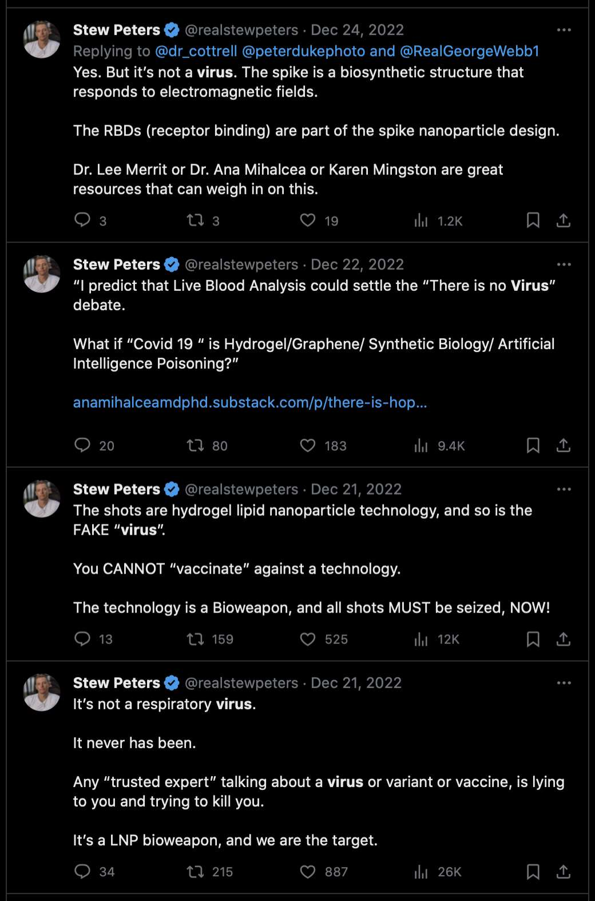
Fans of our Pfizer crew seem to be convinced that the lab leak narrative is a distraction and that COVID was caused by a nanoparticle attack:
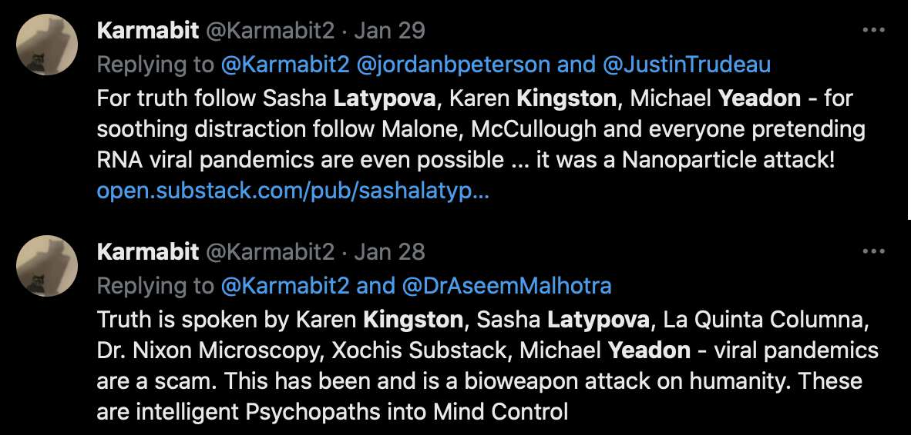
Added later: Before Latypova appeared on Stew Peters in January 2022, she was already saying that the virus hasn't been isolated on Telegram: [https://t.me/COVID1984chat/252193]
During a Twitter space in 2024, Latypova said that she and her husband got sick at the same time and she lost her sense of smell and taste, but she didn't need to take a COVID test because she knew it was fake: "Myself and my husband got simultaneously sick. I never took any COVID test - cause, I just, you know, I knew it was fake - but the symptomology was very very characteristic, the loss of taste and smell." [https://x.com/SeanBFlanagan/status/1797332010446311485, time 53:55]
Latypova was a co-founder of iCardiac Technologies which did a multimillion-dollar deal with Pfizer in 2007: [https://rbj.net/2007/01/29/icardiac-technologies-signs-deal-with-pfizer/]
Medical technology firm iCardiac Technologies Inc. has inked a multiyear, multimillion-dollar deal with Pfizer Inc., which includes an undisclosed equity investment in the local firm.
[...]
"We are extremely pleased that Pfizer has partnered with iCardiac in further developing iCardiac's suite of ECG-based biomarkers and its COMPAS platform technology for advancing the field of cardiac safety testing in pharmaceutical research and development," said Alexandra Latypova, co-founder and executive vice president of iCardiac Technologies, in a statement.
Before iCardiac, Latypova worked at a company called VirtualScopics whose lead customer used to be Pfizer: [http://www.innovocracy.org/AboutUs/BoardofDirectors.aspx]
Prior to iCardiac Technologies, Ms. Latypova headed sales and business development at VirtualScopics, Inc., a technology spin out from the University of Rochester, which achieved peak market capitalization of over $200 million (NASDAQ: VSCP). During her tenure at VirtualScopics, she expanded the client portfolio from one lead customer, Pfizer, to 6 of the top-10 pharmaceutical companies as well as multiple smaller pharmaceutical and medical device clients.
Latypova's husband Mikael Totterman also worked for both iCardiac and VirtualScopics. In his LinkedIn profile, he included the following entries on a list of his past employers: [https://www.linkedin.com/in/totterman/]
- iCardiac Technologies (founder of venture capital and Pfizer-backed company, transacted to Norwest Venture Partners in a control transaction and subsequently sold to ERT for $230 million at 20x return to early investors). Now part of Cleria Research.
- VirtualScopics (business leader of venture capital, Pfizer, and GE Healthcare backed startup, peak market cap on NASDAQ of $200 million). Now part of Philips Healthcare.
Karen Kingston has said that she used to be a "top-performing cardiovascular specialty representative with Pfizer" and that afterwards Pfizer was one of the clients of her consulting firm called Varitage. [https://karenkingston.substack.com/p/is-perception-reality] Her LinkedIn says that from 1996 to 1998, she was a "Labs/Cardiovascular Healthcare Representative" at Pfizer where she "took Manhattan territory from near last in the North East Region to #1" and she was "promoted to Cardiovascular Healthcare Representative for the east side of Manhattan", and that from 1998 to 2000 she worked as an account supervisor for CDM New York in Manhattan, which was "integral in the relaunch of Viagra by shifting focus of the campaign to younger men and establishing the clinical relevance of sexual health to overall wellness". [https://www.linkedin.com/in/karenkingstonkk/] Her LinkedIn profile also says that she has been the president and founder of Varitage from 2007 until present, with the following description: "Services range from strategic business planning and clinical communications to the development of broad-reaching digital marketing plans and e-commerce platforms. Clients include industry leaders, such as Pfizer and Medtronic, to start-ups and leading venture capital firms, such as Johnson & Johnson Development Corporation."
On a subreddit of the United States Army, there was a question about what work in psyops really involves, where someone answered that they were specialized in psychological operations and that it was "very similar to public relations and marketing with different audiences". [https://www.reddit.com/r/army/comments/rwyrfb/what_is_psyops_really/] And another user also answered: "Did Psyop for 6years now do Marketing. It's very similar just different target audience and you're not selling Tide detergent." Karen Kingston seems to have followed the opposite career trajectory.
Mike Yeadon is sometimes erroneously described as the former vice president of Pfizer, but he was only the vice president and chief scientific officer of Pfizer's division for allergy and respiratory research. An article from 2012 said: "Ziarco's CEO Dr Mike Yeadon was chief scientific officer, allergy and respiratory research, during his time at Pfizer, before the US pharma firm announced last year it would leave the facility." [https://www.pmlive.com/pharma_news/pfizer_helps_fund_biotech_venture_from_former_researchers_at_closed_kent_facility_446225] In an interview of Yeadon in 2013, he was described as the former "head of allergy and respiratory biology" of Pfizer. [https://www.nature.com/articles/nrd3936] An article by Yeadon from 2020 said: "Dr Mike Yeadon is the former CSO and VP, Allergy and Respiratory Research Head with Pfizer Global R&D and co-Founder of Ziarco Pharma Ltd." [https://dailysceptic.org/2020/09/20/lies-damned-lies-and-health-statistics-the-deadly-danger-of-false-positives/]
An article about Mike Yeadon's company Ziarco said: [https://drug-dev.com/ziarco-pharma-acquires-pfizer-drugs-secures-financing/]
Ziarco recently announced the closing of an initial $6-million tranche of Series A financing totalling $27 million. The round was led by Biotechnology Value Fund L.P, with participation by Pfizer Venture Investments.
Concurrent with the financing, Ziarco has entered into an agreement with Pfizer Inc. for the exclusive worldwide rights to commercialize a portfolio of clinical, preclinical, and research anti-inflammatory and anti-allergic assets. In return, Pfizer will receive equity as well as certain product-based milestone and royalty payments. Ziarco will use the proceeds of the financing to continue development of these assets and advance proprietary research.
Many of the stories that Latypova has covered are also somehow related to Pfizer, as you can see from these descriptions of her BitChute videos:
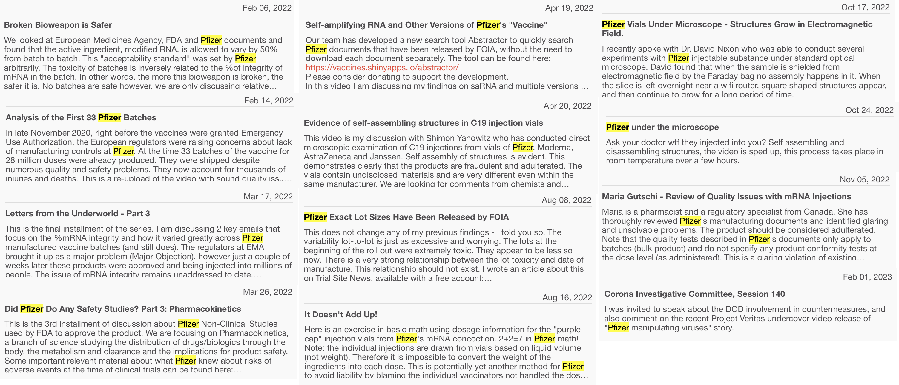
It would make sense for Pfizer to insert a bunch of people in alt media to first say that Pfizer vaccines contain hydras, and next that Pfizer vaccines contain snake venom, and then that Pfizer vaccines contain self-assembling robot arms. It makes anti-vaxxers look ridiculous, and it causes genuine criticism of the vaccines to get buried within a sea of false information.
I believe Latypova did her alt media debut on January 7th 2022 UTC on the Stew Peters Show, or at least I didn't find tweets about any earlier appearances she did in alt media: [https://x.com/search?q=until%3A2022-3-1+%28sasha+OR+alexandra%29+latypova&f=live]
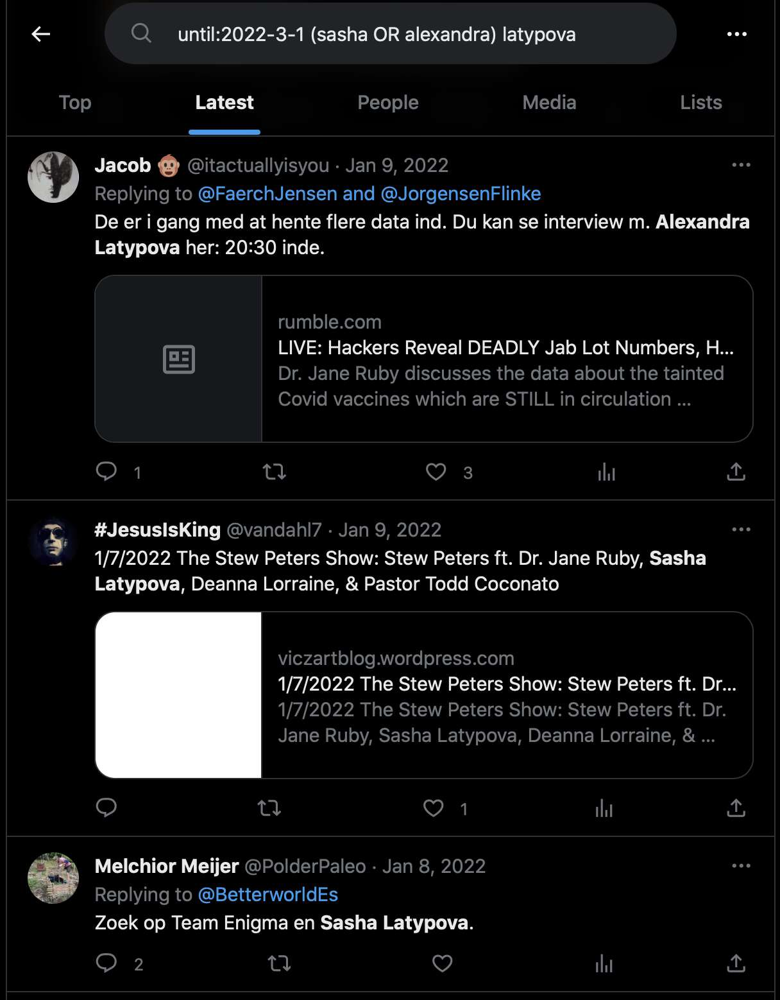
The Rumble video for Stew's interview with Latypova was titled "LIVE: Hackers Reveal DEADLY Jab Lot Numbers, HORRIFIC Pfizer Teen Trial Data and MORE!" [https://rumble.com/vs59wj-live-hackers-reveal-deadly-jab-lot-numbers-horrific-pfizer-teen-trial-data%2d.html] The description of the video said: "Recently on this show Dr. Jane Ruby came on and gave us the remarkable information that a huge percentage of side effects tracked in the CDC's VAERS database are linked to just a small percentage of the vaccine batches produced by Pfizer and Moderna. This data came from a group calling itself Team Enigma. They're a group of independent researchers with experience in medical R&D, statistics, data analytics, and everything else you'd need to investigate a vaccine's impact on millions of people. A lot of Team Enigma is anonymous but thankfully one of their number has agreed to speak publicly. Sasha Latypova joins us to discuss."
During the interview with Latypova, Stew Peters said that the vaccine data discussed by Team Enigma was released by a team of hackers, but actually the data was publicly available from VAERS. [https://www.techarp.com/internet/pfizer-moderna-vaccine-data-hack/] I don't think it was just a mistake by Stew to say that the data was released by hackers, because before Latypova had appeared on Stew's show, a news site called "Before It's News" also published an article dated January 6th 2022 which said: "Hackers broke into all the pharmaceutical companies and stold all the medial data on vaccines thank God!!!! The Great Awaking has lifted off!!! Forward this link everywhere!!!!" [https://beforeitsnews.com/health/2022/01/hackers-crack-pfizer-moderna-pfizer-servers-all-vaccine-death-data-now-public-from-all-companies-thanks-to-hackers-3043939.html] (It's interesting that Team Enigma's story was being promoted by the "Great Awakening" types before video presentations about the data by Latypova and Yeadon had even been released.)
On January 8th 2022 UTC which was a day later than Latypova appeared on Stew Peters, the Odysee channel of Füllmich's Corona Investigative Committee published a video where Mike Yeadon did a presentation of Team Enigma's vaccine lot variability data. One of his slides said that the slides were prepared by Team Enigma and the filename of the slides was "VAERS by LOT-Dec13-video ver Latypova -1.pptx": [https://odysee.com/%40Corona-Investigative-Committee/Mike-Session-86-en]
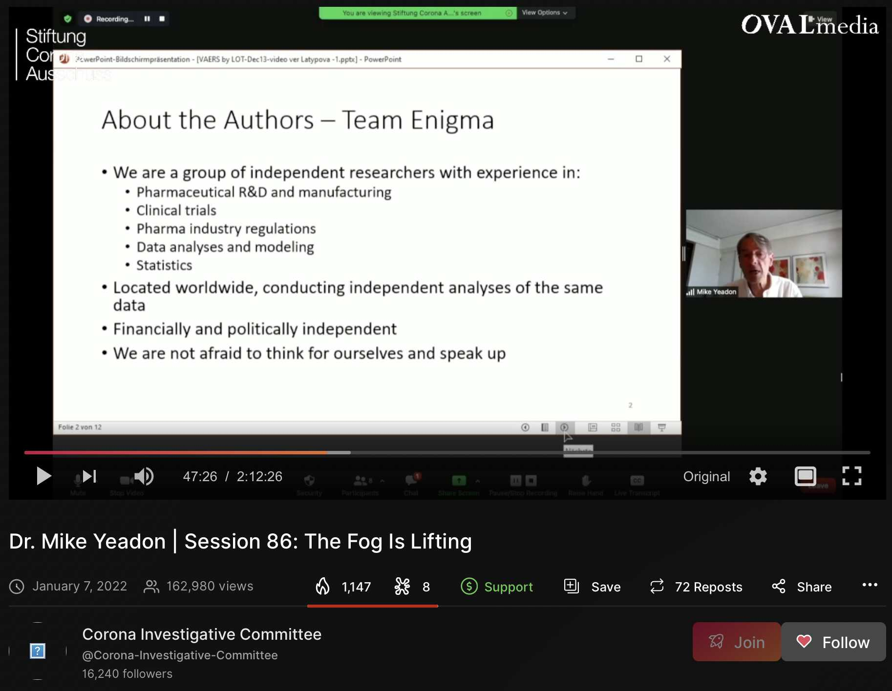
A transcript of Yeadon's presentation was published by UK Column. [https://www.ukcolumn.org/article/dr-mike-yeadons-key-testimony-part-i-the-eight-covid-lies] In June 2022, Latypova and Yeadon were both speakers in a symposium by Doctors for COVID Ethics which was hosted by UK Column. [https://doctors4covidethics.org/gold-standard-covid-science-in-practice-an-interdisciplinary-symposium-iv-freedom-is-the-cure/] Latypova only started her Substack in December 2022, but before that there was a long article she wrote about Pfizer's safety testing which I believe was first published by Doctors for COVID Ethics, and I think Doctors for COVID Ethics was also the first publisher of a long article by Yeadon in 2022: [https://doctors4covidethics.org/wp-content/uploads/2022/06/sasha-revised2.pdf, https://doctors4covidethics.org/wp-content/uploads/2022/04/The-Covid-Lies-updated.pdf]
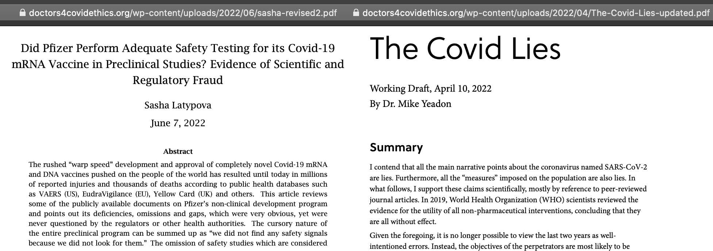
Doctors for COVID Ethics also published a Spanish translation of Latypova's article. [https://doctors4covidethics.org/wp-content/uploads/2022/06/sasha-revised2.es%5f.pdf] Doctors for COVID Ethics is an organization of Sucharit Bhakdi. Bhakdi and Füllmich are both based in Germany but they have previously lived in the U.S.
After Latypova's appeared on the Stew Peters Show in January 2022, her second-oldest interview I found was done by a Dutch channel called "Medisch weekjournaal" and her third-oldest interview I found was done by J.J. Couey who used to work at Erasmus Medical Center in Rotterdam (which George Webb says is home to one of NATO's main bioweapon labs). And it might be a coincidence, but the main guy in Team Enigma was Craig Paardekooper, who lives in the UK but who is of Dutch ancestry.
Content by people who appear on the Stew Peters Network is often translated to several non-English languages, just like QAnon content and content by Miles Guo's network. The story about graphene oxide originally came from a Spanish group called La Quinta Columna, but they also have an Odysee channel where they post content from the Stew Peters Network with subtitles in French, German, Italian, Portuguese, Romanian, Russian, and Spanish: [https://odysee.com/%40laquintacolumnainternational?view=content]
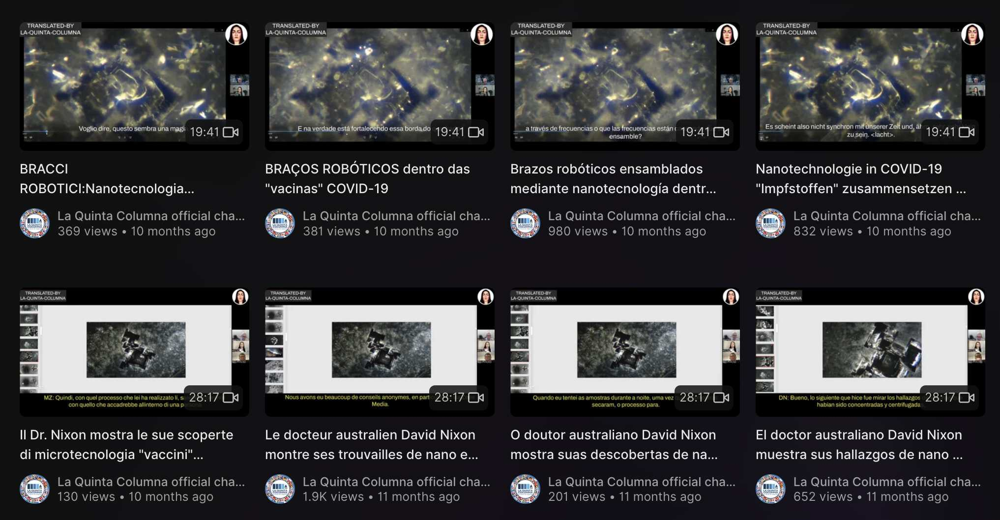
Miles Guo's Twitter bots also post video clips from English-language alt media with subtitles in various languages, and often even bots that primarily post in Chinese randomly post videos with subtitles in European languages. Often the same bots also post tweets in several different languages, like how the account shown below posted tweets in Chinese, German, French, and Spanish. For example the bot below posted a clip of an interview of Latypova with Chinese subtitles, but the bot has also tweeted in languages like German, Spanish, and French: [https://x.com/369Jessica369/status/1579301325996969985]
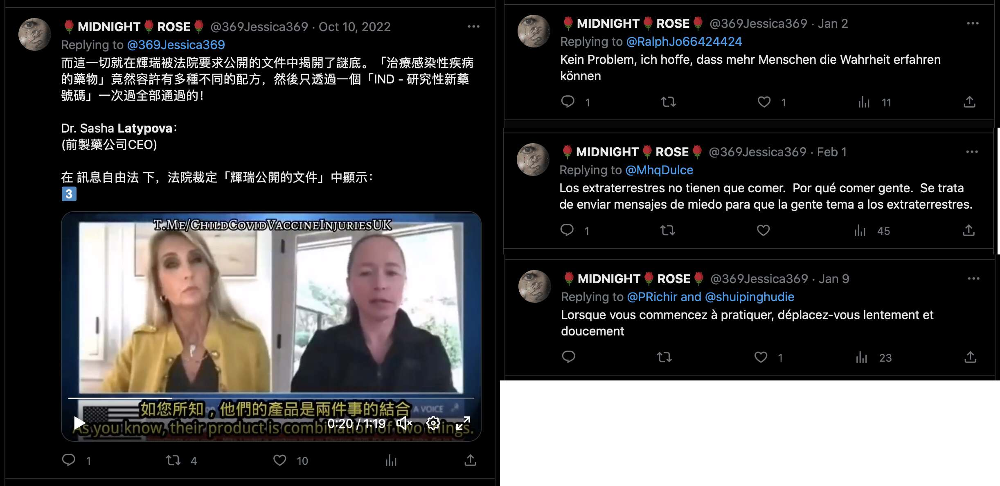
(Or actually I don't know if some of the accounts are hybrids between manually-ran accounts and bots, or they might be bots which pick some of their tweets from a pool of human-written templates, or they might be manually-ran accounts which post some automated tweets, but I'll refer to them as bots for the sake of convenience.)
One of the Guo bots also promoted J.J. Couey's story that people who say that the virus is a bioweapon are trying to trick you into being afraid of the virus. The same bot posted photos from the first anniversary of the New Federal State of China, which was held at the One World Trade Center in New York City, and which featured Limeng Yan as one of the speakers along with the former DIA head Mike Flynn and the naval intelligence officers Steve Bannon and Jack Posobiec:
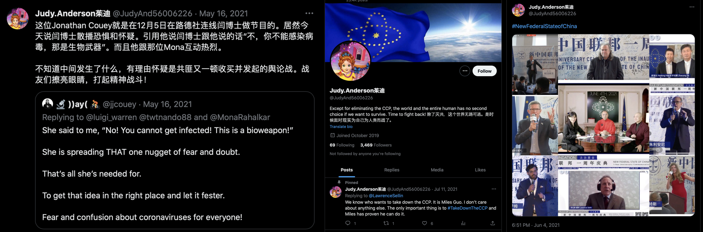
Miles Guo's bots often have English names, like how the bots in the screenshots above are named 369Jessica369 and Judy Anderson.
The funeral director John O'Looney was also promoted by Miles Guo's bots: [https://x.com/search?q=until%3A2022-1-1+john+o%27looney+lang%3Azh&f=live]
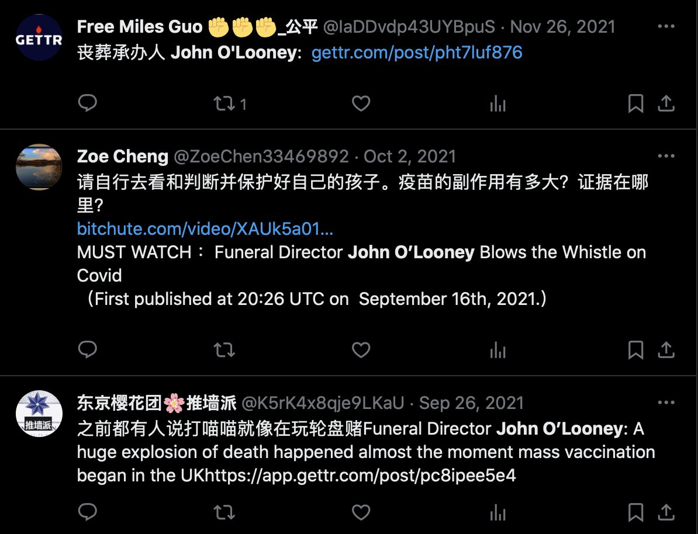
The account below posted a clip of a video by Latypova, but the same account has tweeted in languages like French and Italian, and it has tweeted about "Q drops":
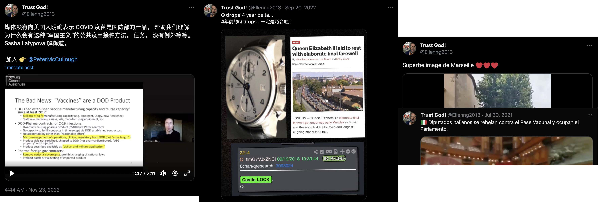
David Nixon, Shimon Yanowitz, and Mat Taylor are the Three Microscope Stooges whose specialty is using an optical microscope to find nanotechnology in COVID vaccines or human blood. All three of them have been promoted by Sasha Latypova and all three of them have appeared on the Stew Peters Show. The Twitter account in the screenshot below posted a link to an interview of Shimon Yanowitz by Stew Peters, but the same account has also posted links to news stories in random European languages. The profile picture of the Twitter account is an emblem of the Australian branch of Miles Guo's Himalaya Supervisory Organization:
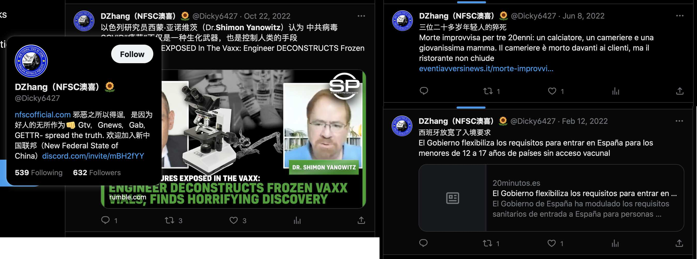
It's interesting that Himalaya Supervisory Organization has branches on several different continents, just like how Children's Health Defense has a European chapter, an Australian chapter, and an African chapter. Miles Guo's bots seem to promote content both by people associated with CHD and people associated with the Stew Peters Network. Latypova was also a speaker in an event in Sweden that was jointly organized by a Swedish organization and the European chapter of CHD. [https://sashalatypova.substack.com/p/quick-faq-about-upcoming-events-in]
Miles Guo's network has a bunch of translators who translate their content to foreign languages and who are called "GTranslators". The CHD has a blog called "The Defender" which is translated to German, French, Italian, Portuguese, and Spanish. [https://childrenshealthdefense.org/defensor/?lang=es] La Quinta Columna's Odysee channel posts videos with subtitles in the same set of languages, except they sometimes also post videos with Russian or Romanian subtitles.
Miles Guo's movement seems like another iteration of the formula that Western intelligence used to create the Unification Church and Falun Gong, because all three of them had an East Asian figurehead based in New York, all three of them controlled media empires which promoted Christianity and conspiracy content, and all three of them also publish media in various Western languages in addition to East Asian languages. Many of the East Asian people associated with Guo are Christians, like how Dinggang Wang and Limeng Yan are both Lutherans. The Unification Church also had an arm called CAUSA which operated several newspapers, publishing houses, and radio stations in Latin America. Falun Gong operated an English-language YouTube channel called Edge of Wonder TV which has now been deleted, but which posted videos about junk conspiracies like ancient aliens and QAnon. In February 2020, Guo's news site GNews published an article which said that there was a high concentration of sulphur dioxide over Wuhan which indicated that a massive number of bodies were being burned in Wuhan, but as one of their sources, they cited the website of a Chinese-language radio station called "Sound of Hope" which is based in the United States and which is ran by Falun Gong. [https://gnews.org/m/16240] (Actually earlier on January 5th, some guy on Twitter had already spotted the high sulphur dioxide level over Wuhan, but he said that it came from an aluminum plant which burned petroleum coke to make anodes. [https://x.com/psravenscroft1/status/1213935504057454592])
Miles Guo's bots are also promoting Mike Yeadon and Karen Kingston: [https://x.com/search?q=yeadon+lang%3Azh&f=live, https://x.com/search?q=karen+kingston+lang%3Azh&f=live]
(The screenshots above also show that Guo's bots post a lot of links to Gettr, but it's probably because Guo's foundation is one of the owners of Gettr, so many of Guo's bots even use the logo of Gettr as their profile picture.)
The tweet below included a clip of a video where Bret Weinstein talked about DRASTIC which was translated to Chinese with a watermark of the Himalaya Supervisory Organization: [https://x.com/jjcouey/status/1401262466978488320]
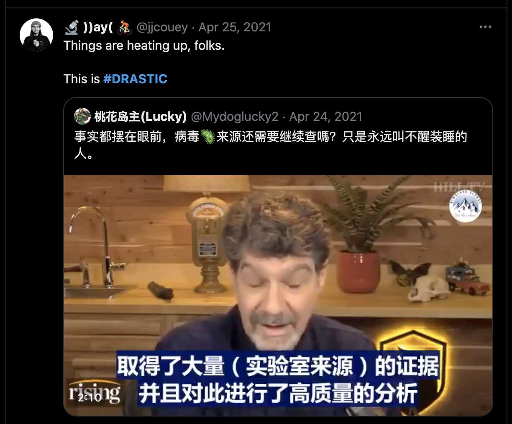
Miles Guo's movement has several Discord groups where I believe people who work as Guo's translators post clips of videos from English-language alt media with Chinese subtitles, so the people in the Discord groups might choose themselves which videos they end up translating. So even if Guo's movement would be ran by western intelligence, it doesn't necessarily mean that all of the people whose videos they translate would also be controlled opposition.
In December 2022 Michael P. Senger was one of the first people who started promoting JC's new Scooby Doo theory, because he wrote a long Substack post about one of JC's streams titled "DRASTIC Founder Renounces Lab Leak Theory of COVID's Origins". But Senger is also the author of an anti-China book titled "Snake Oil: How Xi Jinping Shut Down the World": [https://www.michaelpsenger.com/p/drastic-founder-renounces-lab-leak]
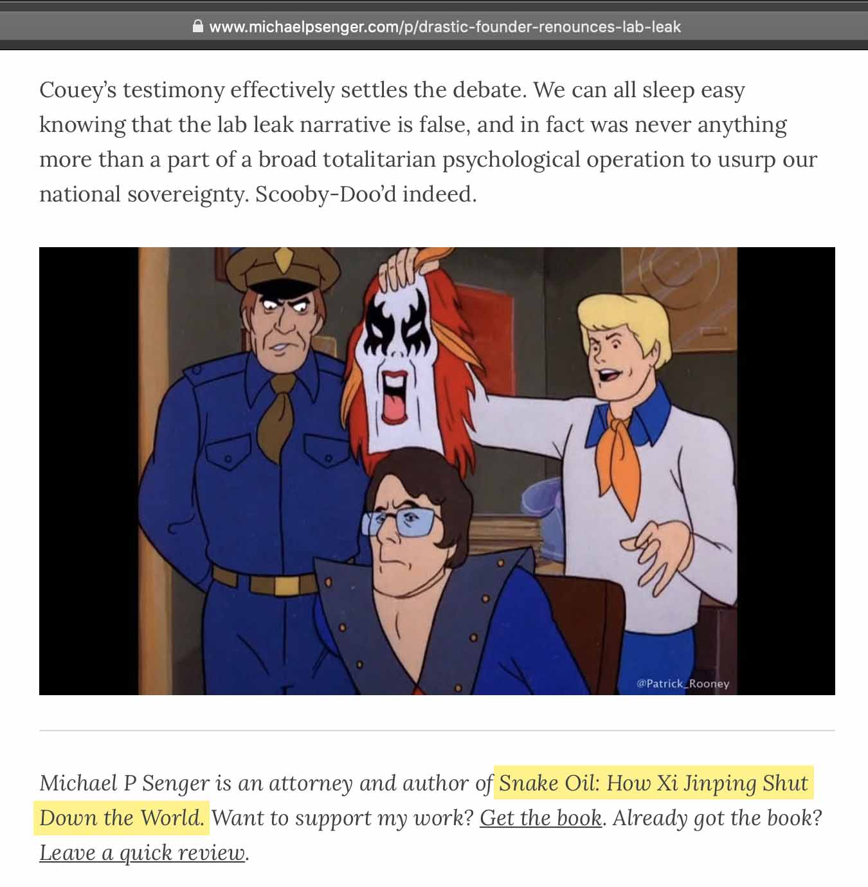
Michael P. Senger's bio says: "Michael P Senger is an attorney based in the United States. His work can be found in Tablet Magazine, on Twitter under the handle @michaelpsenger, and on Substack at michaelpsenger.substack.com." [https://www.amazon.com/Snake-Oil-Jinping-Shut-World/dp/1957083786] Wikipedia says that Tablet Magazine is "a conservative online magazine focused on Jewish news and culture".
In October 2023 when Israel was totally taken by surprise by Hamas which they totally did not create and fund themselves, Michael P. Senger tweeted a link to an article by Voice of America where he quoted text that said: "Antisemitic remarks have flooded China's heavily censored online platforms...since the Hamas attacks on Israel... Scores of online Chinese commentators and netizens quickly rallied for Gaza after the Hamas attacks...saying Israel deserves the bloodshed." [https://x.com/michaelpsenger/status/1714443184519176638] Senger also tweeted a link to an article that was published by an English-language newspaper based in Taiwan, where he quoted the text "China's state media accused of spreading anti-Israel disinformation... Chinese state-run media has spread the unverified rumor that Israeli forces are using white phosphorus bombs against civilians in a manner that contravenes international law." [https://x.com/michaelpsenger/status/1714446208696209834] And he tweeted a link to an article by Wall Street Journal which said that China "has embraced the Palestinian cause in a way it hadn't done in decades. Its once cordial ties with Israel are in tatters." [https://x.com/michaelpsenger/status/1714063843918299176] Limeng Yan has also posted a large number of similar tweets where she says that CCP is supporting Palestine. [https://x.com/search?q=from%3Adrlimengyan1%20hamas]
Karen Kingston also blames everything on the "CCP". Kingston wrote: "My prayers and intentions were that those who received my emails in May of 2021 would verify the information I sent and immediately share the message that the COVID-19 mRNA VACCINES ARE BIOWEAPONS using an advanced lipid nanoparticle technology made in China. [...] A company called SINOPEG, based in China, is the manufacturer of PEG for ALL mRNA vaccines that contain PEG, including Pfizer and Moderna. [...] BioNTech is also sharing the profits from the 'Pfizer vaccine' with another company in China, Fosun Pharma, who is also a manufacturer of the 'Pfizer vaccine.'" [https://karenkingston.substack.com/p/911-patent-for-global-covid-19-vaccine] The subheading of one of Karen Kingston's articles says: "Why did a Chinese-born, US Army engineer perfect a nanotechnology to deliver quantum dots in humans? A nanoweapon technology that’s owned by the Chinese military and used in the COVID-19 vaccines." [https://karenkingston.substack.com/p/part-5-dismantling-the-covid-19-deceptions] Kingston also published a Substack post with the title "BREAKING: Tesla Corporation Could Currently Be Under the Control of the Chinese Military". [https://karenkingston.substack.com/p/breaking-tesla-corporation-could]
Karen Kingston reminds me of Cyrus Parsa, because both of them pretend to be experts on AI and 5G and they blame everything on China. Cyrus Parsa has a master's degree in homeland security. Celeste Solum also says that she used to work for FEMA and DHS, but she's another one of these people who claim to be former insiders in the system, and who are interviewed by people like Stew Peters and Mike Adams, and who talk about topics like AI, nanotechnology, quantum dots, and hydrogel. I think Cyrus Parsa first entered into alt media through Owen Shroyer's show, which should be a huge red flag. The oldest tweet I found which mentioned Parsa was made in October 2019 by an account called "Informal Warfare" whose profile picture is a drawing of Alex Jones, and the second oldest tweet I found was a link to an interview that Parsa did with Owen Shroyer the same day. [https://x.com/search?q=until%3A2019-12-30+%22cyrus+parsa%22&f=live] In December 2019, Parsa filed a lawsuit against "Google L.L.C, Facebook inc, DeepMind Inc, Alphabet Inc, Neuralink Inc, Tesla Inc, Larry Page, Sergey Brin, Sundar Pichai, Mark Zuckerberg, Elon Musk, CISON PR NewsWire & John Doe's 1-29" for reasons such as "MISUSE OF ARTIFICIAL INTELLIGENCE, CYBERNETICS, ROBOTICS, BIOMETRICS, BIOENGINEERING, 5G AND QUANTUM COMPUTING TECNNOLOGY, and for transfering AI technology to China, and for violation of several genocide conventions because of China's treatment of Uyghurs, Tibetans, Christians, and Falun Gong". [https://digitalcommons.law.scu.edu/cgi/viewcontent.cgi?article=3104&context=historical] One of the oldest tweets I found which mentioned Parsa was posted by an account named "Uyghurtrailblazer" which tweeted: "A historic day for the Uyghurs and other victims of China. Mr. Cyrus Parsa filed a suit against Google, FB and a few others in California. Spread the news. I am calling on the Uyghurs and other freedom lovers to back Mr. Parsa!!!" [https://x.com/Trailbl16797622/status/1208942910454013953] (For some reason there seems to be a huge number of these Uyghur separatist accounts on Twitter who post in English.)
The same kind of people who are employed to produce disinformation that is targeted against foreign adversaries are also employed to produce disinformation that is targeted against the domestic population. For example Dr. Eowyn had one of the most popular blogs about Sandy Hook and she wrote three chapters in Jim Fetzer's book about Sandy Hook. In 2016 it was revealed that her real name was Maria Hsia Chang, and that she was a practicioner of Falun Gong and she wrote a book about Falun Gong where she presented them in a favorable light, and that she had written several academic articles which basically promoted the line of Epoch Times on East Asian policy. [https://www.crisisactorsguild.com/2016/01/18/who-writes-this-shit-who-is-dr-eowyn/] Her old bio on the website of her university said that she "is a lecturer for the U. S. Department of Defense's Joint Counterintelligence Training Academy, as well as the U. S. Marine Corps War College". [https://web.archive.org/web/20070104091632/http://www.unr.edu/cla/polisci/famaria_hsia_chang.htm] Dr. Eowyn also collaborated with David Weiss, who used to be an assistant of the Sandy Hook hoaxer Wolfgang Halbig. David Weiss later became a flat earther, and in March 2020 he was one of the very first big names in alt media who started to say that the SARS-CoV-2 virus does not exist. [novirus.html#David-Weiss-and-Timothy-Rothschild] One video that David Weiss did with Stew Peters was titled "TRUTH About Flat Earth Theory: Biblical Firmament vs. Round Ball Earth Propaganda", and the description of the video said: "This week on Stew Peters premium, we are joined by Dave Weiss to discuss NASA and Big Tech's lies surrounding the shape of the earth we all live on." [https://stewpeters.com/video/2022/11/truth-about-flat-earth-theory-biblical-firmament-vs-round-ball-earth-propaganda/] In one episode of the Stew Peters Show, the first guest was Emily Grace Rainey who they described as a "former Special Operations psyop officer", and the second guest was David Weiss who presented his sales pitch about flat earth. [https://www.stewpeters.com/video/2022/12/power-blackouts-sweep-nation-former-special-operations-psyop-officer-warns-of-incoming-war/] I don't know how long Stew Peters has been a flat earther, but by 2023 he was saying on Twitter that the earth is flat. [https://x.com/realstewpeters/status/1686187946141999105, https://x.com/realstewpeters/status/1695953001599349218, https://x.com/realstewpeters/status/1642979962318643204]
In May 2022 Jane Ruby organized an event at Palm Beach called "Pharmaceutical Insider Expose", where the speakers consisted of David Martin, Sasha Latypova, Karen Kingston, and Mike Yeadon: [http://web.archive.org/web/20220503133508/https://truthaboutbigpharma.wordpress.com/]
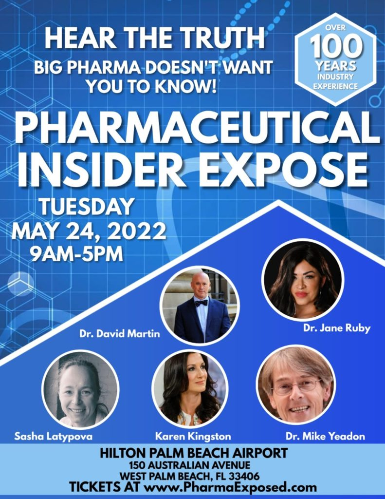
David Martin was the president of Mosaic Tech which worked with clinical trials. He wrote: "Here at Mosaic, we have developed an efficient, highly trained team of experts to work with you to achieve your goals in technology transfer, product research and development, clinical trials design, due diligence, and business development." [https://web.archive.org/web/19990501081858/http://www.mosaictech.com/president.html] Sasha Latypova's company iCardiac also conducted clinical trials, and Jonathan Engler was the co-founder of a company called ClinPhone which provided software services to automate clinical trials.
David Martin has now also turned into a no-virus guy, because in July 2023 he did an interview with Alec Zeck where he said that viruses are not real, that nucleic acids are not real, that DNA is not real, and that atoms are not real. [https://unite.live/the-way-forward/the-way-forward/19-jul-12-00-clarifying-the-viral-narratives-with-david-martin-phd-alec-zeck?video_id=936, https://expose-news.com/2023/08/10/there-was-no-sars-cov2-disease-just-a-set-of-symptoms-and-a-branding-campaign-dr-david-martin/] During the interview, Alec Zeck said: "So just to be clear here, so when we're talking about a virus - I'm not talking about the previous definition of poison, I'm talking about a tiny replication-competent obligate intracellular parasite consisting of a genome surrounded by a protein coat that is an infectious particle." [39:50] And Martin told him: "All bulls**t, 100% bulls**t." Next David Martin said: "DNA does not exist." [42:41] Then Alec Zeck replied: "I don't disagree with that." And Martin said: "It doesn't." David Martin also said: "There are no atoms, there never have been, and there never will be." [44:52] And next he said: "The model of an atom then gives rise to the model of a thing we call a nucleic acid. Now, nucleic acids do not exist."
David Martin also did many of his earliest appearances in alt media together with Sacha Stone, and he has served as an advisor to "Allied Intelligence and Financial Security Agencies": novirus.html#David_Martin_and_Sacha_Stone.
People like Alec Zeck and Tom Cowan are now also saying that DNA is not real. In 2023 the ex-military guy Alec Zeck organized an online conference called "End of COVID". A poster for the conference said that they had 5 directors, out of which two were the flat earthers Kelly Brogan and Amandha Vollmer, and a third director was Dawn Lester who I believe did her first two interviews in alt media with the flat earthers Greg Carlwood and Crrow777. [http://web.archive.org/web/20200427155343/https://www.whatreallymakesyouill.com/podcasts.html] In 2020 there was a similar online conference about COVID called EVENT 202, but it was organized by the flat earther Allegedly Dave, and one of the speakers at EVENT 202 was the ex-military flat earther Shelley Lewis who made a film about flat earth together with the ex-military flat earther Joshua Michael Gennari. [http://web.archive.org/web/20200501123842/https://event202.org/speakers/shelley-lewis/] Alec Zeck was also listed as one of the "teachers" on the website of Jason Shurka's Academy of Divine Knowledge. [https://web.archive.org/web/20211105102848/https://academyofdk.com/meet-our-teachers/]
Mike Yeadon recommended people to listen to interviews of the flat earther Sage of Quay: "If you don't yet have that understanding, that a small group of powerful families have organised the way the world works with increasing precision down the centuries, it will be harder to see the otherwise 'hidden hand'. I recommend listening to recent interviews given by Mike Williams aka Sage of Quay." [https://suavek1.substack.com/p/the-arguments-for-no-virus-part-8] Sage of Quay was one of the many flat earthers who were early promoters of the no-virus theory. His blog has now been deleted and his posts weren't archived at the Wayback Machine, but he seems to have posted videos about the no-virus theory Owen Benjamin and David Icke in early April 2020, and he may have already written about the theory in March 2020. [https://x.com/search?q=from%3Asageofquay%20virus%20until%3A2020-4-10&f=live]
David Nixon says that COVID vaccines contain self-assembling structures like microchips and robot arms. On a list of in interviews on his website, the oldest interview is with Latypova and the second-oldest interview is with Maria Zeee: [https://drdavidnixon.com]
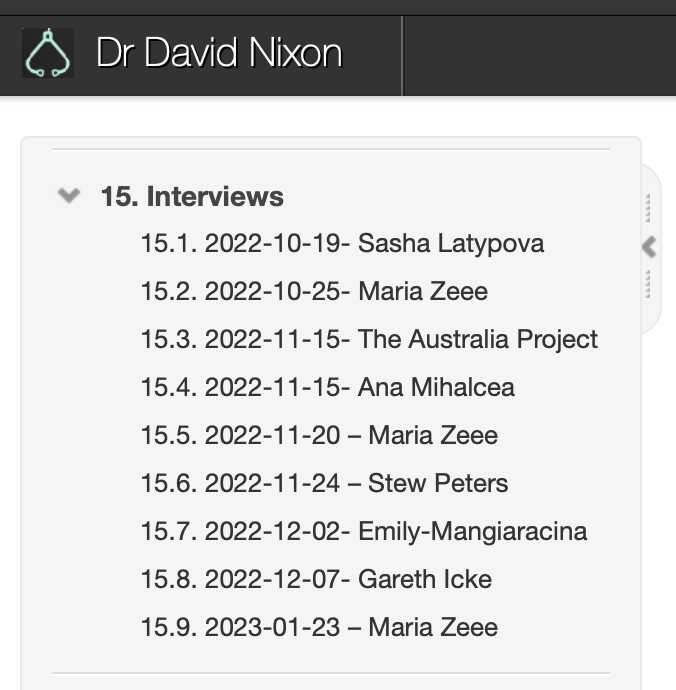
However when I searched for early references to Nixon on Twitter, I found that before his interview with Latypova was published at BitChute, he had also done one interview with Maria Zeee and another interview with Ana Maria Mihalcea. [https://x.com/search?q=%22david+nixon%22+until%3A2022-10-20&f=live, https://odysee.com/%40laquintacolumnainternational/M%C3%A1s-hallazgos-de-nano-y-microtecnolog%C3%ADa-dentro-de-las-vacunas-COVID-19%2e, https://anamihalceamdphd.substack.com/p/new-images-of-self-assembly-structures] Nixon's interview with Maria Zeee was translated by La Quinta Columna to French, Spanish, and Portuguese, and the translated versions were mirrored by several channels on Rumble, BitChute, and Odysee.
In October 2022, Latypova even wrote an article about David Nixon's microscope imagery for trialsitenews.com, where she didn't ask any critical questions, but she just wrote that the rectangular structures that were shown in the videos were not cholesterol or salt crystals: [https://www.trialsitenews.com/a/direct-microscopic-examination-of-pfizers-covid-19-injections-contents-of-the-vials-are-interacting-with-electromagnetic-fields%2e-0d437119]
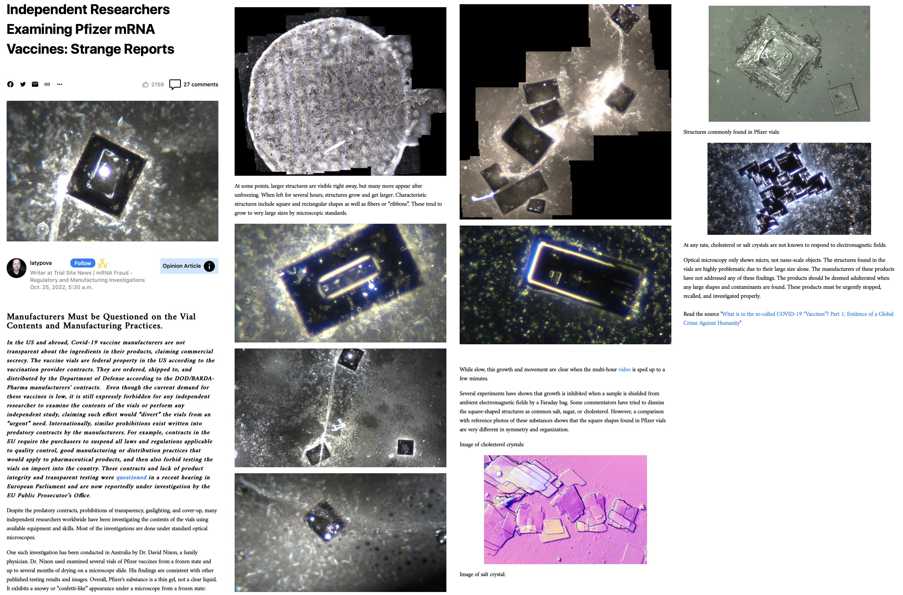
Geoff Pain said that the translucent rectangular structures were cholesterol and the black rectangular structures were sugar crystals. [https://geoffpain.substack.com/i/96134095/sugar-crystals-are-easily-identified] Sucrose is listed as a component of Pfizer vaccines.
In the second interview that Nixon did with Maria Zeee, they broke the news that COVID jabs contain self-assembling robot arms. [https://zeeemedia.com/interview/world-first-robotic-arms-assembling-via-nanotech-inside-covid-19-vaccines-filmed-in-real-time-dr-nixon/] Maria Zeee's show is one of the shows on the Stew Peters Network, which always seems to be the first to break the news when strange objects are found in vaccines or in the blood of vaccinated people. At time 8:52, Maria Zeee said: "I want to ask you, Dr. Nixon, because it looks like little robot arms, even." Then Nixon circled the part of the video below where I added the red circle, and he said: "This is - this - you look at the way the levers are working in this - but, you know that - you've got triangles, you've got levers, you've got pinchers. [...] It even falls up on itself, goes up to get the leverage. [...] It creates some sort of a propulsion system, I mean, you look at the rotation on that."
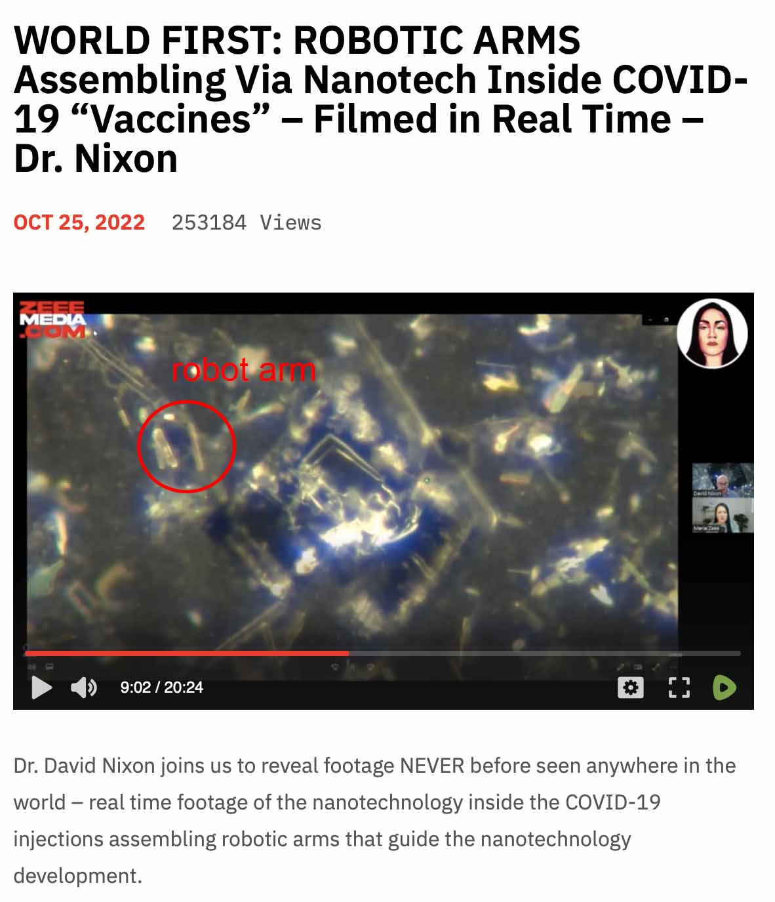
Nixon has said that his photos were taken with a regular light microscope at 400-fold or 2000-fold magnification level, so his photos cannot display nano-scale structures. However Ana Maria Mihalcea wrote that the photo by Nixon below featured a "carbon nanotube": [http://web.archive.org/web/20240000000000%2a/https://anamihalceamdphd.substack.com/p/new-images-of-self-assembly-structures]
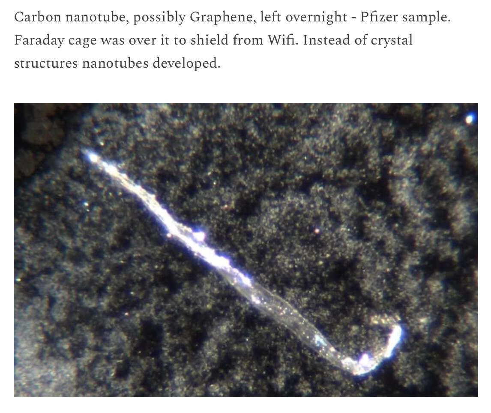
For comparison, here's a real photo of carbon nanotubes that was taken with a scanning electron microscope: [https://www.researchgate.net/figure/Scanning-electron-microscopy-image-of-carbon-nanotube-oxide-composite-formed-by-the_fig3_224814041]]
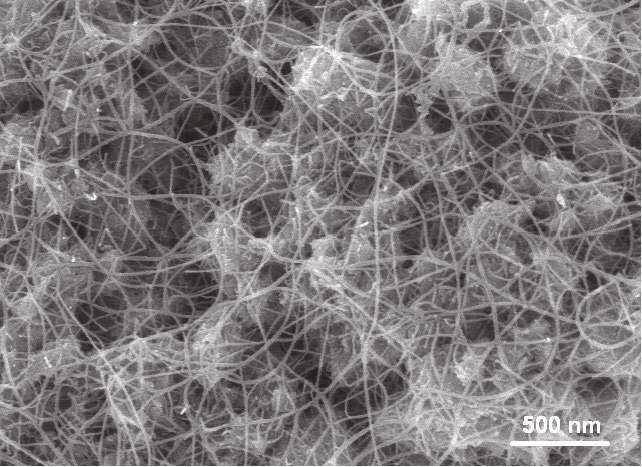
I don't know if Nixon's videos actually even display the real contents of vaccine vials, but if they do, then the crystallized structures may be cholesterol, because cholesterol is listed as an ingredient of the Pfizer vaccines: [http://web.archive.org/web/20210527170119/https://www.fda.gov/media/144414/download]
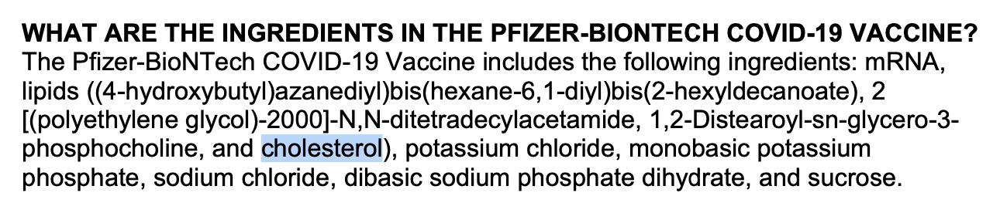
In September 2022, Latypova published a video on BitChute where she interviewed the Israeli electric engineer Shimon Yanowitz, who showed photos of his blood under a light microscope. [https://www.bitchute.com/video/9ZFHWKEYxlCa/] The description of the video said that "the images show disturbing changes which are typical of the blood after Covid-19 injections, yet Shimon did not have the shots". Yanowitz said that the objects in his blood may have come from either shedding or chemtrails. At time 9:48, he said that the "ribbon" in the photo below might be Morgellons, and that it looked "very mean" and that it made red blood cells nervous: "How did this ribbon - we can maybe elaborate a lot, we can discuss if this is something called Morgellons or another thing - but this seems to be composed of the same material - maybe carbon-based - that we see in the jabbed people. And this is very worrying, because I shouldn't be having it. We can see it's not natural. It's definitely not organic. And it looks very mean. And it's not the end of the story. And, so, you can also see that the red blood cells are getting very nervous around this entity."
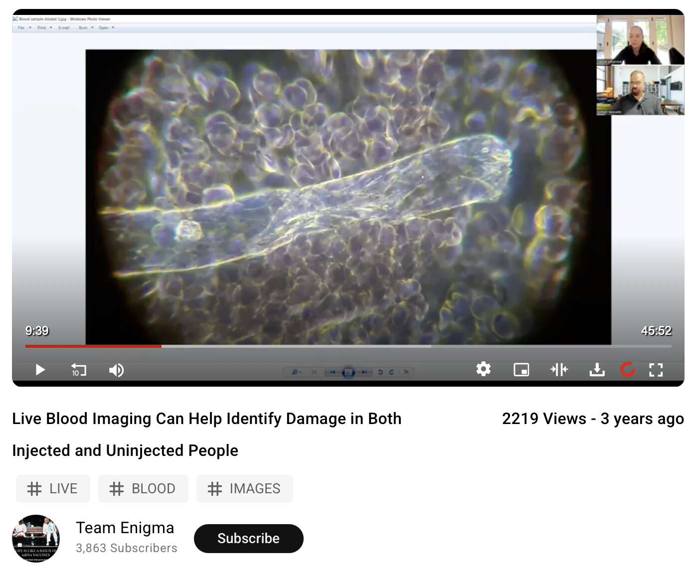
At time 13:55 in the interview with Latypova, Yanowitz said: "And this is just a tiny drop from my finger, and we can see all these dinosaurs emerging from this tiny blood drop." (So maybe we can add dinosaurs to the list of objects that the Stew crew has found in blood or vaccines... Even though actually Yanowitz just used the word dinosaur as a descriptive term for a type of object that was visible in the photos, but I bet a certain percentage of his audience thinks that it's real dinosaurs.)
Latypova seemed to accept Yanowitz's claims at face value and she didn't ask him any tough questions, just like was the case with her interview with David Nixon. So is it a coincidence that Latypova did her alt media debut on the Stew Peters Show and she's promoting all of these Stew Peters psyops?
canceledmouse posted this comment about Latypova's interview with Yanowitz: [https://x.com/canceledmouse/status/1680751292803686401]
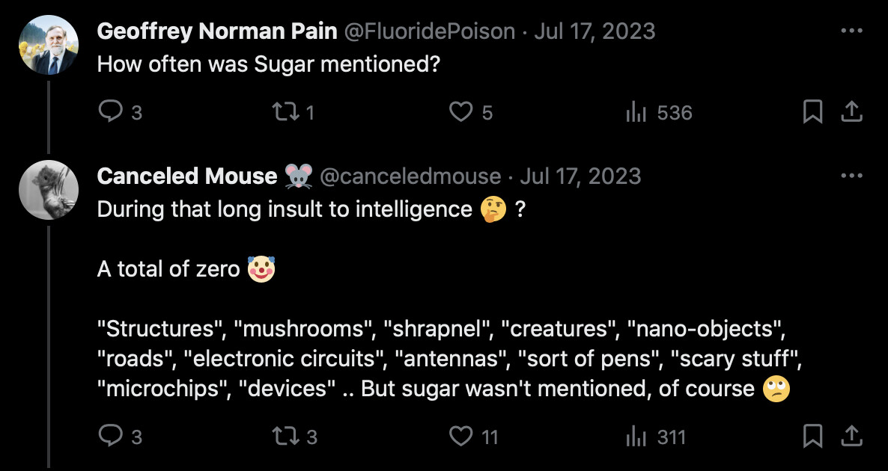
When I searched BitChute for the keyword Shimon Yanowitz, the oldest video I found was an interview Yanowitz did with the Jew Tom Cowan. [https://www.bitchute.com/search/?query=shimon%20yanowitz]
I believe Karen Kingston made her alt media debut in July 2021 when she appeared first on the TV show of Doug Billings and next on the Stew Peters Show. [https://x.com/search?q=%22karen+kingston%22+until%3A2021-7-29&f=live, https://www.bek.news/therightside/fe0c4a3a-d139-472b-ad84-da00938fd881/] The show of Doug Billings is aired on BEK TV, which is a cable TV channel where they also air the Stew Peters Show, and Stew Peters is mentioned in about a quarter of the TV channel's most recent Facebook posts. [https://www.facebook.com/bektvnews] When Karen Kingston first appeared on the shows of Doug Billings and Stew Peters, she was presented as a former Pfizer employee whose big revelation was that COVID vaccines contain graphene oxide and hydrogel: [https://forbiddenknowledgetv.net/former-pfizer-employee-confirms-poison-in-covid-vaccine/]
Stew Peters brings us another blockbuster interview with Karen Kingston, a former Pfizer employee and current analyst for the pharmaceutical and medical device industries. She comes forward with indisputable documentation that must be shared with the ENTIRE WORLD, immediately.
She says, "I read the patent to look for graphene oxide. It is not listed in the patent because it is a trade secret. Remember, Bill Gates saying that there was a trade secret?" However, the Chinese patent does list graphene oxide. She says the main reason it's not listed in the US patent is because graphene oxide is poisonous and it's well-known that it's poisonous. The other reason is because it's the main ingredient of Hydrogel, which is the liquid AI template that's used for some of Elon Musk's research and Bill Gates, as far as creating an interface between humans and the internet."
There's a certain set of nanotech-related technologies that have been hyped up in the controlled alternative media, like hydrogel, quantum dots, and graphene oxide. People on the Stew Peters Network have found all of them in COVID jabs. In 2020 the first person I heard talking about hydrogel and quantum dots was the Messianic Jew Celeste Solum, but she has later also appeared on the Stew Peters Show:
Latypova has now also jumped on the hydrogel bandwagon, because in July 2023 when Jane Ruby hosted the fourth hour of InfoWars and she had Latypova on as a guest, Latypova said the following: "I have some anecdotal evidence from the various sources that are reliable - that they don't have an incentive to lie about this. And I personally recorded the video with a researcher in Australia. We were looking at a common brand of dental anesthetic under microscope, just simply looking as it dries, just a drop of it drying under microscope. And we observed a bizarre chemical process - or you know, the physical chemical process - that is not consistent with just being kind of a suspension in water solution of lidocaine. It was clearly hydrogel. And hydrogels are used in injection in various materials - various medical materials - but they should be disclosed. This wasn't disclosed anywhere. And hydrogels are used to increase the stability of a fragile component, or increase the circulation time in the body, or stability. And so maybe that's why they formulated it this way, but they don't disclose it." [https://www.bitchute.com/video/6wSCNCHm1dUa/, time 35:55] Near the end of the interview Jane Ruby asked if there's also hydrogel in the white long kalamari clots that have supposedly been found by embalmers and funeral directors like Richard Hirschman, but Latypova answered that hydrogel is probably incorporated into the kalamari clots. [time 40:45]
Karen Kingston has also written: "Smart hydrogel is the key nanobiotechnology that creates the deadly clots featured in Died Suddenly." [https://karenkingston.substack.com/p/millions-of-self-assembling-nanotech]
In September 2023 Latypova tweeted a photo of a glass vial with the text: "Pfizer injections are hydrogel. Visible right here." Someone posted this reply: "Odd that with over 100 vials analyzed, I’ve never seen anything like what you are represented here. What is this? Where did it come from and what did you add?" But Latypova replied: "This is a photo from Pfizer manufacturing line in US. Manual inspection of vax vials. I have talked to many scientists and doctors and there are hours of video footage of the vials (ex-US) and they confirm the substance prior to dilution is hydrogel. It is likely DARPA hydrogel." [https://x.com/sasha_latypova/status/1706423055768260824] The photo she posted is supposed to have come from the Project Veritas whistleblower Melissa McAtee. [https://x.com/sasha_latypova/status/1662955987202973698] In another tweet Latypova stated it as a fact that COVID vaccines were formulated in "DARPA hydrogel" (and not even plain old hydrogel): [https://x.com/sasha_latypova/status/1686782269997113344]
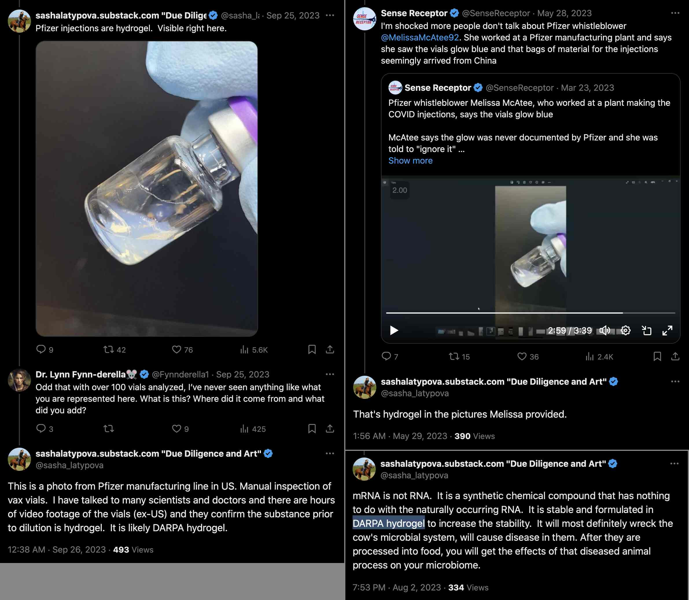
Karen Kingston published a Substack post where she said that the kalamari clots were caused by hydrogel, and she linked to a post by Ana Maria Mihalcea who she claimed had successfully used intravenous EDTA to treat the blood of patients that was contaminated with hydrogel. [https://karenkingston.substack.com/p/is-there-a-scientific-explanation] The Stew crew also claims that EDTA is a chelating agent which is capable of removing graphene oxide from the body. But never mind that EDTA has been associated with leprechaunism: [https://x.com/FluoridePoison/status/1728498758894465518]
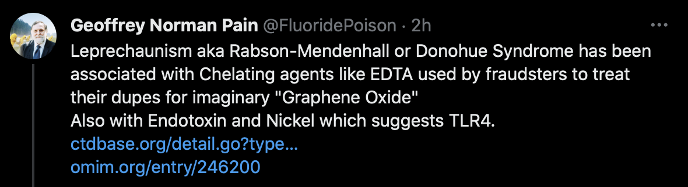
Latypova also did a video about hydrogel with David Nixon and Shimon Yanowitz. Her blog post about the video said: "Shimon Yanowitz, a researcher from Israel joined me and David on a zoom call to observe in real time what happens with a common dental anesthetic injectable under microscope. The brand of anesthetic is Septodont and the product name is Lignospan. David placed a drop of it on a microscope slide and simply observed as it was drying. The process revealed that the substance is likely hydrogel due to the 'bubbling' phenomenon as it dries. The process becomes more energetic when a cellphone is placed next to the sample." [https://sashalatypova.substack.com/p/looking-at-dental-anesthetic-under]
Latypova also published a Substack post about how COVID vaccines contain hydrogel: [http://web.archive.org/web/20230712153341/https://sashalatypova.substack.com/p/more-on-the-issue-of-placebo-batches]
I am fairly certain that there were no saline placebo batches in broad commercial distribution (with exception of televised injections of government officials and dedicated Pfizer/Moderna employee batches). Here is why.
Vax substance visually looks different from normal saline, because it is formulated as a special type of hydrogel. Very likely it's what is called DARPA hydrogel, stuff that places like Robert Langer lab at MIT and Charles Lieber lab at Harvard work on.
[...]
Also, Melissa MacAtee, a whistleblower from Pfizer Chesterfield manufacturing facility reported this appearance of substance in vials. It glows opalescent blue, because it is a hydrogel:
[...]
She reported that Pfizer placed labels on vials unusually low to hide the substance, but it could still be visible when the product is handled anywhere in the supply chain. Therefore, if there were vials of saline amongst vials with hydrogel, someone would notice this. Too much risk of accidental detection by people who are not in on the scam.
[...]
So, there could be a possibility that Pfizer "dilutant" is empty LNP (hydrogel). It is possible to formulate a thin version of hydrogel such that it looks like water. In the places where it was used people would get higher toxicity events and in other places where they got their own saline procured - would be lower toxicity.
My current conclusion is that all vials are hydrogel, and some contain more concentrated toxic biological materials (nucleic acid chains), plasmid DNA, toxic metals and other garbage. Empty hydrogel is not benign, but it also gets unevenly diluted during vaccination, and that results in another level of heterogeneity which explains why many people don't have any side effects. Some doses end up being mostly saline with a bit of hydrogel that does not cause much damage.
In the Substack post I quoted above, Latypova referred to the "Pfizer whistleblower" Melissa McAtee who is also known as Melissa Strickler. The earliest tweet about her I found was from October 2021, when she appeared on Project Veritas as a whistleblower who said that Pfizer jabs contain luciferace and graphene oxide. [https://www.projectveritas.com/news/pfizer-leaks-whistleblower-goes-on-record-reveals-internal-emails-from-chief] She was soon later interviewed by Candace Owens on DailyWire and by Mike Lindell's cohost Brannon Howse on Lindell TV, and an article about her was published by Red Voice Media, and next month she also appeared on Stew Peters. [https://x.com/search?q=%22melissa+mcatee%22+until%3A2021-10-30&f=live] DailyWire is the outlet of the Jew Ben Shapiro, and Project Veritas is funded by Jews like Robert Shillman. [https://www.jpost.com/diaspora/some-funding-sources-of-conservative-project-veritas-also-fund-jewish-causes-515751] Jane Ruby's bff Larry Loomer used to work for Project Veritas until 2017. In 2019 Zach Vorhies came out as a whistleblower on Project Veritas about how Google discriminates against conservatives, and he claimed that he received a text message from Q which said that he has guardian angels watching over him, but in 2018 he was the main eyewitness who was interviewed by the media about the YouTube HQ shooting, and his page at mylife.com used to say: "Zachary's ethnicity is Caucasian Jew, whose political affiliation is currently a registered Classical Liberal Larper; and religious views are listed as Christian Larper." [http://web.archive.org/web/20200423031655/https://www.mylife.com/zachary-vorhies/e910516938912] Charles Johnson tweeted: "I want to be fully on record that I saw Ben Shapiro receive tasking from Israeli intelligence connects to Netanyahu when I worked next to him at Breitbart.com. When I asked him about it he said he always kept close ties. It's time for Ben to register under FARA." [https://archive.ph/BnXUz]
Even though Latypova was trying to get people afraid of hydrogel like Kingston, Latypova was still saying that Kingston's story about graphene oxide was fake. Latypova wrote the following tweet about an article about graphene oxide by Expose News: "This is based on a fake story in Expose which was fed to everyone by Karen Kingston. She designed that fake story knowingly, as she is competent enough to read the Pfizer report quoted and see it was not about the GO in the jab composition. this is how fake diversions are made". [https://x.com/sasha_latypova/status/1647895834959261696] And Latypova also tweeted: "That's fake news. The Pfizer document is unrelated to vax ingredients, it's just an imaging experiment where graphene is used for cryo-EM imaging set up. Karen Kingston mislead a bunch of good people. https://sashalatypova.substack.com/p/pfizer-evidence-of-graphene-oxide". [https://x.com/sasha_latypova/status/1643754280279760897]
Karen Kingston has also promoted the Stew psyops about hydras and snake venom. In 2021 Stew Peters asked Karen Kingston: "So you are equivocally saying that hydra exists in this shots?" Then she answered: "Transgenic hydra does. So transgenic hydra is like a chimeric virus. It's when you take an organism and you artificially induce DNA from other organisms, other species, into that organism." [https://www.bitchute.com/video/NJqVMmI0b2DV/, time 7:25] The description of an episode of The Stew Peters Show from 2022 said: "This segment of The Stew Peters Show brings on another researcher of the COVID-19 Snake Venom theory, Karen Kingston! Karen Kingston has found shocking evidence that leads further towards this virus being linked to snakes, and explains what this new information means for us!" [https://rumble.com/v11m3ly-pitt-study-cobra-venom-in-spike-protein-bing-liu-had-discovered-the-deadly%2d.html]
In November 2022, Reiner Füllmich's "International Crimes Investigative Committee" hosted a panel where the main stars were Shimon Yanowitz and David Nixon, who claimed that they had used a light microscope to find self-assembling structures in their blood or in COVID vaccines. It was the first time when Mike Yeadon was featured as a co-host of Füllmich's panel, and another participant in the panel was Karen Kingston (even though to Yeadon's credit, he actually said in a polite way that the evidence presented by Nixon and Yanowitz was not very convincing): [https://anamihalceamdphd.substack.com/p/icic-international-crimes-investigative]
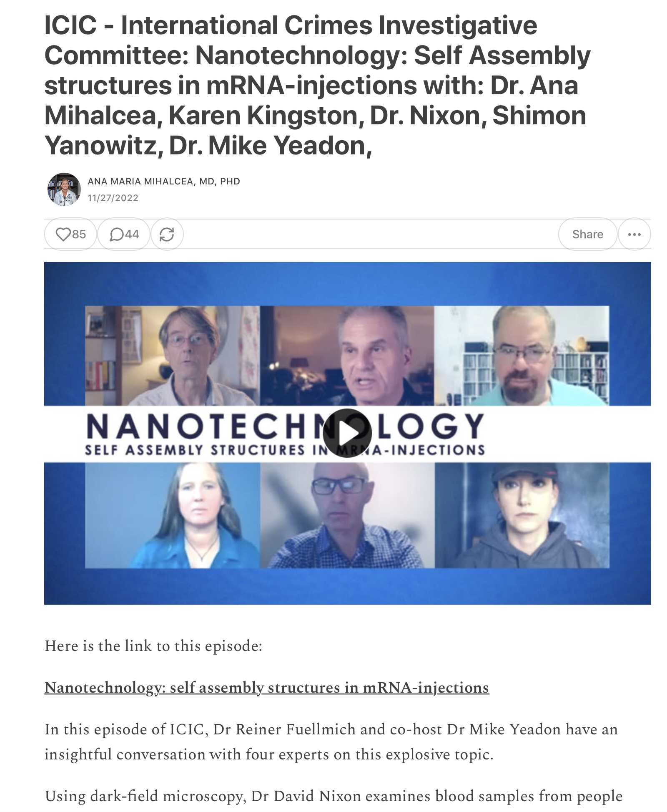
In September 2023, Latypova posted a Substack article where she recommended people to watch a video by Mat Taylor where he claimed that he was able to use a light microscope to see nanotechnology in COVID vaccines. [http://web.archive.org/web/20231010011313/https://sashalatypova.substack.com/p/mat-taylor-provides-summary-of-microscopy] Latypova wrote that "Mat Taylor is a true natural scientist in the original sense of the word" and that his "approach to understanding what is going on with covid injections is a valid one". Latypova included the following disclaimer in her Substack post, but she didn't have any other critical words about the video: "My preference is not to call this 'nanotechnology' (yet) because it is based on optical microscopy observations (not nano-scale). There should be more investigation at the actual nano-scale, and in addition, a chemistry/material science investigation."
David Nixon, Shimon Yanowitz, and Mat Taylor are all poor at doing presentations, they don't seem credible at all, and the objects in their microscope images don't look anything like nanotechnology. David Nixon sounds like he has Down's syndrome and it's hard to even understand what he says. The Three Microscope Stooges would've probably gotten almost no traction if they wouldn't have been promoted by people like Stew Peters, Reiner Füllmich, and Sasha Latypova.
When Jikkyleaks posted a Twitter thread about Jane Ruby, Latypova replied: "I don't know what the 'correct' position on GO and snake venom. Do you? These are open questions. Snake venom (and many other venoms) as synthetic peptides is backbone of medicinal chemistry for example." [https://x.com/sasha_latypova/status/1665017138447360000] Next she also said this about Jane Ruby: "I have not seen her saying anything that's false. Please check your sources of information. If you have anything you can point to that she said was really not true, please let me know. Not just difference in opinion". [https://x.com/sasha_latypova/status/1664959027367821312] Jane Ruby is not saying anything that's false?
On the howbad.info website, the members of Team Enigma are listed as Mike Yeadon, Alexandra Latypova, Craig Paardekooper, Walter Wagner, and Jessica Rose (in that order). [https://www.howbad.info/background.html]
Around two months before Latypova presented Team Enigma's data on the Stew Peters Show in January 2022, Expose News published two articles about Team Enigma's findings. The first article was titled "EXCLUSIVE - 100% of Covid-19 Vaccine Deaths were caused by just 5% of the batches produced according to official Government data", and the second article was titled "EXCLUSIVE - VAERS data shows 100% of reported Covid-19 Vaccine Deaths were caused by just 5% of batches produced and the majority were sent to red Republican States across the USA". [https://expose-news.com/2021/10/31/100-percent-of-covid-19-vaccine-deaths-caused-by-just-5-percent-of-the-batches-produced/comment-page-1/, https://expose-news.com/2021/11/03/majority-deadliest-batches-of-covid-19-vaccine-were-sent-to-red-republican-states/]
In October 2021 Steve Kirsch emailed the other article by Expose News to WelcomeTheEagle88, Jessica Rose, and Mathew Crawford, after which they started investigating the data, and WelcomeTheEagle88 emailed Craig Paardekooper about some errors in the data. [https://welcometheeagle.substack.com/p/jj-couey-george-webb-latypova-hot] Then WelcomeTheEagle88 wrote that afterwards Yeadon joined Team Enigma through Kirsch's circle: "It was shortly after this that Mike Yeadon was putting his feelers out basically looking for Team Enigma through Steve Kirsch and friends. I can't find the email, but I actually responded to Dr. Yeadon, I actually thought he was looking for me?" WelcomeTheEagle88 also wrote: "it was Team Enigma aka Craig Paardekooper and Sasha Latypova that were first out of the gate with lot# number analysis and then the help of Dr. Mike Yeadon, Dr. Wolfgang Wodarg, and Reiner Fuellmich the story and Team Enigma launched".
Latypova also said that she was in contact with Kirsch in 2021 (even though at that point I believe she hadn't appeared anywhere on alt media): "I told Steve the product was adulterated in 2021, he dismissed me and my analysis as 'conspiracy', he actually used that word." [https://x.com/sasha_latypova/status/1716113671955354057]
Mike Yeadon said: "I was at the scene of the accident. The person who did the work originally was a British guy called Craig Paardekooper, Craig Paardekooper. And Sasha Latypova and Mike Yeadon saw this and we made a b-line [?] for him. And that's how Sasha, Mike, and Craig met. So I didn't make any contribution to the analysis, except to say it cannot be tolerable that we have this degree of batch-to-batch variation." [https://www.youtube.com/watch?v=D5b8FB1FhY0&t=47m15m]
I believe Jane Ruby had also discussed the articles by Expose News in 2021 before she interviewed Latypova in January 2022, so I don't know if that's how she came to be connected to Team Enigma and Latypova. However at the start of one of Jane Ruby's interviews with Latypova, Ruby said: "My guest today is someone very special, who I've worked with really since the beginning of the entire COVID scam in 2020." [https://www.bitchute.com/video/6wSCNCHm1dUa/, time 14:53] That was news to me, because I haven't found any references to Latypova in alt media before 2022. So did she do her debut interview with Stew Peters and Jane Ruby because she had known Jane Ruby long before then? Ruby and Latypova have both talked about how they know a lot people in the pharmaceutical industry because they used to work for the industry, so is that also how they knew each other?
In May 2021 when Jane Ruby was a guest host for Owen Shroyer's War Room show, she also interviewed WelcomeTheEagle88 about VAERS data. [https://www.bitchute.com/video/iwW55F7hHdmw/]
Expose News is kind of a shady outlet, or it appears to be like the British equivalent of Red Voice Media's news site, because both of them have published a large number of articles about stories that are covered on the Stew Peters Network. For example Expose News has published articles about David Nixon's story that COVID vaccines contain self-assembling microchips, Bryan Ardis's story that COVID is caused by snake venom in the tap water and that COVID jabs contain snake venom, and Carrie Madej's story that COVID jabs contain hydras. [https://expose-news.com/2022/12/15/microcircuitry-inside-the-covid-injections/, https://expose-news.com/2022/04/15/snakes-spike-protein-injections-things-to-consider/, https://expose-news.com/2021/12/23/pfizer-injection-contents-la-quinta-columna-confirms-findings-of-polish-scientist-and-dr-carrie-madej/]
Jessica Rose might also be a Jew, because she lives in Israel and she got her PhD degree and two post-doctoral degrees from universities at Israel. [https://www.voiceforscienceandsolidarity.org/authors/jessica-rose, https://www.linkedin.com/in/jessica-rose-85702519/]
Craig Paardekooper has written a book about Christianity titled "The Sign of the Son of Man", where there's two different versions of the book with different cover images, but both cover images feature a Star of David: [https://www.amazon.com/Sign-Son-Man-FW-Version-ebook/dp/B006VXHRIS, https://www.scribd.com/document/3850043/Sign-of-the-Son-of-Man, https://t.me/CovidScienceLibrary/1274]
La Quinta Columna is the Spanish group which supposedly first found out that COVID jabs contain graphene oxide, but Jane Ruby brags about how she was the first to break La Quinta Columna's story in English-language media, and she also says that she broke the news about Richard Hirschman's kalamari clots: [https://x.com/RealDrJaneRuby/status/1619624953036558338, https://x.com/RealDrJaneRuby/status/1604355938881789952]

If the kalamari clots were caused by COVID vaccines, then why was the story about the kalamari clots breaking news more than a year after the jabs had been rolled out? When I searched Twitter for embalmer clot until:2022-1-27, I didn't find any references to the kalamari clots that predated Hirschman's interview with Jane Ruby. [https://x.com/search?q=embalmer+clot+until%3A2022-1-27&f=live] I only found a few tweets which linked to an article from September 2021 titled "'The Clots Were The Size Of Pancakes' - Texas Embalmer Opens Up About Covid Horrors", but the clots discussed in the article weren't the kind of long white clots that Hirschman is supposed to have found.
Jane Ruby also tweeted that she was the first to find Richard Hirschman "through a source": "That is my story, that is the story upon which that movie/documentary was made and I was left out. I am that story, I found the Embalmer through a source, I've vetted him over weeks, and I broke the story worldwide in an exclusive Jan 2022". [https://x.com/RealDrJaneRuby/status/1645423764304191492] Mathew Crawford said: "Note that it was DMED whistleblower Theresa Long who 'found' Hirschman."
In a Substack post from January 2022 where Kirsch posted a link to Jane Ruby's video, he wrote: [https://kirschsubstack.com/p/worldwide-exclusive-embalmers-find]
I got a text of images from Pierre Kory. He asked me to guess what he sent.
I thought they were images from Ryan Cole.
Nope.
He said these were from an embalmer and referred me to Lt. Col. Theresa Long who knows the embalmer.
Funeral Director and embalmer Richard Hirschman reveals, for the first time ever, arteries and veins filled with unnatural blood clot combinations with strange fibrous materials that are completely filling the vascular system.
I believe Steve Kirsch was the second person in alt media after Jane Ruby who interviewed Richard Hirschman. [https://www.bitchute.com/search/?query=richard%20hirschman] Kirsch has published two surveys about the kalamari clots that were done by Tom Haviland who is a retired Major General in the Air Force. In the second survey published in 2024, 197 out of the 269 embalmers surveyed are supposed to have answered yes to a question that asked if they had seen the kalamari clots in corpses that they embalmed in the year 2023. [https://kirschsubstack.com/p/embalmer-survey-2023-over-75-are] Theresa Long was described as "an aviation safety officer and Army flight surgeon", so it's interesting that she and Haviland have both served in the Air Force.
Kirsch also did a video with Tom Haviland where they interviewed a couple of people who were said to be funeral directors or embalmers. [https://rumble.com/v4c2e79-vsrf-live-113-embalmer-data-revealed.html] Some guy who was presented as an embalmer named Bill said that he started seeing the kalamari clots around July or August 2021: "Prior to this - I mean, I've been an embalmer over 30 years - I had never ever seen this - prior to, I'm gonna say July or August of 2021." [time 31:12] Kirsch also asked an embalmer called Lorin Ware "And you started seeing them in mid-2021?" She answered "yes sir", and then Kirsch asked: "Was it like a light switch turning on, or did it happen pretty gradually?" And she answered that "It was like a light switch turning on." [time 26:00] But if everyone started suddenly seeing the clots in mid-2021 then how come no-one was speaking out about them until January 2022?
John O'Looney is a funeral director who was interviewed in the Died Suddenly film. During an interview in 2024 John Campbell asked John O'Looney when he first started seeing the new type of blood clots. [https://www.youtube.com/watch?v=wwdRfbPrGIY&t=10s] Then O'Looney answered: "So, really, in 2021, about halfway through, we started seeing lots and lots of people who were passing away suddenly, who were a lot younger than those that we were used to." And a bit Later O'Looney said this about the kalamari clots: "I've got a BIE-registered embalmer who works for me fulltime, who's done 22 years, and he's never seen them before, uh, 2021, no." And then Campbell said: "So some people have think they've seen some small ones in 2020, but that's not your experience: it's 2021 they started, midway through 2021." And then O'Looney answered: "Yes, 100%, yeah."
However I didn't find O'Looney mentioning the kalamari clots anywhere in 2021. During an early interview that he did on September 30th 2021, the only time he mentioned blood clots was when he said: "Children will get cardio issues, inflammation of the heart. There will be blood clots and all the things I'm seeing as a funeral director. Now as a funeral director I'm seeing four main causes of death coming into me now. I'm seeing heart attack and stroke as a result of blood clot. And I'm seeing multiple organ failure. And these are all the things that the scientists laid out and explained the science for." [https://antijantepodden.com/.ajp_enep026.html, 24:59] But he didn't mention anything about white rubbery kalamari clots even though the interview was done on the last day of September, so it was already much more than halfway through 2021. And also in a video that O'Looney did in December 2021, he said: "We used to see a blood clot very very rarely, but now I've seen more this year than I have in the previous 14." [https://www.bitchute.com/video/OTvtHkCNzlNE/, time 0:58] But he didn't say anything about white fibrous clots even though he said he has seen a lot of clots. In another interview of O'Looney dated September 1st 2021, he didn't mention any kind of clots. [https://rumble.com/vlyri3-uk-funeral-director-seeing-alarming-rise-in-deaths.html]
There were 16 tweets which matched the search phrase from:olooneyjohn until:2021-12-31 clot but none of them mentioned anything about white rubbery kalamari clots. [https://twitter.com/search?q=from%3Aolooneyjohn%20until%3A2021-12-31%20clot&f=live] But I coincidentally found that in July 2021 O'Looney posted a TikTok video of a guy who was supposed to be a 5G installer, who showed that he was told to install kits to 5G towers which he was told to not crack open, but when he tried opening one kit it contained a circuit which said "COV-19". [https://twitter.com/OlooneyJohn/status/1419982639415631873] Then O'Looney posted this comment: "Just imagine having the ability to induce blood clots and vaccine recipients over Wi-Fi..." (I haven't heard of the theory that clots are induced by 5G before.) However Reuters said this about the video: "The circuit board was actually taken from a Virgin Media box for cable television - the casing of which can be seen on the bonnet of the van as the camera pans at the end of the footage. Virgin Media confirmed to Reuters it believed the circuit board had been taken from an old TV box, and the 'COV-19' engraving was not authentic." [https://www.reuters.com/article/idUSKBN22R35E/] So it might be that the people who made the video even left the casing of the box visible so the video would be easier to debunk.
Richard Hirschman posted a video on Twitter with this description: "This is a video of me removing one of the strange white fibrous clots, from the right jugular vein. The person who was recording it is Nicky King, who is also an embalmer. I didn't notice it until I lifted the vessel up. I could feel it inside the vein. I only show this because people still don't believe it and ask for video evidence. What's causing this? I can't say for sure, but I didn't start seeing this until early 2021. Unfortunately, I still find strange clotting in several bodies that I embalm." [https://twitter.com/r_hirschman/status/1759337235042758748] However the video looked like a carotid endarterectomy where atherosclerotic plague was removed from the carotid artery (or maybe a jugular vein which runs next to the carotid artery). [https://en.wikipedia.org/wiki/Carotid_endarterectomy] Carotid plaques have a similar light color as the supposed kalamari clots.
Richard Hirschman was the main star of the "Died Suddenly" film by Stew Peters. The main theme of the film were the long fibrous clots that were allegedly found by embalmers and funeral directors. The credits of the "Watch the Water" film say that the film was written, produced, directed, filmed, and edited by Matthew Miller Skow and Nicholas Stumphauzer. [https://stewpeters.com/video/2022/04/world-premiere-watch-the-water/] The credits of the "Died Suddenly" film say that the film was directed by Stew Peters, edited by Nicholas Stumphauzer, and produced by Lauren Witzke. [https://stewpeters.com/video/2022/11/live-world-premiere-died-suddenly/] Lauren Witzke is the producer of the Stew Peters Show and the president of the Stew Peters Network. So basically Died Suddenly was the sequel to a film which claimed that COVID was caused by snake venom in tap water.
The Died Suddenly film featured a claim that a 13-year old named Jackson Mohr died suddenly of a heart attack, but actually he died on April 22nd 2021, and the FDA only expanded the EUA of the vaccines to ages 12-15 on May 10th 2021. [https://x.com/thereal_truther/status/1597283685417377792, https://www.fda.gov/news-events/press-announcements/coronavirus-covid-19-update-fda-authorizes-pfizer-biontech-covid-19-vaccine-emergency-use] The film also includes a video of basketball player Keyontae Johnson collapsing, but the incident took place on December 12th 2020. [https://edition.cnn.com/2020/12/15/sport/florida-gators-player-breathing-talking/index.html] At time 47:45, the film features a video of a man falling off a chair but it's from January 2020. [https://kirschsubstack.com/p/answering-the-critics-of-died-suddenly]
In April 2022, the "Watch the Water" film was released exclusively on the Stew Peters Network. In the film Bryan Ardis claimed that COVID-19 is caused by snake venom in tap water and that COVID jabs also contain snake venom. It might be a coincidence, but the main guy at Team Enigma was Craig Paardekooper who is also linked to the snake venom story. The oldest reference to him I found on Twitter was from November 2021, and the second-oldest reference linked to a PDF by Paardekooper which was hosted at rense.com. [https://x.com/search?q=Craig+Paardekooper+until%3A2021-12-1&f=live, https://x.com/BILLHAFT/status/1462414745810751495] When I googled for site:rense.com paardekooper, I found two other PDFs by Paardekooper published at rense.com. The other PDF was titled "The Serpent's Bite", and it said that in the region of the spike protein of SARS2 that surrounds the PRRA insert, there's homology to toxins produced by snakes like alpha-cobratoxin and alpha-bungarotoxin. [https://rense.com/general96/The-Serpents-Bite.pdf]
In October 2023, Bryan Ardis did a viral 2-hour interview with Jason Shurka titled "The Antidote: The Explosive Truth, Origin, and Antidote for C19". [https://www.unifydhealing.com/antidote] The page for the interview on Shurka's website also promotes Shurka's UNIFYD Healing centers, where people are made to look at computer monitors which display a colorful graphical pattern, but which UNIFYD says incorporate an "Energy Enhancement System" technology which produces morphogenetic energy fields, scalar waves, and biophotons. [https://www.unifydhealing.com/what-is-the-eesystem, https://www.thedailybeast.com/qanon-conspiracy-theorists-have-a-new-cure-all-dollar120000-tvs] A home unit of four Energy Enhancement System monitors only costs you 14,999 USD. [https://www.eesystem.com/eeqube-from-eesystem/] The description of Shurka's interview with Ardis also said that "TLS has been closely monitoring Dr. Ardis's progress over the past year and supports his efforts to disseminate this vital information to a global audience." The TLS stands for "The Light System" which is supposedly a thousand-year old "undercover organization for the betterment of humanity" that Shurka says is like a "spiritual CIA". Shurka says that he was chosen to be a messenger of the TLS and that his mentor Ray is a member of the TLS. There's two books that were published under Shurka's name but that were supposedly written by Ray. Both books are supposed to have been originally written in Hebrew, and in the other book called "The Pyramid Code", Ray said that he was taken to an extraterrestiral planet called Nashia by Rabbi AA who is "a 424-year-old human being with immense spiritual and supernatural abilities". [https://www.jasonshurka.com/thepyramidcode] Shurka has Yemenite Jewish and Persian Jewish ancestry, and he and his parents are members of the Chabad of Port Washington, or at least they used to be until recently. [https://www.thejewishstar.com/stories/Miracle-Torah-comes-hometoPortWashington,1900, https://www.chabadpw.org/article_cdo/aid/1555154, https://www.chabadpw.org/templates/articlecco_cdo/aid/1276972/jewish/Membership.htm, https://myemail.constantcontact.com/Busy-Summer-Here-at-Chabad.html] In 2021, the organization of the Scientologist Leigh Dundas together with CHD organized an anti-mandate rally whose poster featured a long list of participants, where CHD was listed first, Simone Gold and America's Frontline Doctors were listed second, and Shurka's organization UNIFYD was listed fifth. [https://nationwidewalkout.com] Simone Gold is a Jew, the news team of AFLDS is based in Israel, and the head of their news team is the Israeli Chabadnik Mordechai Sones, who also hosts their podcast and who recommends everyone to read Meir Kahane's books on Twitter. [https://www.motherjones.com/politics/2021/05/doctor-lawyer-insurrectionist-the-radicalization-of-simone-gold/, https://soundcloud.com/aflds, https://x.com/search?q=from%3Amordechaisones+kahane] Shurka's organization UNIFYD was previously known as The Academy of Divine Knowledge, and on a list of frequently asked questions on their website, one question was: "Why is the membership $33 per month?" To which the answer was: "33 is a Master Number that holds many divine meanings - one of which is that 'all things are possible.' This resonates strongly with our community as we pursue the idea that our Academy can create massive shifts in humanity as a collective. The resonance behind the number 33 is the resonance of ADK! Infinite possibilities." [https://web.archive.org/web/20210924060626/https://academyofdk.com/] A book published in Shurka's name titled "Pyramid Code" says: "Originally, there were 666,666 pyramids on Earth. (I will explain the significance of this number in the next chapter.) Today we are left with fewer than 100,000 pyramids of different shapes and sizes." [https://www.jasonshurka.com/thepyramidcode] Shurka's book "Rays of Knowledge" says: "After the publication of 'The Pyramid Code,' I received questions from people all around the world asking me why the pharaohs of ancient Egypt, who were such high-vibrational beings, associated the pyramids with a satanic and evil number. Well, 666 is not an evil number! On the contrary, the reason why the pharaohs incorporated such a number into their way of life is because they understood its true meaning, which is 'life.' In order to understand why this is so, I must first explain the concept on 'gematria,' which is a concept the extraterrestrials who built the pyramids understood on a very deep level." [https://web.archive.org/web/20220721002713/https://unifyd.tv/wp-content/uploads/2021/08/Rays-of-Knowledge-PDF.pdf] In 2021, Children's Health Defense organized an event called "Broadway Rally for Freedom", where a press release published by the CHD said that in addition to RFK and CHD's legal director Mary Holland, speakers at the event included "Dr. Larry Palevsky, Kevin Jenkins, Christiane Northrup, Patricia Finn and Jason Shurka". [https://www.globenewswire.com/en/news-release/2021/10/15/2315137/0/en/Robert-F-Kennedy-Jr-and-Children-s-Health-Defense-Join-Broadway-Rally-for-Freedom-in-New-York-October-16.html] Christiane Northrup is a regular contributor to CHD, but she also wrote the foreword for Shurka's book "Rays of Knowledge".
The description of one episode of the Jane Ruby Show said: "On today's Dr. Jane Ruby Show, Dr. Jane interviews Counter-bioterrorism expert Dr. Tau Braun who explains that self-replicating nanoparticles in the C19 shots are programmed to grow venom ducts inside the human body. His theory is that the jabbed are growing live venom gland cells and other animal structures. Dr. Jane shows you the DOJ's research using cone snail venom to make huge amounts of deadly synthetic conotoxins. They say that deep ocean cone snail venom is a serious threat to humans who never dive that deep!" [https://stewpeters.com/video/2022/11/the-jabbed-are-growing-animal-venom-glands-and-ducts/] At time 8:50 when Jane Ruby introduced Tau Braun, she said: "He has worked with many of the experts you have already seen on the Jane Ruby Show, like Sasha Latypova of Team Enigma, Bryan Ardis, and so many more." (How come Latypova has worked together with so many ridiculous people who are connected to Stew Peters, like Tau Braun, David Nixon, and Shimon Yanowitz?) During the interview Tau Braun said that people were wondering if COVID jabs contain snake venom or if they contain graphene oxide, but he said they contain both because the graphene oxide acts as a delivery mechanism for the snake venom. At time 13:18, he said: "How do you get venom into the body and how do you keep it stable? You add graphene oxide." At time 40:33, Tau Braun said that the kalamari clots consist of tissue which contains snake venom ducts: "Those monstrous clot-looking things are literally tissue that has grown a duct - and specialized ducts - the closest match I found to these fibrotic clots today is the chameleon tongue - it's the long, very very - extremely - it has what's called the tensile strength, it has elasticity to it. But it's extremely strong. Cause it has to whip out like a whip and it has to come back in, and so it has to have expansion at rapid speed, and it has to be able to go back. So it's like elastic." At time 17:40, Tau Braun said that if there is a species of snake that eats rodents, then the snake won't produce venom which affects amphibians but only venom which affects rodents, and then he said that in the same way the snake venom in the COVID vaccines was designed to not affect Aryans because the COVID jabs are a race-specific bioweapon that was created by the Fourth Reich: "So why are certain people totally fine from this? I'm gonna tell you that this was built by the Fourth Reich, and I'm gonna tell you that Aryans are not having a problem with this vaccine. I'm gonna tell you that you can stick this into an Aryan over and over... and what I mean by Aryan? I mean people that originally came from Viking heritage, Germanic heritage, and that basically you can go and look at those principles of what Nazis believe the superior race to be. And I'm gonna tell you this weapon was not built for them." Tau Braun later also said that the Aryans were planning to kill off nine tenths of humanity. Tau Braun looks like a Middle Easterner, and he seems like a Jew based on some of his posts about Jews on social media, because for example in December 2020 he published a Facebook post which featured a photo of a Jewish passover plate and which included the following text: "Fun fact the Passover Plate (built for plague in Egypt) has everything on it for Covid Prevention [...] Charoset - a sweet, dark-colored paste made of fruits and nuts - Egyptian Jews make it from dates, raisins, walnuts, cinnamon, and sweet wine. [...] Said in yiddish voice, 'And vee need Pfizer? For vos?'" [https://www.facebook.com/drtaubraun/posts/pfbid0HhNazBvJ26Xa4r8rR8FAh8P1MgB29gCqX5vHbYti9QNV64WYgxcT1YRgDhpKzJrel] Tau Braun's biography says that he is a "U.S. National Counterterrorism & EMS Advisor and Trainer" and that he has been a speaker at a bunch of emergency management conferences. [https://www.drtaubraun.com/about] So it's interesting that he has a background in emergency management like Celeste Solum and Cyrus Parsa.
At time 40:33, Tau Braun said: "Those monstrous clot-looking things are literally tissue that has grown a duct - and specialized ducts - the closest match I found to these fibrotic clots today is the chameleon tongue - it's the long, very very - extremely - it has what's called the tensile strength, it has elasticity to it. But it's extremely strong. Cause it has to whip out like a whip and it has to come back in, and so it has to have expansion at rapid speed, and it has to be able to go back. So it's like elastic."
During Jane Ruby's interview with Tau Braun, she also mentioned that she was friends in DC with someone who used to work in intelligence: "I had a friend in D.C. - we went out to - you know, he was intelligence under the Reagan thing - but he was very, former intelligence." [https://stewpeters.com/video/2022/11/the-jabbed-are-growing-animal-venom-glands-and-ducts/, time 20:05] Until 2020 Jane Ruby used to live in DC where there's a huge number of spooks per capita.
I believe the story that COVID vaccines contain hydras was first presented by Carrie Madej on the Stew Peters Show in September 2021. [https://rumble.com/vn482j-dr%2e-carrie-madej-first-u%2es%2e-lab-examines-vaccine-vials-horrific-findings-re.html] In an article about the origins of the hydra story that was published by Red Voice Media, Ariana Love wrote the following: [https://www.redvoicemedia.com/2021/10/transgenic-hydra-and-parasite-implants-used-as-rapid-human-cloning-weapons-system/]
The transhumanist dystopian nightmare we find ourselves in took a new turn with the shocking discovery of Hydra Vulgaris and PARASITES in the so-called Covid-19 "vaccines".
Dr. Carrie Madej revealed her Hydra findings on the Stew Peter's Show on September 29th, 2021, followed by Dr. Zandre Botha's stunning discovery of microscopic, self-assembling medical devices in the blood of her vaxxed patients. The red blood cells are dangerously deformed and coagulated, things she says she's never seen before in her 15 years as a blood doctor.
About 10 days later, "That Thing" (Hydra Vulgaris) was also identified in Pfizer vials by Dr. Franc Zalewski. He took the science to a new level and did a chemical analysis of the Hydra, exposing that the chemical compound of the creature contains aluminum, carbon, and Bromium. This means the Hydra's are being genetically modified before they're injected into humans. The good doctor also identified parasites in the vials.
Dr. Jane Ruby, a pharmaceutical researcher, gave vital commentary on Stew Peter's Show about Dr. Zalewski's findings, emphasizing that the dormant Hydra "eggs" become very active when exposed to Graphite tape and heat.
Earlier in August, parasites and other horrors were identified by Dr. Robert Young in four Covid-19 vials. Dr. Jane Ruby again joined Stew Peters to give crucial commentary on Dr. Young's findings.
Investigative Journalist Ramola D. provided us with further information about the parasites discovered by Dr. Young and did an expose in October.
Carrie Madej did an interview with the Chabadnik Jason Shurka, where she claimed that was able to heal from a plane crash by using the Energy Enhancement System technology that is employed at Shurka's UNIFYD Healing centers. [https://www.youtube.com/watch?v=FAMtAADC_KQ&t=12m58s] Carrie Madej said that she uses the Messianic Jewish Bible, and she posted a photo on Instagram which showed a page from the New Testament in the Complete Jewish Bible. [https://odysee.com/%40TheZionistInspector:0/YouCut_20220808_061637448, https://www.instagram.com/p/CbSh525OyaT/] In 2015, Richard Hirschman updated his Facebook cover photo to a photo which displayed the Messianic Jewish Family Bible and a booklet called "Celebrating the Sabbath: The Messianic Jewish Way". [https://www.facebook.com/photo/?fbid=730445680433744&set=ecnf.100004049568699]
The hydras are also supposed to have been found by La Quinta Columna. An article by Expose News said: "Using optical microscopy, La Quinta Columna finds the famous 'nano-octopus' that appeared in the Pfizer vaccine vial analysed by Dr. Campra, observed by Dr. Carrie Madej under the microscope, and also found by the Polish scientist Dr. Franc Zalewksi." [https://expose-news.com/2021/12/23/pfizer-injection-contents-la-quinta-columna-confirms-findings-of-polish-scientist-and-dr-carrie-madej/]
Ariana Love was one of the main people who was pushing the story that COVID jabs contain an octopus-like creature called Hydra vulgaris. In December 2022 Ariana Love also appeared on the Stew Peters Show saying that PCR tests are used to clone humans: "Love claimed that 'PCR kits have never been about testing for COVID [...] They're cloning devices'. To support her claim, Love cited a study from 2015 by Hoseini and Sauer titled 'Molecular cloning using polymerase chain reaction, an educational guide for cellular engineering'[1]. Love's reasoning is that the article described the use of PCR to perform molecular cloning. Given that COVID-19 detection kits used on humans also rely on PCR, she concluded that the kits must be human cloning devices." [https://healthfeedback.org/claimreview/pcr-covid-19-tests-arent-cloning-devices-dont-modify-human-genome-ariyana-love-stew-peters/, https://rumble.com/v1gh8dp-patent-pcr-test-linked-to-human-cloning-video-shows-animal-experiments-cros.html] In an interview with Age of Truth TV, Ariana Love said that there's a Galactic Federation of 82 species of aliens, and that the above the Galactic Federation is the Universal Council: "They're okay - I think that they were were white hats working with the Galactic Federation, if you ask me. And I do believe there are benign forces in the universe, um, there is even a higher hierarchy above the Galactic Federation, which is called the Universal Council, and these are geneticists. They populate worlds. The galactic federation is like a police force. They're interested in using their technologies to save species on worlds that are being attacked and subjugated by the fallen. [...] Yes. And earth is one of them. We're the 83rd. [...] There were 82 species - even Paul Hellyer talked about this - there's there's 82 species in the Galactic Federation - earth is the 83rd - and I believe the Pleiadians are part of it too." [https://ageoftruth.tv/new-live-stream-19-dec-2021-the-love-doctor-the-devils-alien-monster/, time 55:00] There seems to be a lot of crossover between the Stew Peters Network and the various operations of Reiner Füllmich, because Ariana Love also gave an hour-long presentation about graphene oxide to Füllmich's Corona Investigative Committee. [https://odysee.com/%40Corona-Investigative-Committee/s116en%3ab] I don't know if Ariana Love is a Jew, but the word "Löwe" is German for lion, so the surname Löwe is a kinnui for the name Judah because the lion is the totem animal of the tribe of Judah. Love says that Sephardic Jews are true Jews but only Ashkenazis are evil because they are Khazarians who are fake Jews. [https://t.me/s/DrAriyanaLove?q=jew]
In 2021, La Quinta Columna published videos where they said that vaccinated parents had "pandemic babies" who appeared to have completely or almost completely black eyes, and the babies were also developing rapidly so that they were able to walk when they were 3 months old or crawl when they were 2 weeks old. [https://www.orwell.city/2021/09/black-eyed-babies.html] The videos were typical of Stew psyops in the sense that they had high visual shock value so they could be easily conveyed to low-IQ people through images or short video clips, just like the stories about the kalamari clots, vaccinated people being magnetic, self-assembling structures found under the microscope, and Melissa McAtee's story that vaccine vials glowed in the dark because they contained luciferase:

Apart from the black-eyed-babies, another forgotten episode in COVID history is that in 2021 La Quinta Columna was saying that vaccinated women had black period blood that contained black clots. [https://www.bitchute.com/video/WGjJ2rgw14N9/] First a guy from La Quinta Columna said that they had received a letter from their viewer which said: "Dr. Sevillano, does the Moderna vaccine cause irregular periods and black bleeding clots? My 17-year-old daughter was given a dose of that poison, and now she's with bleeding out of the normal cycle, with black blood and black clots. It's been two months since she was vaccinated. Thank you, and go ahead. We are all La Quinta Columna. I know it." And then the guy from La Quinta Columna answered that it was correct and the symptoms were caused by the vaccine. But for some reason the story about the white kalamari clots seems to have stuck but everyone forgot about the black clots:

Another forgotten episode is that in 2021 before the story about the kalamari clots had been rolled out, Carrie Madej was saying that vaccinated people were growing hydra clots (which makes it seem like they were generating new stories by just combining concepts selected by a random generator): [https://ambassadorlove.blog/2021/11/01/transgenic-hydras-parasites-a-biological-weapons-system-for-rapid-human-cloning/]

Carrie Madej told Stew that the clots might actually consist of hydras: "Let's just look at these water parasites. These things have the potential to grow, and be innumerable, right. If you're growing things, it has the potential to clog your arteries, it can clog capillaries, it can clog lymphatics. So we see blood clotting happening, and plus the body's response to having an infection, or a parasitic invasion, right, would be an inflammatory response, would be to have inflammation, which perhaps clotting an area." [https://www.bitchute.com/video/CU7FTZwr54yP/, time 12:12] And then the video cut off to the photo of the clot above, and Madej said: "So, they're pulling clots sometimes out too that's almost as big as my hand, you know, has finger-like extensions coming from let's say the heart." I think during the interview Carrie Madej didn't actually say that the clot in the photo came from a heart or that it came from an "early teen", but I don't know if she said it somewhere else or if it's something that Ariana Love made up. And the photo of the clot wasn't necessarily even provided by Madej but Stew's crew could've just inserted it as an example of a blood clot.
When I searched Google Images for "bronchial cast", the image that was shown during Carrie Madej's interview with Stew was one of the top results, complete with the arrows. But the article with the image was published in 2018: [https://empr.com/home/news/heart-failure-patient-coughs-up-bronchial-tree-shaped-blood-clot/]

The standard Stew op is that strange objects are found in COVID vaccines or in the blod of vaccinated people. One time Stew Peters wrote on Gettr that COVID vaccines contained gorilla feces and Neanderthal DNA. The Gettr post included a video of the FEMA whistleblower Celeste Solumn, who I believe was the first person who started to say that COVID vaccines were going to contain hydrogel: [https://gettr.com/post/p2rc1em2ae7]

During a presentation that Jane Ruby did for an Israeli audience, she said that she is "a Jewish mother and a grandmother". [https://odysee.com/%40TheZionistInspector/YouCut_20220808_014353624, time 0:02]
In 2016, Jane Ruby got mad that Obama's administration abstained from voting against a UN resolution where the UN Security Council "reiterated its demand that Israel immediately and completely cease all settlement activities in the occupied Palestinian territory, including East Jerusalem". [https://press.un.org/en/2016/sc12657.doc.htm] But then when Netanyahu refused to follow the resolution, Jane Ruby tweeted: "AND THE PEOPLE OF THE USA STAND BY @netanyahu AND ISRAEL / OBAMA IS IRRELEVANT AND A TRAITOR TO THE US & ISRAEL". [https://x.com/RealDrJaneRuby/status/812706039531454464] She said that it was a noose on Israel's neck when Obama's administration abstained from voting against the UN resolution, and she tweeted: "FILTHY PHONY @BarackObama Obama Wishes Jews 'Happy Hanukkah' -- as He Stabs Israel at UN". [https://x.com/RealDrJaneRuby/status/812829544151392256] However she told Netanyahu that there was hope in the air: "@netanyahu Mr Prime Minister the people of US apologize for this anti Israel/USA @BarackObama Please hang on until 20 Jan @realDonaldTrump". [https://x.com/RealDrJaneRuby/status/812426760595865600] After Trump got in office, she tweeted: "@netanyahu DEAR MR. NETANYAHU WE NOW HAVE A PRESIDENT WHO WILL CHERISH AND RESPECT THE GREAT STATE OF ISRAEL", which was followed by the text "God bless Israel" in Hebrew and the hashtag #MAGA. [https://x.com/RealDrJaneRuby/status/796383409970888713] She also said about Hillary Clinton that "BEWARE @netanyahu SHE'S NO FRIEND TO ISRAEL". [https://x.com/RealDrJaneRuby/status/774248088244453376] And she tweeted that "A Clinton administration would finish the Obama job of destroying our relationship with Israel. Can't happen". [https://x.com/RealDrJaneRuby/status/757010135332098048] She told Obama that he was a traitor because he didn't support a foreign country: "@BarackObama The fact that you have never supported #Israel was proof enough to me from day one you're a traitorous anti-American prick". [https://x.com/RealDrJaneRuby/status/812425738343317505] When Obama tweeted that the world would be more peaceful and just if everyone lived more like Elie Wiesel, Jane Ruby replied to Obama: "You aren't worthy to lick his boots after the way you treated Israel & @netanyahu". [https://x.com/RealDrJaneRuby/status/750660253755269120]
Jane Ruby said that Palestine is a hoax: "YES IT DOES MATTER BASED ON WHICH SIDE IS RIGHT - 'PALESTINE' IS A HOAX #IStandWithIsrael". [https://x.com/RealDrJaneRuby/status/589034961732243456] And she also said that Palestine doesn't exist: "THAT'S B/C PALESTINE DOESN;T EXIST - EDUCATE YOURSELF ON THE TRUTH". [https://x.com/RealDrJaneRuby/status/572911615479304193] And she said that Palestinians are animals: "PRAYING for #ISRAEL TONIGHT W/THESE PALESTINIAN ANIMALS ATTACKING INNOCENTS - STAND FIRM MR. @netanyahu GOD SPEED AND ישראלאלוהים יברך את". [https://x.com/RealDrJaneRuby/status/655883518023737345] And she said that Palestinians are cockroaches: "someone tell me how these Palestinian cockroaches deserve a state when their whole mission is to destroy non-Muslims???". [https://x.com/RealDrJaneRuby/status/531098847645556737] She also wrote: "If #hamas doesn't t release #HadarGoldin #israel should turn #gaza into glass. These animals don't deserve 2 state result". [https://x.com/RealDrJaneRuby/status/495274854548262913] When Israel passed a bill which allowed the state to seize private Palestinian land for Jewish settlements in the West Bank, she tweeted: "BRAVO!!! IT'S ABOUT TIME - KICK ASS AND TAKE NO PRISONERS. LONG LIVE ISRAEL". [https://x.com/RealDrJaneRuby/status/828820158651256833]
When I searched Twitter for references to Jane Ruby in the early days of COVID, I found a link to an article by Jane Ruby from April 2020 where she wrote that she had to cancel a dinner with Melania Trump at Mar-a-Lago because she had caught COVID. [https://politichicks.com/2020/04/i-survived-china-wuhan-virus-a-covid-19-nightmare-insiders-report/] The article was published by a news site called Politichicks, which was supposedly started by two chicks, but most of their recent articles seem to be written by Jewish men like Daniel Greenfield and Jamie Glazov. [https://politichicks.com/] In a banner at the top of their website, the first link goes to the home page, the second link goes to articles written by Daniel Greenfield, the third link goes to a page for Jamie Glazov's podcast, and the eight link goes to a page for anti-Islam articles written by Daniel Greenfield. Jamie Glazov's father Yurij Yakovlevitch Glazov was a Soviet scholar of Tamil, and in his autobiography, he wrote that he was a Jew who had converted to Catholicism. [http://krotov.info/library/04_g/la/zov2.htm] Jamie Glazov is a former editor of the Frontpage Magazine which is now edited by David Horowitz, and many of the most recent articles by the Frontpage Magazine were written by Daniel Greenfield. [https://www.frontpagemag.com/]
Jane Ruby has posted several tweets where she has said that the Jew Laura Loomer is her best friend or bff: [https://x.com/search?q=from%3Arealdrjaneruby+loomer&f=live]
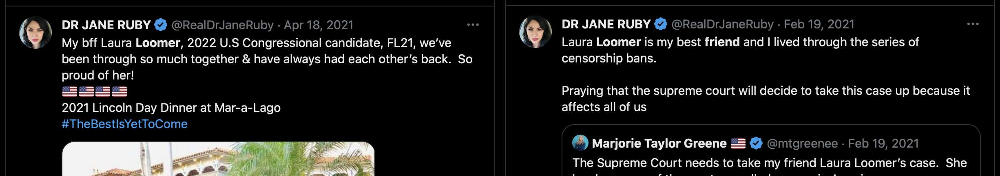
Jane Ruby also tweeted a video of James O'Keefe dancing which said: "I knew James O'Keefe was an incredible dancer back in 2017 at the Bull Moose Party in DC". [https://x.com/RealDrJaneRuby/status/1389713907003052034] Larry Loomer is a Shillman Fellow and she used to work for Project Veritas, and James O'Keefe is the founder of Project Veritas which has been funded by the Shillman Foundation. [https://www.jpost.com/diaspora/some-funding-sources-of-conservative-project-veritas-also-fund-jewish-causes-515751] Daniel Greenfield is also a Shillman Fellow at the David Horowitz Freedom Center. [https://politichicks.com/2022/09/glazov-and-greenfield-gorbachev-and-the-nuremberg-style-trials-that-werent/]
I first heard about Jane Ruby in 2021 because she was a guest host for the fourth hour of InfoWars, but InfoWars is also linked to the media network that is funded by Jewish billionaires like Robert Shillman and Nina Rosenwald: [https://www.exposetheenemy.com/deep-neocon-ties-pro-trump-shills]
After the former police chief Alan Hostetter was charged because of his involvement in the Capitol Riot, he filed a motion to dismiss where he said that January 6th was a COINTELPRO operation and that he was set up by an operation that included Robert Shillman. [https://tonyortega.org/2021/12/07/jan-6-defendant-accuses-scientology-in-wild-82-page-motion-to-dismiss/, https://www.scribd.com/document/545150115/Alan-Hostetter-Motion-to-Dismiss] His motion said that in 2020, he attended a meeting "of several very influential people in Orange County and surrounding locations to discuss how best to create a 'Freedom Movement' that would sweep across the country from Orange County." The attendants at the meeting included the Scientologist Leigh Dundas who used to work for CHD's California chapter, Irvine Smith, and the ex-marine Cordie Williams, who all participated in the Capitol Riot along with Hostetter. The people at the meeting also included Robert Shillman, who Hostetter described as a "multi-billionaire who made his fortune in the tech industry" who "portrayed himself as someone who was always looking for worthy non-profits to support and could be helpful in funding efforts to resist the oppressive Covid lockdowns and other actions being take at the state and local level". Jane Ruby was also in DC on January 6th. [https://x.com/RealDrJaneRuby/status/1346174885018693633]
Latypova's daughter Soph used to have a YouTube channel with about a million subscribers, but after her channel got deleted, her show was hosted at CENSORED.TV from 2019 until January 2023. [https://censored.tv/watch/show/soph] CENSORED.TV is the platform of Gavin McInnes who was the founder of Proud Boys and a co-founder of Vice Media. McInnes used to work for Rebel Media which Ezra Levant called "my Zionist company". [https://x.com/ezralevant/status/989135632705507328] There's screenshots of an episode of InfoWars from 2017 where McInnes was sitting in a studio that had an image mounted on the wall that looked like a rainbow-colored Star of David placed over a 6-color gay rainbow flag (and not the 7-color Noahide flag). [https://i.imgur.com/Sb35SXc.png, https://pbs.twimg.com/media/F9UoBRJXEAAeQ82?format=jpg, i/gavin-mcinnes-rainbow-star-david.jpg] I don't know if McInnes was sitting at his own studios or the studios of InfoWars. But I don't think the screenshots are photoshopped, because I found two different different screenshots which both displayed the same image mounted on the wall, and when I searched for the other screenshot on TinEye, I found a third screenshot which was hosted at YouTube because it was used as the thumbnail of a YouTube video, and it was probably used as the thumbnail of a video on Prison Planet TV's YouTube channel because it was indexed from a page which featured other videos by Prison Planet TV. [https://tineye.com/search?url=https%3A%2F%2Fpbs.twimg.com%2Fmedia%2FF9UoBRJXEAAeQ82%3Fformat%3Djpg] InfoWars used to frequently feature people from Rebel Media as either guests or hosts for their segments, like Larry Loomer, Jack Posobiec, and Gavin McInnes. Soph was also interviewed by both Alex Jones and Owen Shroyer in 2019. Jane Ruby's bff Larry Loomer also used to have a show on CENSORED.TV from 2020 to 2021. [https://www.censored.tv/watch/show/loomered]
In January 2022 when Yeadon did a presentation about Team Enigma's findings for Füllmich's committee, he said: "As an undergraduate, I worked under military clearance at Porton Down. That's the equivalent of Fort Detrick, it's where the UK military develops its so-called chemical defences. So I was under the Official Secrets Act. They must have thought I wasn't a crazy person at the time. I also worked for six months at the Police Forensic Service headquarters at Aldermaston, so I learned a lot of analytical techniques in that time." [https://odysee.com/%40Corona-Investigative-Committee/Mike-Session-86-en?t=135, https://www.ukcolumn.org/article/dr-mike-yeadons-key-testimony-part-i-the-eight-covid-lies] In an expert testimony that Mike Yeadon provided for America's Frontline Doctors, he wrote: "I have had Government security clearance and worked placements at top-secret facilities at Porton Down (Chemical Defence Establishment) and Aldermaston (Forensic Science Service HQ)." [https://rickjaffeesq.com/wp-content/uploads/2021/08/AFLDS-v-UC-9th-Circuit-Writ-Filed-1.pdf]
In an open letter in 2024, Mike Yeadon wrote: "Part of my undergraduate training involved research placements at the Chemical Defence Establishment, Porton Down, Wiltshire, where I was a small cog in the long term development of injected antidotes for nerve gas poisoning to protect British troops." [https://www.muftisays.com/forums/96-covid19/14893-open-letter-from-mike-yeadon-to-metropolitan-police.html] But I don't know if it was just a cover that he was developing antidotes against nerve agents, like how bioweapon developers are always saying that they are developing vaccines against viruses or they are trying to prevent disease outbreaks.
It might be that Yeadon only worked at Porton Down for a short time as a college student, but if he already had a military clearance when he was a college student, it increases the likelihood that he was later also involved in other kinds of work which required a security clearance, or that he was recruited to be part of some intelligence network when he was in college.
Nick Redfern has written that Porton Down was home to experiments where British military personnel were unwittingly subjected to LSD in the 1950s, and he also written that the Rendelsham Forest UFO incident may have been a psychological operation that was staged by people from Porton Down who subjected the witnesses of the incident to psychoactive drugs. [https://www.youtube.com/watch?v=TcqiF3NhXdg&t=11m54s, https://mysteriousuniverse.org/2022/12/The-Rendlesham-Forest-UFO-Incident-s-Some-of-the-Top-Secret-Lesser-known-Parts-of-the-Story/] Nick Redfern also wrote the following about another UFO incident that involved Porton Down: "On the night of January 23, 1974, an enigmatic event occurred in the large Berwyn Mountain range in North Wales, United Kingdom, that, for some within the UFO research community, has come to be known as the British Roswell. Researcher Andy Roberts summed up this mysterious affair: 'The claim was that a UFO piloted by extraterrestrials crashed, or was shot down, on the mountain known as Cader Berwyn and that the alien crew, some still alive, were whisked off to a secret military installation in the south of England for study.' That secret military installation was said to be none other than Porton Down." [https://books.google.com/books?id=g91EDwAAQBAJ&pg=PT159] So I wonder if Porton Down is also home to some kind of work in psychological operations in addition to research on chemical and biological weapons.
Norman Pieniazek is another one of these guys who says that viruses flop as bioweapons and the pandemic was fake. But he wrote: "The best source of information is the Soviet attempt at producing biological weapons. It was a massive program under the central organization named BioPreparat. Their leading research institute was Vector, based in Akademgorodok near Novosibirsk in Siberia. Opening BioPreparat documents was one of the Partnership for Peace programs Clinton launched with other NATO countries. I have an intimate knowledge of this program as I employed two Russian scientists from BioPreparat." [https://x.com/normanpie/status/1801276178004607422] In an earlier tweet he also wrote this in Polish: "No 'lab' will do this, because there is no way to test the pathogenicity of the virus and its transmission from person to person. The Soviet conglomerate BioPreparat tried to do this from the 1930s until it was shut down during Clinton's 'Partnership for Peace' program in the mid-1990s. I employed two Russians, one from the BioPreparat headquarters in Leningrad and the other from the main Vector Institute of this project in Novosibirsk." [https://x.com/normanpie/status/1791538398135492670] In a third tweet he wrote this in Polish: "I dealt with the Soviet biological weapons program in the early 1990s. Clinton had a 'Partnership for Peace' program. As part of this program, I took a small part in dismantling the huge Biopreparat complex and the largest Vektor Institute." [https://x.com/normanpie/status/1608811845510651905]
In a Twitch stream on March 1st 2023 UTC, Couey wore a t-shirt which had the logo of Mossad with the text "SINCE 1949" below it. The t-shirt was designed by Shlomo Cohen and it's part of a collection of designs which express love for the state of Israel: [https://qumranshop.com/apparel/t-shirt-mossad-1949.html]


JC didn't say anything about the t-shirt during the stream. However he may have worn the shirt to troll Kevin McCairn, because two days before JC's stream, McCairn did a stream about a paper by J. Bart Classen who wrote that Mossad was behind COVID. [https://rumble.com/v2b2zdo-world-war-shlomo-part-2-lab-leak-psy-op-classen-and-mossad-covid-klaus.html, https://www.researchgate.net/publication/367374626_COVID-19_and_Illegal_US_Bioweapons_Activity_an_Insider's_Revelations] At that point JC had been in a streaming war with McCairn for a few months after McCairn and Rixey called out his Scooby Doo clone theories as nonsense. But why would JC have bought the Mossad t-shirt in the first place? And what was the point that he just wore the t-shirt on the stream without ever explaining why he wore it?
I first found out about Couey because his YouTube channel was linked at the top of this blog post whose co-author Dan Sirotkin is a self-described "former NSA counterterrorism analyst": [https://harvardtothebighouse.com/2020/01/31/logistical-and-technical-analysis-of-the-origins-of-the-wuhan-coronavirus-2019-ncov/]
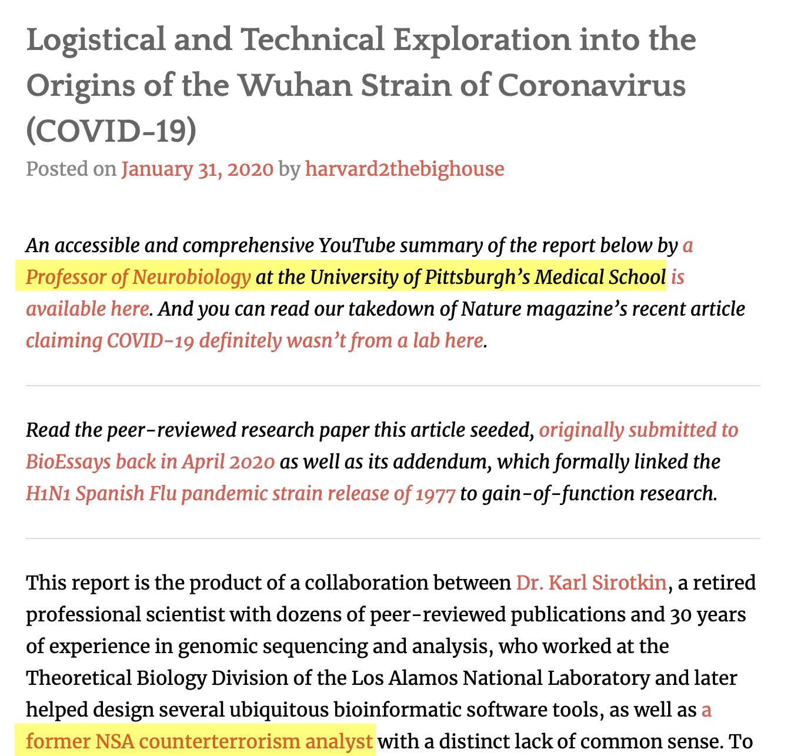
Dan Sirotkin tweeted: "As half Askenazi Jew and half Cajun, I can't imagine how those white devils sleep at night!! 🤣". [https://x.com/Harvard2H/status/1425424404591284231] He also tweeted: "Wonder if us Jews get free bagels..." [https://x.com/Harvard2H/status/1222165786304880640] He also tweeted: "Where do I start with the quarter-to-three-quarter Jew privilege?" [https://x.com/Harvard2H/status/1298767738811318272] However he probably gets his Jewish ancestry from his father's side because he tweeted: "My last name means 'orphan' in both Ukrainian and Russian because my paternal great-great-grandfather had to be hidden in a Catholic orphanage in Gomel so he didn't end up as the Tsar's cannon-fodder, since he was a Jew." [https://x.com/Harvard2H/status/1603861877993476097] So his father Karl Sirotkin might be a full Jew.
Out of the earliest videos about COVID that are currently visible on JC's YouTube channel, in the first video JC discussed blog posts by harvard2thebighouse, James Lyons-Weiler, and Vincent Racaniello, but the second video was dedicated to the blog post by harvard2thebighouse (BTW notice how Couey is rubbing his hands together in his YouTube thumbnail): [https://www.youtube.com/%40JConabike/videos]
In 2021 JC tweeted a link to his YouTube video from February 2020 where he discussed the blog post by harvard2thebighouse, and he wrote: "Before DRASTIC existed, there was an original duo...Dan and his dad. And then I found them, and we became three. DRASTIC was after this." [https://x.com/jjcouey/status/1401262466978488320] So JC was basically the third member of proto-DRASTIC after a partially Jewish former NSA counterterrorism analyst and his likely fully Jewish father.
On a list of "DRASTIC's key breakthroughs and research" that was compiled by Charles Rixey, the first entry is about the blog post by Dan and Karl Sirotkin, the second entry is that JC started posting YouTube videos about COVID in February 2020, and the 4th, 5th, 6th, and 7th entriess are about work done by Yuri Deigin. [i/drastic-key-breakthroughs.jpg] However Deigin also tweeted: "PS: for the record, I am against censorship. Even for Holocaust deniers. And I'm half Jewish." [https://x.com/ydeigin/status/1396928014454304770]
JC has been moving in the same circles as George Webb since early 2020, and for example they both appeared in videos with Addy Adds and Paul Cottrell. And both JC and Webb have collaborated with Housatonic. Couey tweeted: "Even crazier when you realize that my first ever live streams of any kind were invites to join Paul Cottrell of Operation George Webb, Addy Ads of Operation George Webb, and McCairn...five weekends in a row. McCairn had a solo stream with Ads-Webb one week before. All in on it." [https://x.com/jjcouey/status/1827727108979724547] Addy Adds has even coauthored several books with George Webb, and he wrote a book about George Webb titled "Citizen Journalism & Public Intelligence: How To Tell Your Story". [https://thedukereport.com/authors/addy-adds/] Housatonic has said that Addy comes from a NATO family. But JC also worked at the Erasmus Medical Center in Rotterdam which is the location of one of NATO's main bioweapon labs according to George Webb.
George Webb has said that he is a Jew and that he has homies at French Mossad. In a Periscope livestream in 2017, George Webb said: "So, let me - I was talking about Mossad earlier. So, so, I didn't know that these people that were presenting themselves - little bit at a time - 'Oh, I'm just a diplomat. Oh, I'm just actually, uh, well, actually I had some intelligence background way back when. Oh, actually, um, I did a few operations. Oh, well, I might still do occasional stuff for blah blah blah. Oh, yeah, actually I am French intel.' That kinda procedure. And this happened to me with the Dutch. And now I'm just - I'm gonna let everybody know right now, I used to work with the Dutch in New York. So it wasn't Russia. And I did drops." [https://www.pscp.tv/w/1ynKOjWpwBVxR, time 10:45] George Webb has also said that he shared an apartment in New York with a female intelligence agent who worked as a caterer for Epstein's parties and who secretly videotaped the parties. [https://www.youtube.com/watch?v=iFxnxWCBu6I, https://burners.me/tag/george-webb/] In the same Periscope stream that I linked above, George Webb listed his intelligence contacts, and he said: "So anyway, the intelligence links. So that was the French link. There's a British gal, guess who? I'm not gonna say. And anyway, there's a Serbian gal, here's a gal from Kosovo, they're all women. [...] There's one other one that I, well, I'm not gonna say that one. So, but anyway, when you start way smarter than your IQ, there's a good chance there's an intelligence person behind you making you smarter." [time 16:45]
It's interesting that Webb said that he used to work with Dutch intelligence in New York, because Webb used to be the sidekick of Jason Goodman whose current sidekick John Cullen also speaks Dutch, or at least he has posted several tweets in Dutch: [https://x.com/search?q=from%3AI_Am_JohnCullen%20lang%3Anl&f=live]
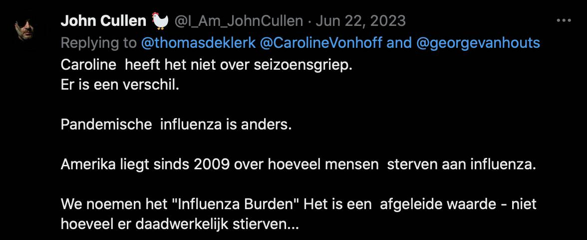
George Webb wrote a book about the Erasmus Medical Center and he was also the main person in alt media who was researching a mass shooting at Erasmus in 2023. [https://www.amazon.sg/Spray-Dutch-Kills-Erasmus-Will/dp/B091DFMLWM, https://georgewebb.substack.com/p/erasmus-shooter-blood-trail-leads]
In a YouTube video titled "Zionist George Webb - Mossad's Agenda Supercut", there's clips of videos where George Webb said that he has homies at French Mossad: [https://www.youtube.com/watch?v=dKBC3gChmKQ]
(0:09) All my French Mossad homies want me to do a shout out to Francis Cabrel. [...] It's just the spycraft and the beauty of how Mossad does s**t. You know, I just - especially the French Mossad is just really fantastic spycraft. And really the antecedents of that go all the way back to World War 2. This is when they were working with OSS - and I've said this before - they would have these radio shows at night where they would do different songs, play different songs, and the songs were encoded. Certain songs would mean blow up the local railroad. Thanks Mossad homies and [unintelligible; something Français?] because you've helped me out so much in this. [...]
(1:00) One of the things that's been so hard for me in this series is playing the Mossad thing. Because so many people have come out against Mossad and how evil Mossad is and so forth. [...]
(1:14) So that's - I'm always rooting for Mossad secretly kind of. And this is what that is. [...]
(1:35) My sources, and I'm - you saw French Mossad today, you know, give me some stuff. [...]
(2:54) And then there's the great Mossad, which was fundamental to the survival of Israel. I know people are going to say we did a lot of stuff. And you know with the Lebanese babies and the Yemeni babies and Palestine and - I'm not getting into that, I don't want to get into that, organ harvesting and all this. We can do business the old way. We still make a lot of money, make everybody happy, make movies, whatever we do. [...]
(4:37) I do have some ties with Israel. [...] And I'm with the old guard. You know, the Negev Brigade, and Ben-Gurion, and Avi Braverman.
JC's LinkedIn profile says that from 2012 to 2016, he worked as a research scientist at the Erasmus Medical Center in Rotterdam. [https://www.linkedin.com/in/jonathan-couey-a20a1383/] The deputy head of Erasmus MC's department of viroscience is Ron Fouchier, who led one of the most famous publicly acknowledged gain-of-function experiments where they enabled the H5N1 avian influenza virus to adapt to mammals by doing serial passage in ferrets. In 2013, the journal Science published a letter titled "Gain-of-Function Experiments on H7N9" whose first author was Fouchier. [https://www.science.org/doi/full/10.1126/science.1243325] Fouchier was also one of the authors of a letter published by Nature titled "Gain-of-function experiments: time for a real debate". [https://www.ncbi.nlm.nih.gov/pmc/articles/PMC7097416/] The head of the EMC's department of viroscience is Marion Koopmans, who has had a key role in covering up the laboratory origin of SARS-CoV-22. The reference genome of MERS-CoV is called HCoV-EMC/2012, where EMC stands for Erasmus Medical Center. [https://www.ncbi.nlm.nih.gov/nuccore/667489388] The paper which first described MERS was titled "Isolation of a Novel Coronavirus from a Man with Pneumonia in Saudi Arabia" where the last author was Ron Fouchier, and four out of the five authors of the paper were listed as being affiliated with the Erasmus Medical Center. [https://www.nejm.org/doi/10.1056/NEJMoa1211721] Two weeks later, the genome of MERS-CoV was described in more detail in a paper where the last author was again Fouchier and most authors were affiliated with the Erasmus Medical Center. [https://www.ncbi.nlm.nih.gov/pmc/articles/PMC3509437/] Wikipedia says: "In November 2012, Egyptian virologist Dr. Ali Zaki sent a virus sample from the first confirmed case in Saudi Arabia to virologist Ron Fouchier, a leading coronavirus researcher at the Erasmus Medical Center (EMC) in Rotterdam, the Netherlands.[18] The second laboratory-proven case was in London, confirmed by the UK Health Protection Agency (HPA).[19][20]" [https://en.wikipedia.org/wiki/MERS] So regardless of whether JC's link to Erasmus is relevant or not, it's interesting that the reference genome of MERS-CoV was published by a team of people from Erasmus which was led by someone who was an expert on doing gain-of-function research on RNA viruses.
Paul Cottrell is another person in the circle of early COVID YouTubers who appeared in the panels hosted Addy Adds and who are linked to George Webb and Couey, but Cottrell is also a Jew. Cottrell had a radio show on Global Enlightenment Network, which is ran by someone called D.F. Neely whose LinkedIn profile says that he worked as an intelligence specialist for the U.S. Navy. [https://www.linkedin.com/in/dfneely/, i/df-neely-linkedin-intelligence-specialist.jpg] In February 2020 Cottrell became known as "the American whistleblower" in China after one of his YouTube videos went viral in China. [https://www.baidu.com/s?wd=%22paul+cottrell%22&gpc=stf%3D1580508000%2C1583013600%7Cstftype%3D2, https://www.bilibili.com/video/av91204053/] In the video, Cottrell said that a follower of his YouTube channel contacted him on Facebook and sent him screenshots of a text message conversation. Cottrell said that his follower received the text messages from someone who worked at the CDC who said that the CDC was covering up the number of COVID cases in the U.S., and that there were already over a thousand COVID cases. However the same fake screenshots of text messages had been published a few days before Cottrell by Hal Turner, who said that the text messages were not leaked by the person who received the text messages but by his 18-year-old son who took the screenshots on his father's phone. [https://rootvoid.com/2020/02/15/alleged-c-d-c-text-messages-say-over-1000-infected-with-coronavirus-in-u-s-a-being-deliberately-concealed/, https://www.reddit.com/r/Coronavirus/comments/f2wemh/comment/fhqrge1/, https://x.com/ryanfiredragon/status/1228414604998475777] And even earlier the same screenshots had been posted on TikTok on January 27th 2020 UTC. [http://web.archive.org/web/20200226155731/https://www.tiktok.com/%40user58406547] The screenshots were probably fake because they showed the name of the sender as "Nancy Messonnier (CDC)" even though the Messages application on iOS only displays the first name of the sender. [https://x.com/benplowman/status/1231447635338264576/] So I don't know if Cottrell was being fed disinformation which he promoted unwittingly or if he was a willing accomplice in promoting disinformation.
Cottrell's YouTube video about the text messages was published on February 17th in an unknown timezone, but a few days before it Hal Turner published a blog post about the same text messages that was dated February 14th. [http://web.archive.org/web/20200313152829/https://www.youtube.com/watch?v=9dw_68tV6c0, http://web.archive.org/web/20230628230838/https://halturnerradioshow.com/index.php/en/news-page/news-nation/alleged-c-d-c-text-messages-say-over-1-000-infected-with-coronavirus-in-u-s-a-being-deliberately-concealed] When someone on a Chinese website asked if Paul Cottrell's video was legit, another user linked to Hal Turner's blog post and indicated that it supported Cottrell's story. [https://www.zhihu.com/question/373999679] Hal Turner has worked as an FBI informant according to the SPLC and according to testimony in court by his lawyer and himself. [http://web.archive.org/web/20080118203302/http://www.recordonline.com/apps/pbcs.dll/article?AID=/20080117/NEWS/801170326/-1/NEWS, https://archive.ph/soTD7#selection-505.0-512%2e0] In 2005 Hal Turner attempted to stage a sequel to the Oklahoma City bombing together with a patsy he was working with: "It was a plot similar to the Oklahoma City bombing: neo-Nazi Bill White was said to have had plans in October 2008 to attack a Roanoke, Virginia federal building with a truck bomb in retaliation for legal proceedings taking place against him there. Except this time, the 'plot' was non-existent, coming from a dubious source in former FBI informant and convicted felon Hal Turner. [...] '[The FBI informant Hal] Turner went to these two guys and told them to set me up so he could get his informant contract back ... they concocted a story that I [planned to] blow up Barack Obama with a truck bomb,' White told Dr. Ostrov in 2016, according to the doctor's report. [...] But then, in 2010, FBI informant Turner admitted in court that he told the feds about the phony federal building bomb plot. Turner had been arrested for inciting violence against three federal judges, and he was testifying in court that he was an important asset to the FBI." [https://headlineusa.com/fed-files-iii-fbi-informants-phony-obama-truck-bomb-tip-spurred-federal-probe/] In 2020 Qtards were saying that Chinese troops tried to invade USA through the Quebec-Maine border but they got bombed to death, but someone tracked the origin of the story to Hal Turner's blog. [https://x.com/aobrien2010/status/1338675691655663616] In his blog post Hal Turner cited unnamed "intelligence sources" as his source, and he also linked to two of his blog posts from the previous week which claimed that Chinese troops were stationed in Canada. [http://web.archive.org/web/20201025014401/https://halturnerradioshow.com/index.php/en/news-page/news-nation/u-s-moving-self-propelled-artillery-to-border-with-quebec-reports-of-uniformed-chinese-troops-in-canada]
In the description of one of Cottrell's old YouTube videos, there was a link to a video from 2015 on a channel called Abraham Lincoln, where the thumbnail of the video consisted of the logo of Cicada 3301. [https://altcensored.com/watch?v=SWg1-3n4tM8, https://www.youtube.com/watch?v=bCmKGFTEO2g] Cottrell said that the Abraham Lincoln channel was his backup channel. The spectrogram of the video featured the Cicada 3301 logo and an image of Abraham Lincoln along with the pieces of text "1984 is here", "America wake up", "All your doors are unlocked", and "Big Brother I am watching you. 3301": yt-dlp bCmKGFTEO2g;ffmpeg -i *bCmKGFTEO2g* -vn a.wav;sox a.wav -n spectrogram;qlmanage -p spectrogram.png. The puzzle probably continues after that but I didn't figure out how to proceed in solving the puzzle. Cottrell also posted a video where he took a screencapture of the Abraham Lincoln video, where in the comments someone asked "What is this?", but Cottrell replied "forward operations", and when someone else said it was a puzzle, Cottrell replied: "much more than a puzzle my friend." [https://www.youtube.com/watch?v=6IRNXFCOV8s, i/pfizerstew-cottrell-cicada-3301.jpg] When I googled for the term "forward operations" in double quotes, most results were about something called "defend forward operations" or "hunt forward operations", which appear to be terms that are used in the context of cyber warfare and which refer to proactive defensive cyber operations. [https://www.cybercom.mil/Media/News/Article/3218642/cyber-101-hunt-forward-operations/, https://books.google.com/books?id=nHhXEAAAQBAJ&pg=PA20] In March 2020, Paul Cottrell appeared together with Thomas Schoenberger as a guest of Michael Decon's radio show, and Schoenberger said that he had been following Cottrell's channel since around mid-January. [https://www.podchaser.com/podcasts/the-michael-decon-program-217641/episodes/dr-paul-cottrell-thomas-schoen-54538334, time 36:10] Steve Outtrim wrote: "It has now come out that Cicada 3301 was founded by Bruce C. Clarke, Jr. the former head of the CIA's research division, and co-founder Thomas Schoenberger previously worked for the Pentagon, possibly on remote viewing projects such as STARGATE or GRILL FLAME." [https://burners.me/2019/06/22/latest-weapon-in-the-infowar-data-maps/] Lestat used to be part of the inner circle of Cicada 3301, and he said that Thomas Schoenberger used to live for a while in his apartment and that Schoenberger was responsible for coordinating some of the operations of Cicada 3301. [https://www.youtube.com/watch?v=NrWdEx4z3E4] In a video that Lestat did with brotherBox in 2018, they said that Cicada 3301 may have originally been started by Ian Murdock who was the founder of Debian Linux, but he died in 2015. [https://www.youtube.com/watch?v=Wh0n7kIDqeQ&t=1h46m5s] Defango was part of Cicada 3301 and he started a cyber harrassment company called ShadowBox together with Schoenberger, but he has admitted that he was part of IARPA's Project CREATE. [https://peakd.com/cryptobeast/@steveouttrim/latestweaponintheinfowardatamaps-d5i0wrxn0z] Douglas Gabriel from American Intelligence Media is also linked to Cicada 3301, and he and John Barnwell from AIM have done several interviews with Cottrell's buddy Leo Zagami, who claims that he is a 33rd degree Freemason and who also had a radio show on Global Enlightenment Network like Cottrell. Douglas Gabriel is one of the leading anthroposophists in the United States, and he has said that he worked as a cryptologist for the NSA, that he was a Jesuit and a freemason, and that he was tasked by the Society of Jesus to infiltrate anthroposophy. [https://neoanthroposophy.com/2017/02/04/jesuit-spies/] However he might be lying about some aspects of his resume, because he has also said that he is a clairvoyant, and exorcist, and a ghostbuster. Douglas Gabriel also wrote: "In 2017, a Cicada 3301 player named deFango will begin to discover why Douglas Gabriel will tell him in early 2018 that he had not reached the 'inner court or circle' of solving the grand puzzle. He had certainly reached an 'outer court or circle' as it is known in esoteric language, but he hadn't uncovered ultimate truth of the grand puzzle. Cicada 3301 is a 'level of play' of the Glass Bead Game. There are many doorways into the game and many levels of play." [https://myemail.constantcontact.com/Gabriel-and-McKibben-Discuss-the-Lance-Findings.html?soid=1117755878567&aid=xhOFmkJJ3DI] The official website of Cicada 3301 features a list of their alumni which contains a total of three people, who are Bruce Cooper Clarke Jr. who was the director of the Office of Strategic Research at the CIA, Iona Miller who is a researcher of the Count of St. Germaine, and Ian Murdock who created Debian Linux. [https://www.cicada3301official.com/pages/alumni.html] Iona Miller's husband Richard Alan Miller has been featured as a guest of the Leak Project and Oppenheimer Ranch Project channels on YouTube, which were the first two channels I found where Paul Cottrell appeared as a guest, and in fact Cottrell and Richard Alan Miller appeared as guests on consecutive episodes of Oppenheimer Ranch Project in February 2020. [https://www.youtube.com/playlist?list=PLJHy6u5Yrwd5lVj0KJnz-i6ubTAPg6CcV] Another member of Cicada 3301 is the classical music composer Marcia Stockton, who calls herself a polymath like how Schoenberger and Cottrell also call themselves polymaths. [https://x.com/AlphaUnseen]
In April 2020 George Webb's brother reported that Jason Goodman had declared a cyber war against Cottrell because Cottrell appeared on Michael Decon's radio show together with Thomas Schoenberger. [http://web.archive.org/web/20200419220724/https://sdny.news/2020/04/03/conspiracy-theorist-jason-goodman-launches-into-fake-quack-doctor-paul-cottrell-in-epic-social-media-stereo-rant-after-thomas-schoenberger-video-surfaces/] Part of the modus operandi of the LARP ring around George Webb and Jason Goodman was that they staged an endless series of fights between different members of the ring, so then conspiracy researchers wasted their time following the fights instead of doing something productive, like how Robert David Steele sued Jason Goodman, George Webb sued Jason Goodman, George Webb's brother sued Jason Goodman, and so on. So it's suspicious that Cottrell was pulled into their whole LARP wars scheme, and Goodman is also a Jew like Cottrell and George Webb. From 2018 to 2020, Jason Goodman's regular sidekick for his videos used to be the so-called former CIA agent Kevin Shipp, and previously the same role was played by George Webb who has said that he has homies at Mossad and that he worked for Dutch intelligence. Jason Goodman may have also started the trend of filming empty hospitals in order to show that the pandemic was fake, because he was already posting videos of hospitals around March 16th, but the "#filmyourhospital" hashtag was created only about two weeks later by DeAnna Lorraine (who now has a show on the Stew Peters Network). [https://x.com/search?q=from%3Acsthetruth%20until%3A2020-3-18, https://x.com/DeAnna4Congress/status/1244342772783394822]
I previously thought that Housatonic got connected to George Webb because they were doing the same type of investigative research on COVID. However Housatonic was frequently talking to George Webb on Twitter in 2019, and in 2019 before Housatonic had his own YouTube channel, he appeared several times on John O'Loughlin's channel. [https://twitter.com/leytedriver/status/1130150776016396293] In February 2019, O'Loughlin tagged Housatonic and George Webb in a tweet where he wrote: "George's videos on Periscope are available for replay, but Twitter doesn't always post them here. This is yesterday's Live at National Harbor, where George and I decide to launch a McDuff channel on Youtube! Exciting! https://pscp.tv/GeorgWebb/1gqxvngrypkxB". [https://twitter.com/leytedriver/status/1100400815032934404] So George Webb was involved in launching the YouTube channel where Housatonic did his alt media debut. O'Loughlin is the son of a high-level FBI agent. And he has done several videos in person with George Webb, because I believe both of them live somewhere in the DC area, which in itself is suspicious because the headquarters of the FBI, CIA, and NSA are all located in the DC area (and the former NSA spy Dan Sirotkin also grew up in the DC area and he still lives in the DC area). George Webb is getting scoops about uranium deals, but nuclear energy was one of the topics that Housatonic was focused on before COVID, and for example O'Loughlin posted this tweet in 2019: "@GeorgWebb @HousatonicITS Mark Kulacz has identified Uranium's value as an energy storage medium. Now Kazakhstan has the world's only IAEA approved Uranium bank!" [https://twitter.com/leytedriver/status/1171849929427472384]
Housatonic's LinkedIn profile says that he worked as a "competitive intelligence analyst" at Dell. [https://www.linkedin.com/in/markkulacz/] Dell is a contractor for the CIA and NSA, and Edward Snowden worked as the "lead technologist on Dell's CIA account" while he was employed as an NSA contractor at Dell. [http://www.reuters.com/article/2013/08/15/usa-security-snowden-dell-idUSL2N0GF11220130815] Snowden's resume said that he was an "expert in cyber counterintelligence" at Dell. Snowden's story was that he gained access to the documents he leaked while he worked at Dell. Before COVID Housatonic came out as a whistleblower who said that the story that Hillary Clinton's email server was run out of an old bathroom closet was false, and actually the email server was provided by a company called Datto where he worked as a director of competitive intelligence, and in October 2015 the server was retrieved from a data center by Peter Strzock and other people from the FBI. [https://www.youtube.com/watch?v=xTpvuAf-_jI] DNC emails and Hillary's emails were one of the main subjects George Webb covered before COVID, and they were also the main topic that QAnon's predecessor FBIAnon posted about on 4chan. [https://paulfurber.net/pdf/fbianon.pdf] Some people were saying that Seth Rich leaked DNC emails he gained access to while he was working as IT staff for DNC, even though Wikipedia says they were released by Russian hackers instead. But anyway George Webb built up a much of his early following by covering the Seth Rich story, and Jason Goodman and George Webb came up with the whole "who spoofed the Seth Rich" files LARP. [https://burners.me/tag/seth-rich/]
John Phelan is the co-founder and "Chairman Emeritus" of Michael Dell's private investment firm, but he is also the chairman of the CIA's Third Option Foundation whose website says: "Third Option Foundation is guided by a diverse and committed group of individuals, some with deep roots in the CIA, others with expertise in business or philanthropy. All of them have an intimate understanding of the needs of the Special Operations community, its operators, and their families." [https://www.brassballs.blog/https/newsothersmisscom/bloomberglaw-cia-special-activities-center-still-controls-dell-computers-thirdoptionfoundation-sachs-phelan-third-option-john-cold-stone-harbor-elections-voting-software-dominion-optiplex]
Housatonic is not the only IT whistleblower who George Webb is connected to, because Webb also said that "I met Julian Assange in Australia in 1984 when he was a kid." [http://web.archive.org/web/20200108071732/https://www.youtube.com/watch?v=CDAZ3pF9jIw&t=5m45s] Steve Outtrim wrote: "George Webb claims to have known Julian Assange since he was a teenager, and to have been a participant in delivering information to WikiLeaks by giving thumb drives to Michael Ratner, Ellen's late brother. He did this from the Harvard Club at dinner with Jerome Corsi and Jason Goodman, calling into the Hagmann Report." [https://burners.me/2019/07/28/larpwars-part-2-moving-the-goalposts/] George Webb also wrote: "While I was reporting on NADRA Bank in June of 2017, a seemingly stunning post from 2012 that Julian Assange had made about NADRA was reposted by Assange - TWICE. I will never forget Assange posting NADRA 2012 emails twice while I was doing broadcasts on the story, and I will never forget the Pakistanis immediate denial." [http://web.archive.org/web/20220717173755/https://georgewebb.substack.com/p/assange-predicted-ukraine-war-with]
Steve Outtrim wrote: "Like so many 'ex' intelligence people, Patrick Bergy got his alt-media start on Jason Goodman's 'Crowdsource the Truth' channel. Soon after he was interviewed by George Webb, and soon after that he filed his 'qui tam' lawsuit". [https://burners.me/2020/08/18/millie-freed-illuminati-recruiter-defango-maga-coalitions-biggest-donor/] However the third person in alt media I found who interviewed Patrick Bergy was another citizen journalist called Mark Kulacz. [https://altcensored.com/watch?v=OOUGRf91O1o] I believe the first two guests on Housatonic's channel were John O'Loughlin who is the son of a high-level FBI agent and Patrick Bergy who worked for the military contractor Dynology as an expert in cyber warfare. [https://sites.google.com/housatonicits.com/live/episodes] Apart from Paul Cottrell, Bergy is one of the few people in alt media who has done an interview with Thomas Schoenberger, and Bergy has even used Schoenberger's music as background music in his livestreams. [https://rumble.com/v29akrm-the-american-awakening-special-edition-thomas-schoenberger-interview-on-mat.html] There were almost no references to Bergy on Twitter until late 2019 when he appeared several times on Jason Goodman's YouTube channel, but after that some of the earliest references to him are about his interviews with George Webb and Housatonic. [https://twitter.com/search?q=until%3A2020-1-1+%22patrick+bergy%22&f=live]
Alex Jones keeps talking about how the globalists are always trying to recruit him to their side, like how one time he traveled to NYC to meet with David Rothkopf who was the head of Kissinger Associates and who invited him to join their side, but he refused the offer. And Alex says that he keeps receiving offers to join secret Illuminati parties but he always refuses them. Even though actually he's probably going to parties at DUMBs where he's sacrificing children to Xenu with George Soros. But in a stream where JC was talking about how Andrew Huff is probably controlled opposition, JC said that he has been offered some "weird opportunities" that he has never followed through with: "And that's again why I think we have to use the utmost scrutiny and the utmost skepticism when approaching someone who purports to be outing the entire US government and the entire US intelligence apparatus. And at the same time also, I guess, outing China or something. I don't know, it's strange and we've got to be very careful because I don't think we can take him at his word. Whatever it is, he could be mostly a good guy, just like Robert Malone might mostly be a good guy. But is the husband of your friend who occasionally cheats but is otherwise a great guy - I mean, is he really good guy? You know, I mean, that's what I think we're dealing with here - is people that are willing to lie very consistently and precisely about things in order to advance their personal position in the invisible hierarchy that is at play. And I have not - I have been offered some weird opportunities that I've never followed through with. And I wonder if some of these other people have just been offered these opportunities and followed through with them." [https://www.twitch.tv/videos/1727033554?t=48m52s] So has he really not followed through with the weird opportunities? And in any case, JC received a monthly salary of 7,000 USD from CHD according to Charles Rixey, or 5,000 USD according to another source, so I wonder if it came with some strings attached.
Added later: I said on Twitter that JC may have worn the Mossad t-shirt in order to troll McCairn because two days earlier McCairn had done a stream where he read a paper which suggested that Mossad was behind COVID, but JC replied that I had "a BINGO": [https://twitter.com/jjcouey/status/1754283473458614363]
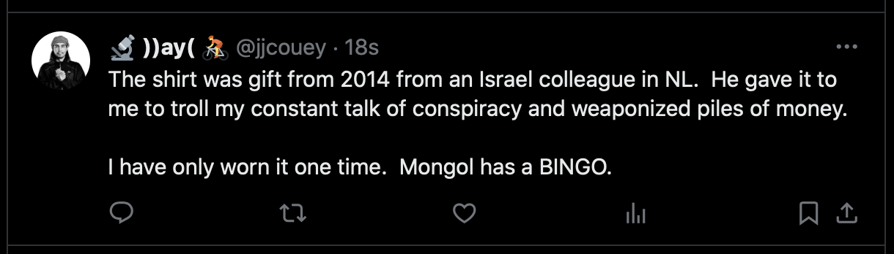
(Even though in the case that Couey actually wore the shirt to show that "I'm always rooting for Mossad secretly kind of", like what George Webb said one time, then it's not likely that he would admit it on Twitter.)
Mark Kulacz has said that he started the Housatonic ITS company because he needed to create a fictional company while he worked at a company where he also served as a competitive intelligence director: "I needed to create a fictional company for one of the last two jobs that I had. And what the heck, just for fun, just for giggles if you will, I decided to name it Housatonic Information Technology Services, because I needed to create a fictional managed services provider, an MSP. And then because the company I was working at the time Datto, serviced managed service providers - and I didn't even know what an MSP was at that time - so I set up the company fictionally, you know, I set up a little website, Google account, etc. And had some fun with it, if you will, as a product marketing director at Datto, and I also did some work as their first competitive intelligence director, although they really didn't know exactly how to use the role effectively." [https://rumble.com/v5b06v9-new-addition-to-earlycovidsurvivors.com-jane-ruby-opioid-expert-first-twitc.html, time 7:59] He didn't explain why he needed to create the fictional company, so maybe it doesn't have any nefarious purpose. But I always thought his business of offering affordable backup services to citizen journalists seemed weird. How many clients does he even have? George Webb or Jason Goodman? I guess Steve Kirsch also calls himself a journalist. And USMortality calls himself a citizen journalist. But they're both tech guys so they probably wouldn't need help with backups.
There's an old snapshot of the website of Housatonic ITS from 2018, but it doesn't seem to mention that it's a fictional company. [http://web.archive.org/web/20181014163827/https://sites.google.com/a/housatonicits.com/home/] However it seems unusual that the company not only had a profile at Twitter, but it also had a profile at Gab in 2018:
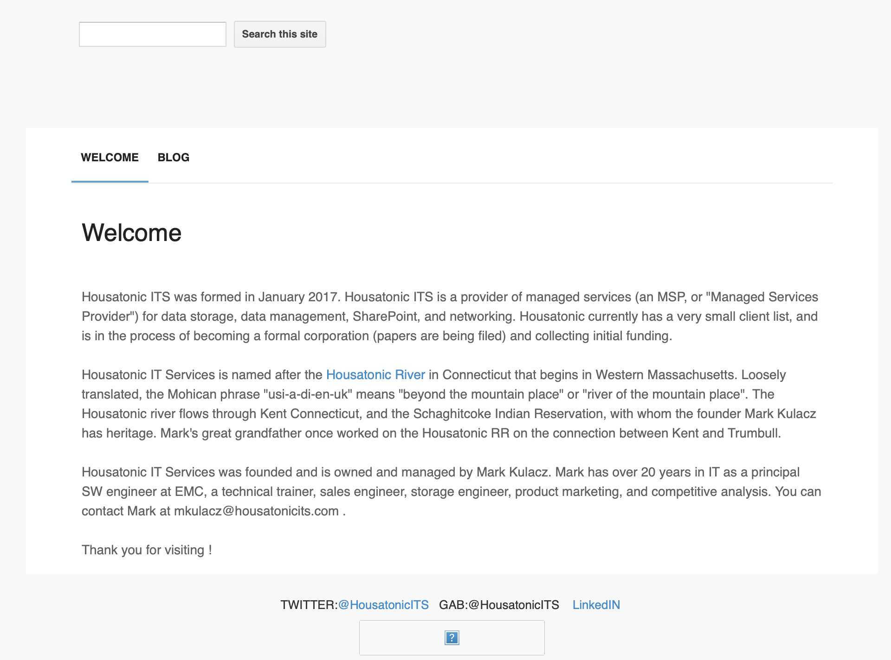
I thought that if Kulacz created the company under the auspices of his employer, then would he want his company to be connected to his controversial political posts on Gab? However actually the Gab account seems to have just been a mirror of the Twitter account. The Gab account was active from 2018 until May 2019. Its bio didn't mention that the company was fictional, but it just said: "Small New England IT managed services provider (MSP) for nonprofits. Storage. #Backup #NAS #Networking #SharePoint Twitter @ HousatonicITS #MAGA". [https://gab.com/HousatonicITS] I didn't see any posts about backup services on the Gab account, and I didn't even see any post about the Housatonic ITS company, but most posts on the account were about political or conspiracy topics:
The Housatonic account also retweeted a tweet about a Q drop:
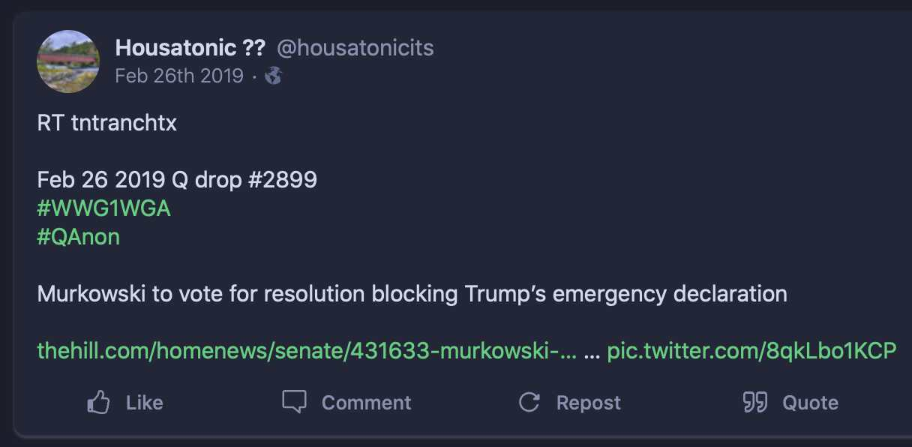
Kulacz had already replied to George Webb on his old Twitter account in 2017: [https://x.com/search?q=%40markkulacz+%40georgwebb&src=typed_query&f=live]
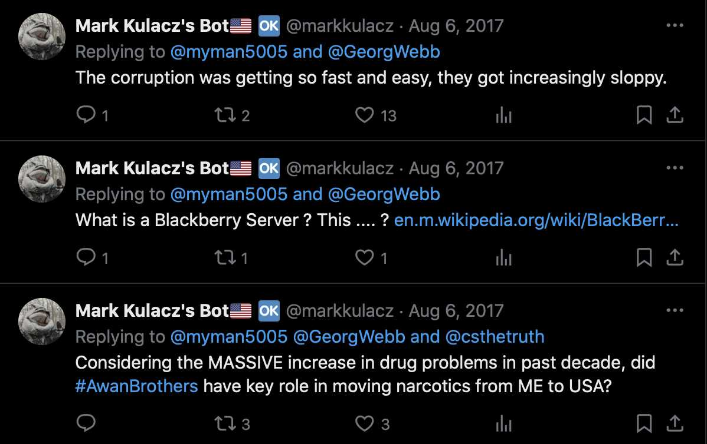
In 2012 Jane Ruby was employed as medical affairs manager for the pharmaceutical company Individor whose products included a alternative to Subutex called Subuxone. She falsified data about Subuxone which led to their CEO being criminally convicted: [https://www.hhs.gov/about/agencies/dab/decisions/alj-decisions/2021/alj-cr5928/index.html]
This case involves a company's effort to have one of its drugs covered by the Medicaid program. To achieve this goal, a company executive deliberately submitted false information to MassHealth, the Massachusetts Medicaid agency. Under the Food, Drug, and Cosmetics Act, Petitioner, as the company's chief executive officer, was held criminally accountable for the offense.
[...]
On or about October 10, 2012, RADARS gave Dr. Ruby the Massachusetts-specific analysis, but the results were not what she had expected or hoped for. They showed that, among the three categories of drugs (Suboxone Film, Suboxone Tablet, and buprenorphine-only tablets, like Subutex Tablet), the buprenorphine-only tablets had the lowest rate of unintended pediatric exposure. (1.8 exposures per 10, 000 units versus 2.7 exposures for Suboxone Film and 3.3 exposures for Suboxone Tablet). IG Ex. 2 at 7 (Information ¶ 25).[8]
Dr. Ruby did not give Dr. Jeffrey an accurate version of the RADARS analysis. Instead, she manipulated the data by adding the two tablet rates together in order to show that Suboxone Film had the lowest rate of unintentional pediatric exposure in Massachusetts, when, in fact, it did not. On or about October 16, 2012, she emailed the false data to MassHealth, claiming, also falsely, that she had received the calculations from RADARS. She forwarded a copy of her email to Indivior's global medical director. IG Ex. 2 at 7-8 (Information ¶ 27).
[...]
Dr. Ruby subsequently received additional data on unintended pediatric exposures; it showed that Suboxone Film did not have the lowest rate of unintended pediatric exposure in Massachusetts. She did not provide that data to MassHealth, telling other Indivior employees (although not Petitioner) that her rationale for withholding the additional data was "don't ask, don't tell." IG Ex. 2 at 9 (Information ¶ 29).[9]
In 2020 it was announced that the case resulted in a 600 million USD penalty to Individor: [https://thehill.com/policy/healthcare/525759-indivior-hit-with-600-million-in-civil-and-criminal-penalties-over/]
Drugmaker Indivior Solutions will pay $600 million in criminal and civil liability over its marketing of opioid-addiction treatment Suboxone, the Justice Department (DOJ) announced.
Indivior pleaded guilty to a one-count misdemeanor in July for making false statements to Massachusetts's Medicaid program, MassHealth, in order to expand access to the drug for children.
Of the $600 million, the company was sentenced to pay $289 million in criminal penalties Wednesday, according to the DOJ.
A tweet from 2018 said: "Laura Loomer's sidekick Dr. Jane Ruby got her doctorate at an unaccredited online school that was shuttered in 2009 because it was a diploma mill. Yikes!" [https://twitter.com/peachofababy/status/1068510890318880768]
In 2017 Jane Ruby wrote an article about how her BFF Larry Loomer was the rising star in citizen journalism. [https://medium.com/%40janeruby/new-media-rising-laura-loomer-and-the-citizen-journalist-86dd4c683ada] So it's interesting that Loomer and George Webb were both called citizen journalists and they were both based in the DC area. George Webb and Addy Adds coauthored a book titled "Citizen Journalism & Public Intelligence: How To Tell Your Story". Jane Ruby also wrote that "I am finishing a book describing the great work of our Citizen Journalists" (where her star citizen journalists included people like Mike Cernovich, James O'Keefe, Jack Posobiec, and Laura Loomer). [https://medium.com/%40janeruby/this-is-a-tribute-to-new-media-and-a-look-into-the-impressive-emergence-of-a-new-generation-of-654f88b0c96b]
This screenshot said that Ruby was a convert to Judaism, but I didn't find its source so I don't know if it's correct (even though her maiden name is Italian and there aren't that many Jews with an Italian name): [https://x.com/1RealDrJaneRuby/status/1761840456089120861]
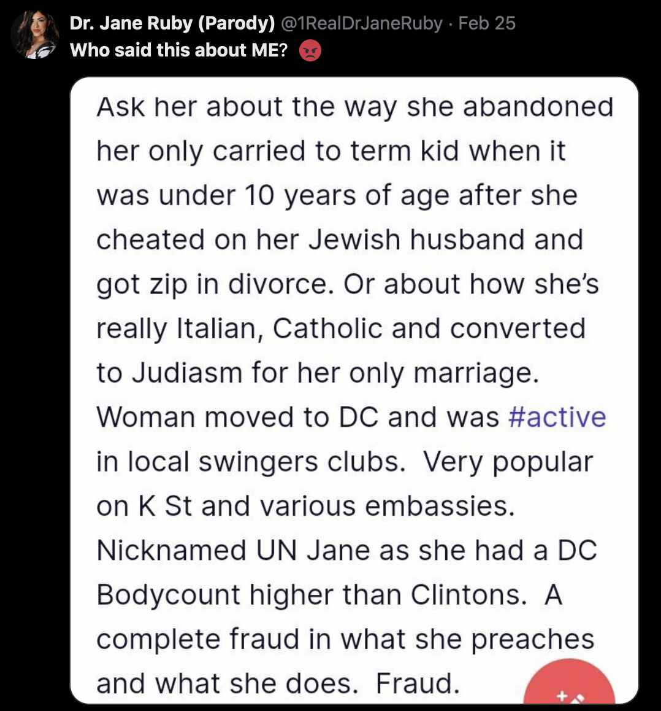
When Karen Kingston first appeared in alt media, she was presented as a Pfizer whistleblower whose big revelation was that COVID vaccines contained graphene oxide and hydrogel. In 2023 Latypova also started saying that dental anesthetic contained hydrogel. So I tried searching for early tweets about the story that COVID vaccines contained hydrogel to see who mentioned it first. [https://x.com/search?q=hydrogel%20vaccines%20until%3A2020-7-1&f=live]
The earliest tweet I found was a tweet from March 2020 which said: "I am more concerned about 'DARPA Deployment of Hydrogel' vaccines. (Celeste Solum) yt". [https://x.com/CYNDI12365/status/1241612603681648641] The second-earliest tweet linked to a video by Celeste Solum that was mirrored on YouTube by the flat earther Jamie Lee (aplanetruth 4u). [https://x.com/Jrnyman2/status/1249020763929223170, http://web.archive.org/web/20200407191851/https://www.youtube.com/watch?v=eqTRRm_ffog] Many other early tweets also linked to YouTube videos by Celeste Solum, so she seems to have been the first person who was talking about hydrogel in connection with COVID vaccines that became popular enough that it was mentioned multiple times on Twitter. Celeste was always saying that hydrogel was a DARPA technology, in the same way Carrie Madej later also started calling it "DARPA hydrogel".
In an interview with Andrew Kaufman in May 2020, Max Igan said: "Hydrogel is a - it's a nanosubstance, it's developed by DARPA - which is able to fuse with your cells, literally fuse with your cells. It goes in and it interfaces with your cells and becomes part of you. And it can be read - signals - to and from - it's like an interface into -. There's actually a report that's been put out recently by a lady called Celeste Solum. She's quite religious, I mean God bless her, she's quite religious, so the last part of the talk is - last ten minutes is quite religious. But she's a great researcher. Apparently she used to work in one of these weapons development places. And she's a bit of an insider. And she's been reporting on hydrogel. I'll send you a link after the talk, I'd be interested in you having a look at that. And uh, because of the possibility of this actually being in the vaccines, you know, this particular nano-stuff that DARPA's been working on -. And by the way, this is - they've been still working on this while the lockdown's in place. You know, when you think about it, only essential services are functioning, and the development of this hydrogel by DARPA is seen as an essential service for national security. And with the separation of the children - programming people to be separated, everyone be separated, everyone 1.5 minutes apart, 2 minutes apart over time. Forget about having children anymore. They want all the next generation of children to be - I would suggest - vaccinated with this hydrogel, and interface into the matrix, part of the AI machine, as soon as they're born, and keep them all separated from each other. So basically the response to this 'COVID-19' is to remove every aspect of humanity from humankind, keep everybody completely separated, and make everyone - you know, fit them into this interface - into the machine, whether they want it or not. Um, I'd be really interested on you looking into that, and seeing how they may be incorporating that into the vaccines. Cause what you're saying about them modifying DNA: it fits in perfectly with what hydrogel can actually do. And there's some papers on it, some DARPA papers you can actually go look at. I'll send you some links after the talk." [https://www.bitchute.com/video/Mg1GT_URHu8/, time 19:00] I believe the first four people in alt media who interviewed Kaufman were all flat earthers, and the first one of them was James True who also livestreamed Kaufman's first viral presentation, who called himself Kaufman's lead writer, and who said that he had emptied his Patreon account on producing, editing, and advertising Kafuman's videos. Kaufman now says that the earth is flat himself. In January 2020 Max Igan also did a video where he said that the earth was flat, but a few days later he said that he had some kind of a breakdown because he was being targeted with mind control technology and he doesn't actually believe in flat earth. However earlier in 2016 Max Igan did a video of his flight from Chile to Australia, where he supposedly set out to disprove the flat earth model by tracking the direction of his compass during the flight, but he ended up finding that the compass pointed to a direction that was consistent with a flat earth model, which was then used as evidence that the earth was flat by Globebusters and Jeranism (so I think Igan staged a fake video in order hoax to prop up the flat earth theory). Andrew Kaufman's "Hippocratic Hypocrisy" film was produced and narrated by the flat earth channel Spacebusters, but the only way in which the film featured Kaufman was that it featured clips of his interview with Max Igan.
In a YouTube video in May 2020, Steven Ben-Nun from Israeli News Live said: "We've got a neighbor, she's been - her daughter - excuse me, her mother is already caught on what's going on. Her eyes are wide open. She realizes the danger of what's going on, the dangers of this vaccine, et cetera. The DARPA - and of course the hydrogel - the hydrogel that will actually infuse into your DNA - very, very nasty stuff. And I got to kind of hold my tongue on this, because on Israeli News Live we shouldn't be going into all these details here, have to save that for Patreon - but let me just tell you this: the neighbor shared with us - she took her son in to the doctor just recently, he has asthma so he's always having trouble with - over this asthmatic related issues there - and her doctor today warmed her to be very cautious when it comes to the vaccine, and don't take it. By the way they will put up their chip - yes, you got that right - but it's not just any kind of chip. When you're dealing with hydrogel, you're talking about infusing it into your DNA." [https://www.youtube.com/watch?v=zomnoTTlRy0&t=6m15s] Ben-Nun used to do many videos together with Celeste Solum, so he may have heard about hydrogel from her but he lied that he heard about it from his neighbor, or maybe both Celeste and Ben-Nun were told by their handlers to start talking about hydrogel. In 2020 Ben-Nun and his friend John Moore were saying that Planet-X would pass by the earth in 2021 which would cause most humans to die, and Ben-Nun was showing screenshots of emails about Planet-X that he supposedly received from an unnamed source from NASA. John Moore says that he is a former intelligence analyst for the U.S. government, and Ben-Nun has also called himself a former CIA agent.
I found no tweets which mentioned Carrie Madej in connection to COVID until July 2020 when a video by her went viral. [https://x.com/search?q=until%3A2020-7-7%20carrie%20madej&f=live] One of the topics she discussed in the video was hydrogel. She said: "DARPA founded a company that produces soft flexible hydrogels - I've mentioned hydrogels in the past - injected beneath the skin to perform health monitoring. They sync to a smartphone app to give the user immediate health insights. However hydrogel nanotechnology grows and spreads in the body once implanted. We do not know how this affects our DNA. We know that it can send information directly and continuously to an artificial intelligence. Ok, so all of us have a smartphone, mine included, we have health apps. One way or another it's on your phone. Sometimes you have to look under a Google app, whatever, it's there. You can disable it but you can't erase it. It's impossible. This is a COVID-19 apps they're putting it into has to do with this. They're getting you set up. You have an app, you have a software. Now all you need is this little hydrogel that's put there. And then forever, everything in your body is monitored. For a woman, your ovulation, when you menstruate, how many times you've had sex - for a man how many times you have had sex - how much alcohol content's in your body, your vitamins and minerals, if you've fallen down, how many steps you're taking, if you're anxious, your emotions and your sleep, everything about you, continuously." [https://www.bitchute.com/video/cfE4DcT62CO6/, time 17:38] In October 2021 I believe Carrie Madej became the first person who started to say that COVID vaccines contain hydras.
In September 2020 Makia Freeman wrote an article which said that COVID vaccines were going to contain hydrogel. [https://thefreedomarticles.com/hydrogel-biosensor-darpa-gates-implantable-nanotech-covid-vaccine/] Freeman has written many articles for David Icke's website. I believe David Icke started first saying that the coronavirus doesn't exist on April 6th 2020 UTC when he was interviewed by London Real, but 5 days before it Icke's website published an article about the no-virus theory by Makia Freeman. [https://davidicke.com/2020/04/01/deep-virus-rabbit-hole-question-everything/]
The earliest tweet I found which said that dental anesthetic contained hydrogel was posted in February 2023 by some Qtard account, and it said: "Jane Ruby and attorney Todd Callender confirm that ALL INJECTABLES contain DARPA HYDROGEL, flue shots , vxxxines and even dental anesthesia ...." [https://x.com/search?q=hydrogel+dental+until%3A2023-12-12&f=live] The first tweet I found which said that dental anesthetic contained graphene oxide was posted in August 2022, and it linked to a video by La Quinta Columna: [https://x.com/search?q=dental+anesthetic+graphene+until%3A2023-3-3&f=live]
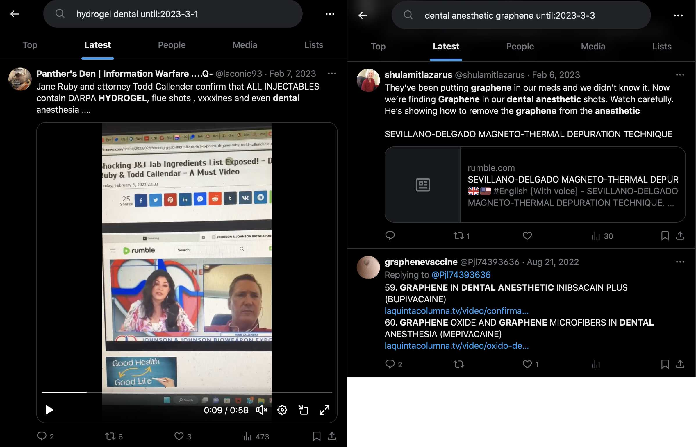
In 2024 Justin Leslie came out as a whistleblower who said that Project Veritas was controlled opposition and that James O'Keefe had attended Bohemian Grove. He is supposed to have briefly worked for Pfizer as a "formulation analytical scientist", and he was supposed to appear on Project Veritas as a Pfizer whistleblower just like Melissa McAtee. However he is probably about as genuine as other Project Veritas whistleblowers, because he is supposed to have given Carrie Madej a vaccine vial which contained hydras, and he says that virology is a pseudoscience: [https://www.lifesitenews.com/news/documentary-indicates-james-okeefe-attended-bohemian-grove-suggests-hes-a-cia-asset]
After graduating from the University of Rhode Island in the spring of 2020 with a bachelor's degree in pharmaceutical and biomedical sciences, documentary producer Justin Leslie states he entered a biomedical science master's program at Rutgers University and then took a job as a formulation analytical scientist at Pfizer in Andover, MA.
During the first semester of his master's studies, Leslie reports coming to the realization "that the whole COVID narrative was absolute nonsense," that the so-called "vaccines were actually death shots," and even further, in a position challenging a well-established consensus, he became convicted that virology itself "was one big pseudoscience."
[...]
He further accepted his position at Pfizer in March 2021 with the specific intention of becoming a whistleblower should he come across important inside information, even having corresponded with Project Veritas (PV) at this time to offer his services.
After reaching out to PV again, they provided him with undercover recording equipment he began wearing to work in late September 2021. Soon after, he provided PV with a vial of Pfizer-BioNTech COVID-19 vaccine, and gathered with other PV personnel and Dr. Carrie Madej to investigate the contents in a Mamaroneck, New York apartment on October 14, 2021.
Madej, an internist trained in osteopathic medicine, became well-known on the internet warning viewers to avoid the COVID injections and for examining these substances as well. On this occasion, Leslie explains how the doctor guided the microscope examination of these samples from Johnson & Johnson, Moderna, and the vial from Pfizer which he had provided.
In the J&J sample the group witnessed what the young whistleblower explained as "black circles and what looked like parasites revolving around them as if they had a mind of their own." The Moderna and Pfizer samples "had similar parasitic-like creatures in them," and while he couldn't identify what he was looking at, he said, "it was absolutely nightmarish to witness."
Six days later, Madej was a guest on the Stew Peters Show where she explained these phenomena, also stating she had been working with an "amazing team" from PV promising that they would be "giving their story very soon, which will have so much detail, so much data, so please look for that."
But instead of releasing this story that several members of this PV team witnessed themselves, Leslie states "this entire story was buried by Project Veritas" and it never came out, even as other researchers such as Dr. Robin Wakeling in New Zealand, and Dr. David Nixon in Australia, corroborated the findings.
The same article also mentioned that he promoted Stew ops about changes in the blood of vaccinated people seen with dark field microscopy, kalamari clots, and luciferase:
The documentary covers several other stories Leslie believes were of vital importance to the public which were declined for publication by Project Veritas. These include evidence of significant changes in blood following COVID vaccine injections, the widespread presentation of large "white fibrous" blood clots which began to appear in corpses beginning in 2021, and indications of the "glowing" enzyme luciferase being present in the injections, which Leslie testifies he witnessed himself.
During an interview with Stew Peters in October 2021, Carrie Madej said: "I have worked with Project Veritas - an amazing team there - and they were able to work with a whistleblower from Pfizer, and through chain of custody they brought forward some of the vials. So I have some of my own images. But Project Veritas will, you know, be giving their story very soon which will have so much detail, so much data." [https://rumble.com/vnzy9f-shocking-dr%2e-carrie-madej-releases-first-look-at-pfizer-vial-contents.html, time 1:32] So it matches up with Justin Leslie's story.
The Pfizer whistleblower Melissa McAtee has also said that COVID vaccines contain hydrogel, nanotechnology, graphene oxide, and quantum dots:
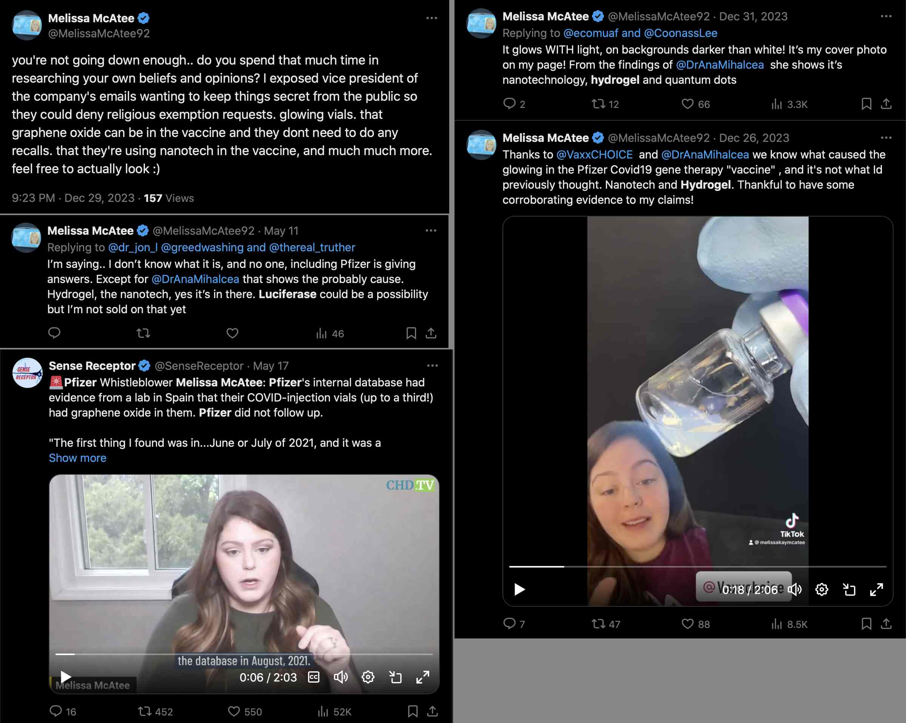
The earliest reference to Melissa McAtee/Strickler I found on Twitter was from October 7th 2021 UTC after she had already come out as a whistleblower on Project Veritas, and they had already released a slickly produced video of her interview with O'Keefe (which now has about 4 million views on YouTube). [https://x.com/search?q=%22melissa+strickler%22+until%3A2021-10-8&f=live, https://www.youtube.com/watch?v=FUXGB5FzhPc]
In July 2024 the "International Journal of Vaccine Theory, Practice, and Research" published a paper by Daniel Broudy and Young Mi Lee titled "Real-Time Self-Assembly of Stereomicroscopically Visible Artificial Constructions in Incubated Specimens of mRNA Products Mainly from Pfizer and Moderna: A Comprehensive Longitudinal Study". [https://ijvtpr.com/index.php/IJVTPR/article/view/102]
Even though the authors used an optical microscope, they wrote that they were able to see structures that "resembled carbon nanotube filaments": "As time progressed during incubation, simple one- and two-dimensional structures over two or three weeks became more complex in shape and size developing into stereoscopically visible entities in three-dimensions. They resembled carbon nanotube filaments, ribbons, and tapes, some appearing as transparent, thin, flat membranes, and others as three-dimensional spirals, and beaded chains." Ana Maria Mihalcea also wrote that a photo by David Nixon showed a "carbon nanotube" even though Nixon has said that his photos were taken with an optical microscope at 400-fold or 2000-fold magnification level. [http://web.archive.org/web/20240000000000%2a/https://anamihalceamdphd.substack.com/p/new-images-of-self-assembly-structures]
Daniel Broudy is an associate editor of the IJVTPR journal which published his paper, but I guess it's not a conflict of interest. [https://ijvtpr.com/index.php/IJVTPR/about/editorialTeam] The list of associate editors also includes Mary Holland, Brian Hooker, Stephanie Seneff, James Lyons-Weiler, Russel Blaylock, and Shimon Yanowitz. In September 2024 CHD posted a video where Mary Holland interviewed Ana Maria Mihalcea about how there was nanotechnology and quantum dots in COVID vaccines. [https://x.com/ChildrensHD/status/1845970362971853192]
On the page for the editorial team of IJVTPR, the bio for Shimon Yanowitz says that "242 citations of his publication about image processing appear on the Web of Science". It might just be a coincidence that he has been specialized in image processing like Daniel Broudy. But actually I wouldn't be surprised if whatever agency casted Broudy and Yanowitz for their roles would've chosen them because their qualifications included image processing.
The introduction of the paper in IJVTPR said: "The fact that such nanotechnology is in the COVID-19 injectables was first discussed, we believe, by Campra and colleagues (2021a, 2021b; Spectroscopy & Campra, 2021) and was followed up by Yanowitz (2022a, 2022b, 2023a, 2023b) as documented in part by Hughes (2022) with 26 references to Campra et al. and 26 to Yanowitz's early work." The references to Yanowitz were links to videos he did with Sasha Latypova, Maria Zeee, and Doctors for COVID Ethics.
The discussion section of the paper also mentioned Latypova: "Sasha Latypova, an executive and researcher for the pharmaceutical industry, discovered an extreme deviation in side effects among the batch-to-batch vials of mRNA COVID-19 injectables." [https://ijvtpr.com/index.php/IJVTPR/article/view/102/291] However Latypova wrote this tweet about the paper: "I saw the research published in this paper being done a year ago. I am in the same signal group with the authors. No judgement, but the paper does NOT show 'self-assembling nanotechnology'. There is a bunch of optical microscopy (can't see nano) and no evidence of coherent technology. Nano-and micro-junk is not technology! A lot of this is just hydrogel curing and decomposing. That it makes some regular looking structures is not a proof of anything other than don't inject this crap. Now that John Campbell is promoting it, this confirms that it's a red herring, a distraction. He never speaks about real threats, at least not when they matter. His channel is heavily supported/promoted by someone behind this whole crime and he is a puppet." [https://x.com/sasha_latypova/status/1832422894799819219] I pointed out to her that she had promoted the earlier Stew Ops in the same genre by David Nixon, Shimon Yanowitz, and Mat Taylor, but she said that "Yes, I wrote this and I stand by this, as Matt did a lot of good observational work and at least at the time was careful about making grandiose claims that 'nanotechnology' cult members are not making." However it's interesting that she said that she was in the same Signal group with the authors. When she interviewed Shimon Yanowitz in 2022, Yanowitz also said that they had a mutual friend in South Korea, which probably meant Young Mi Lee.
Based on Daniel Broudy's ResearchGate profile it would appear like he is an expert in propaganda rather than science: [https://www.researchgate.net/profile/Daniel-Broudy]
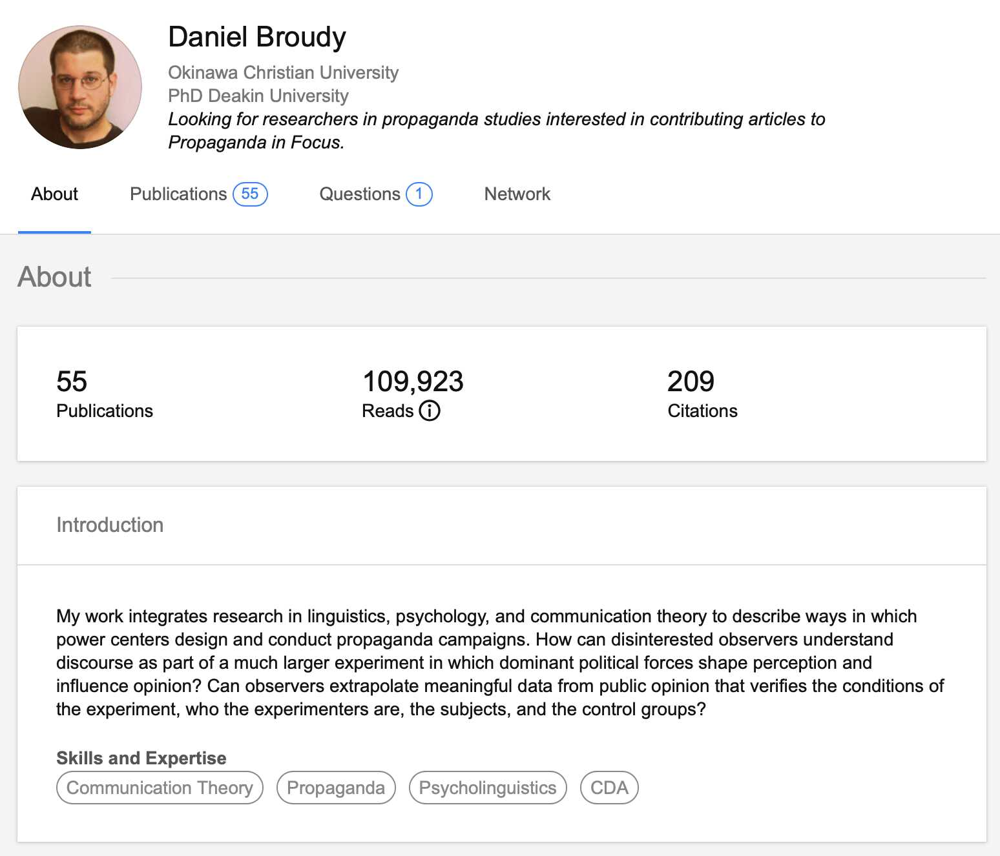
Daneil Broudy's bio on the website of the Asia-Pacific Journal says that he used to work for the military but now he focuses on "systems and techniques of mass manipulation in state and corporate public relations": "Daniel Broudy is Professor of Rhetoric and Applied Linguistics in the Graduate School of Intercultural Communication at Okinawa Christian University. As a former imagery analyst with the U.S. Army, he draws upon his military experience and doctoral training in psycholinguistics to develop courses in communication and the rhetoric of the visual. His research focuses on systems and techniques of mass manipulation in state and corporate public relations. He is managing co-editor of Synaesthesia: Communication Across Cultures (ISSN 1883-5953)." [https://apjjf.org/daniel-broudy_1372862042]
One article in his Synesthesia journal was about feminist superheroes and another article was an interview with a comic book author: [https://www.synaesthesiajournal.com/papers.html]
During an interview with Ana Maria Mihalcea, Broudy said that he served in the intelligence corps: "And when I began doing the research for the corona story, it kinda reminded me a bit about my experiences when I was in the intelligence corps so many years ago." [https://rumble.com/v5byv09-millions-of-self-assembly-nanoparticles-in-covid-19-injections-ep-33.html, 12:12]
A bio of Daniel Broudy from 2014 says that he was an "Army intelligence analyst in Panama during the Noriega regime" (which lasted from 1983 to 1989): "Daniel Broudy, former Army intelligence analyst in Panama during the Noriega regime, studied rhetoric and linguistics at Deakin University where he earned a doctorate in 2007. He has been a lecturer with University of Maryland University College and is Dean of the Graduate School of Intercultural Communication at Okinawa Christian University. He is co- author of the 2010 book, Rhetorical Rape: The Verbal Violations of the Punditocracy and co-editor of the 2013 volume Under Occupation: Resistance and Struggle in a Militarised Asia-Pacific. His scholarly work appears in System, The Asia-Pacific Journal: Japan Focus, and Synaesthesia: Communication Across Cultures." [https://www.synaesthesiajournal.com/uploads/7/3/4/7/73473431/broudy_review_summer_2014.pdf] Another article said that he was "a graduate student in the early 1990s contending with duties in the regular Army and the post-traumatic stress of a recent deployment in a preemptive invasion of Panama", and the article said that he was stationed in Panama in the years leading up to the 1989 US invasion. [https://systemicfrog.medium.com/in-defense-of-thought-and-speech-a-reflection-on-criticisms-leveled-against-scholars-at-new-york-c7df5af8d372]
Daniel Broudy is based in Okinawa and he used to work for the US military, but Okinawa is basically one big American military base. Many of his scholarly articles have also dealt with the American military presence in Okinawa: [https://www.researchgate.net/profile/Daniel-Broudy]
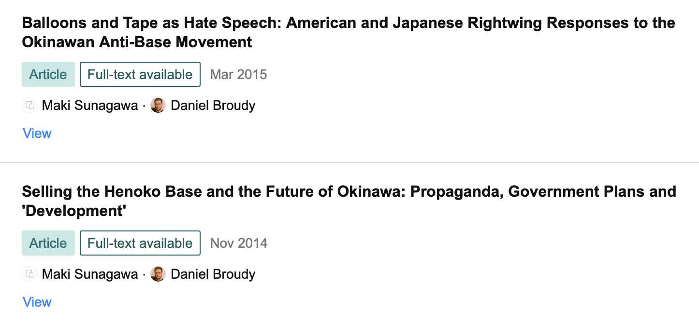
It's also interesting that Broudy is a professor at a Christian college, because Christian organizations have served as a notorious front for western intelligence in East Asia. Many people in Miles Guo's movement are also Christians. In an interview with Died Suddenly, Broudy's Korean coauthor Young Mi Lee also said that she was a Christian. [https://x.com/DiedSuddenly_/status/1825892636936241392] There have been a several cults in East Asian countries which have mixed elements of Christianity with western conspiracy culture, like the Unification Church, Miles Guo's movement, the Japanese Pana-Wave cult, and Raelianism (which became the second-most popular in Japan after France).
When I searched for tweets about Young Mi Lee, most of the tweets were posted either by accounts that promoted Miles Guo or accounts that posted about western conspiracy topics in East Asian languages. [https://x.com/search?q=young+mi+lee+until%3A2024-8-30&f=live] One of them was this account that posted in Chinese but that didn't post about Miles Guo, but its header graphic was about the Judeo-Christian Bible:
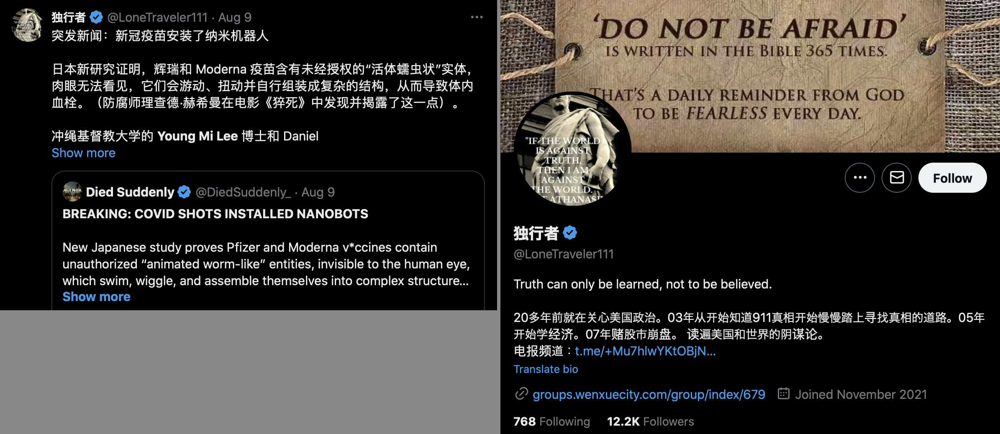
The first interview that Young Mi Lee and Daniel Broudy did about their paper was on a podcast by the Twitter account Died Suddenly. Died Suddenly also posted a tweet about their paper which got over 8 million views (which featured one video clip of Richard Hirschman and another video clip of a panel by Ana Maria Mihalcea, Mat Taylor, David Nixon, and Shimon Yanowitz). [https://x.com/DiedSuddenly_/status/1821862671328714830]
Daniel Broudy wrote an article that was published by PANDA and he did a video presentation for PANDA. [https://pandata.org/the-serpent-and-the-staff/, https://pandata.org/patterns-of-deception-and-deviance-post-truth/] He is the co-director and co-editor of an online publication called Propaganda in Focus along with Piers Robinson, who is also a member of PANDA. [https://propagandainfocus.com/our-team/] The third editor of Propaganda in Focus is Mark Crispin Miller, whose bio says that he used to teach courses on propaganda at New York University and that he has received a grant from the Rockefeller Foundation:
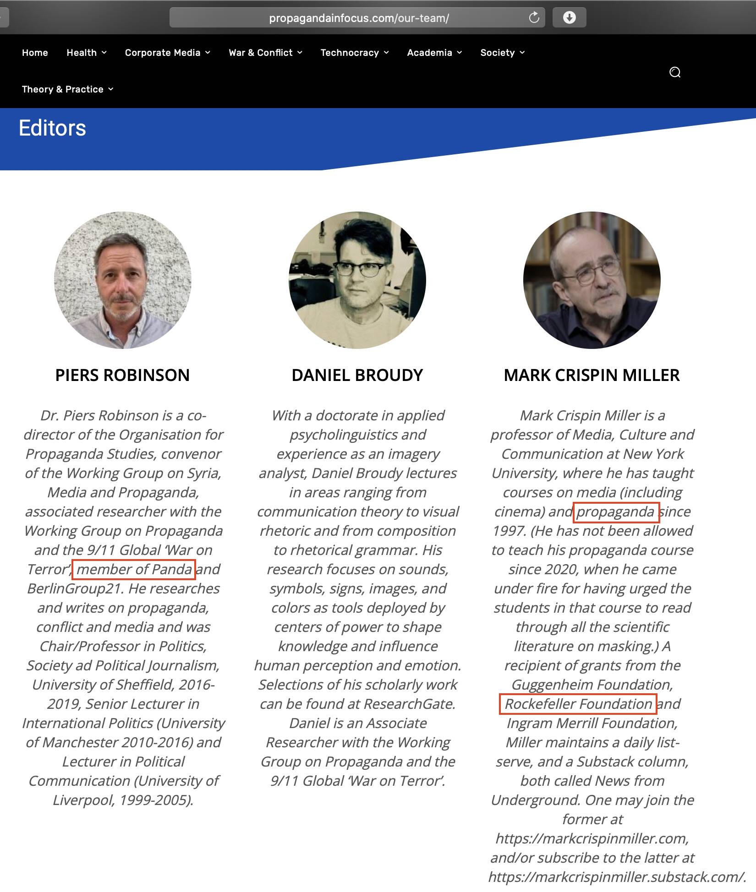
The War of the Worlds broadcast was orchestrated by psychologists from New York under a grant from the Rockefeller Foundation. An article published by the Rockefeller Archive described that the authors later received another grant to research the public reaction to the broadcast: "In his grant proposal, Cantril identified the public reaction to the War of the Worlds broadcast as 'an almost unparalleled source of data' for those interested in understanding the impact of radio on mass movements. It would also be of use to educators troubled by what the response to the broadcast suggests about 'critical thinking and propaganda.' It was a persuasive argument for program officers seeking to understand more clearly how propaganda works, and how to better educate Americans in media literacy." [https://resource.rockarch.org/story/war-of-the-worlds-rockefeller-philanthropies-disinformation-and-media-literacy-in-the-1930s/] So I wonder if modern-day researchers of propaganda similarly release propaganda themselves in order to study how the public audience reacts to propaganda.
Daniel Broudy has also coauthored two papers about nanotechnology in COVID vaccines with Valerie Kyrie, whose bio says that her doctoral thesis focused on the topic of reality perception and its manipulation: "With a PhD in Experimental Psychology, Masters in Clinical Psychology, Kyrie is working in the areas of political psychology, the psychology of atrocity, and psychological operations / perception management. Her doctorate in psychology focused on the topic of reality-perception and its manipulation." [https://ijvtpr.com/index.php/IJVTPR/article/view/49, https://ijvtpr.com/index.php/IJVTPR/article/view/32] When her bio says that she is working in the area of psychological operations, it might have the overt meaning that she is trying to expose psychological operations conducted by other people, because for example she coauthored an article with Daniel Broudy titled "The Covid-19 Concoction: A Recipe for Successful Psychological Operations". [https://propagandainfocus.com/the-covid-19-concoction-a-recipe-for-successful-psychological-operations/] However I suspect that it's also intended to have the covert meaning that she is conducting psychological operations herself.
The senior editor of IJVTPR is Christopher A. Shaw who is also listed as an author at Propaganda in Focus. [https://ijvtpr.com/index.php/IJVTPR/about/editorialTeam, https://propagandainfocus.com/our-team/]
As far as I can tell Lee and Broudy never wrote in their paper that they saw nanobots, but only "nanobot-like structures", "algae-typed magnetic nanobot-like spirals", "bio-nano-robot like coils", "nanoparticles", "nanowires", and "nanostructures":
A magnetic nanobot-like structure appeared at about 180 days incubation and disappeared later in distilled water.
[...]
Nearing the latter part of what we are describing as the stage of peak activity - after approximately 150 ~ 180 incubation days - specific algae-type magnetic bio-nano-robot like coils, dark irregular spirals, appeared near the bottom of the medium (Figure 14).
[...]
In the late stage of Moderna incubation (day 630) in distilled water, nanoparticles reappeared floating again as previously seen during initial microscopic observations before culturing had commenced. This reappearance suggests a recycling pattern we describe later in a proposed model at Figure 27. While Moderna showed just a few filamentous structures with unique split ends and a few bundles of loose thin transparent nanowires, Pfizer, in contrast, showed very few nanoparticles floating in close proximity to the filaments or ribbons, but in a background largely cleared of surrounding nano-debris.
[...]
Culture dishes were placed directly on a heat template set at 36.5 degrees Celsius overnight. The next morning assembled nanostructures were observed floating over the surface of the medium in more discernible and developed shapes than before the heat (warming) exposure.
During an interview with Ana Maria Mihalcea, Young Mi Lee first emphasized that the photos she showed were taken with an optical microscope so nano-scale structures were not visible. But then she showed the photos below from her paper and said: "These structures are conformed as magnetic nanobot, you know. I saw same structures... exactly the same structure, at 2016 paper... I don't remember the paper name... and cited in our paper as 2019 paper. Anyway, both of papers confirmed these structures are from magnetic nanobots." [https://rumble.com/v5byv09-millions-of-self-assembly-nanoparticles-in-covid-19-injections-ep-33.html, 34:27] So because a micro-scale structure had a similar shape as a nano-scale structure, she was able to deduce that the micro-scale structure was composed of nanotechnology. Because I guess nanotechnology works like some kind of a mandelbrot set where larger structures are composed of smaller structures which have a similar shape as the larger structures:
Next she showed the slide below which featured a real image of a microalgae-based biohybrid robot, but then she compared it to the helical structure shown on the right and she said: "I didn't know that what is it. But our member Lisa... You know Lisa, you remember? Yeah, Lisa noticed, Lisa from... macronanobot. So whoa! Surprise! Amazing! I found macronanobot from my incubation study with Pfizer, you know." [time 36:44]
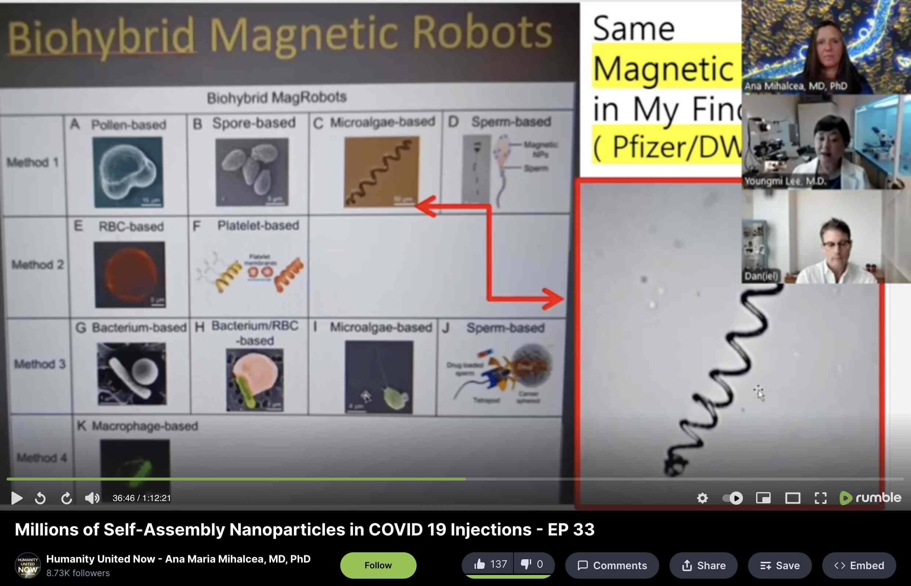
There were zero hits on Google Search for the word "macronanobot", which sounds like an oxymoron. When I asked ChatGPT what the maximum size of a nanobot was, it said that "Anything significantly larger than a few micrometers would generally not be considered a 'nanobot' but rather a microbot."
The papers from 2016 and 2019 which Lee referred to were cited in a paragraph of their paper which said: "Our culture studies revealed that the Pfizer products in simple distilled water produced a variety of transparent ribbons, thin film-like membranes, coils, and spirals even without exposure to special supplements or ambient energy sources. These patterns of growth and appearance in the culture media could not be explained apart from mechanisms of action peculiar to nanotechnology (Cao, 2019; Truong et al., 2016)." I didn't find any images of spiral-like structures in either paper though.
The paper by Lee and Broudy said that the spiral structure was "bio-nano-robot like": "Nearing the latter part of what we are describing as the stage of peak activity - after approximately 150 ~ 180 incubation days - specific algae-type magnetic bio-nano-robot like coils, dark irregular spirals, appeared near the bottom of the medium (Figure 14)." But I guess it's good enough if it's just nano-robot like even though it's on a completely different scale than nanobots.
Lee and Broudy also wrote that they analyzed skin samples of a patient with a variety of Morgellons disease: "During the initial period of incubation, skin extracts (a variety of Morgellons) from an injected subject were placed in normal saline. The donor of the extracts was a patient suffering from the side effects of a paralytic seizure sustained just days after injection of the mRNA experimental product. Her specimens from the Moderna injectable were anonymized and coded as Extract 1 (E1). During the initial examination of the skin extract, surrounding particles appeared and seemed to exhibit a symbiotic relationship through direct observation under the stereomicroscope. After one month incubation of E1, enough seed-shaped particles, less than 1 μm in their largest dimension, sufficiently developed in size were observed floating and moving around the main portion of the skin extract in the saline solution of the culture dish." In 2022 Shimon Yanowitz also told Sasha Latypova that his blood contained an entity that might have been Morgellons, and it looked very mean and it made red blood cells nervous. [https://www.bitchute.com/video/9ZFHWKEYxlCa/, time 9:21] Lee and Broudy cited the video as a source in a paragraph of their paper which said it was a fact that COVID vaccines include nanotechnology.
The policy of the IJVTPR journal says: "Citations of blogs, websites, government agencies, or other sources that either lack a peer-review process or that are known to publish researchers with undisclosed pecuniary biases, are not acceptable unless flagged appropriately and critiqued." [https://ijvtpr.com/index.php/IJVTPR/about] However the paper by Lee and Broudy cited 5 Rumble videos, 2 BitChute videos, drsambailey.com, anamariamihalceamdphd.substack.com, karenkingston.substack.com, and thehighwire.com, but none of those sources were was critiqued or flagged as unreliable.
The People's Voice published an article about Lee and Broudy's paper titled "Japan Declares State of Emergency After 'Nanobots' Found in 96 Million Citizens". [https://thepeoplesvoice.tv/japans-declares-state-of-emergency-after-nanobots-found-in-96-million-citizens/] However the main text of the article didn't say anything about Japan declaring a state of emergency or nanobots being found in 96 million citizens. The article was accompanied by a video by Sean Adl-Tabatabai but it didn't say anything about Japan declaring a state of emergency or nanobots being found in 96 million people either. (Sean Adl-Tabatabai founded TPV together with his gay husband. He has previously worked for BBC and MTV, and afterwards he was the webmaster of David Icke's website, he produced some of David Icke's movies, and he started a short-lived TV channel with David Icke. But Icke also used to work for the BBC as a sportscaster.)
When I searched for the earliest tweets that matched the phrase 96 million nanobots, the first three users after Sean Adl-Tabatabai who posted about the story all seemed like fake accounts: [https://x.com/search?q=96%20million%20nanobots%20until%3A2024-8-11&src=typed_query&f=live, https://x.com/JA_strategist/status/1822367446835007495, https://x.com/SteabhanMacGR/status/1822381572928180567]
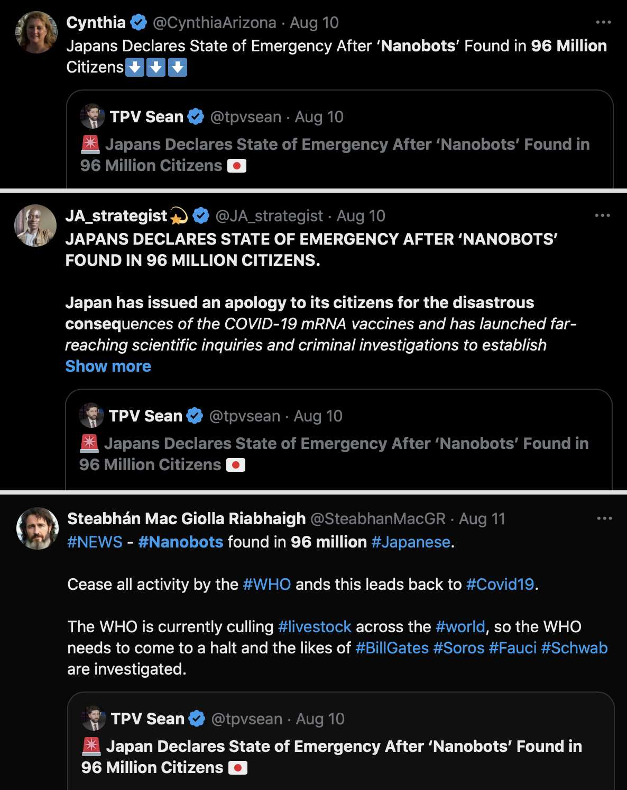
The avatars of two of the three users look AI-generated. The account on the left portrays a black man from Ghana who posts a large number of tweets about American political topics for some reason. It had posted about 40,000 tweets by September 2024 but its oldest tweet returned by the search was from July 2024 (even though that might be if it had changed its username in July 2024, because the search doesn't return tweets that were posted under a different username). [https://x.com/search?q=from%3AJA_strategist%20until%3A2024-7-18&f=live] If you look at the left side of his avatar image, the ear and shoulder look too blurred compared to the face or to the curtain on the background (unless the blur would've been produced by some kind of a digital effect and it wasn't real blur produced by the lens of the camera). But the face in general has the kind of overal blurry appearance as AI-generated 3D images. The avatar of the white man looks even more clearly fake, and the tufts of hair on the left side of the photo are also highly blurred compared to the front of the face:


The display name of the other account is Steabhán Mac Giolla Riabhaigh, which would probably be the name of only a single person in the world if he was a real person. But when I googled for the name, all of the results seemed to be about either the Twitter account or about two YouTube channels which only had a couple of short videos. [https://www.youtube.com/%40SteabhanMac3/videos, https://www.youtube.com/channel/UCE3co78i-TfHOePvlNvfrcw/videos] The newest video on the other channel was a video by Stew Peters.
A thread about the article by The People's Voice was posted by this account that posts in Turkish and that seems to primarily post about flat earth: [https://x.com/2024T2024/status/1824279665390805141]
Tweets about the paper were also posted by IlluminatiCoin, John O'Looney, nikola 3, Sudden And Unexpected, Concerned Citizen, Kim Dotcom, and Alex Jones, which are all accounts that are frequently reposted by bots that promote content about COVID from the controlled alt media:
I also tried searching for tweets that matched Daniel Broudy's name from the days after he was interviewed by Died Suddenly. [https://x.com/search?q=daniel%20broudy%20until%3A2024-8-22&f=live] One of the first tweets was posted by this user which portrays a Portuguese man who lives in Japan, but his avatar is clearly also fake: [https://x.com/IceSohei/status/1826283957161427284]
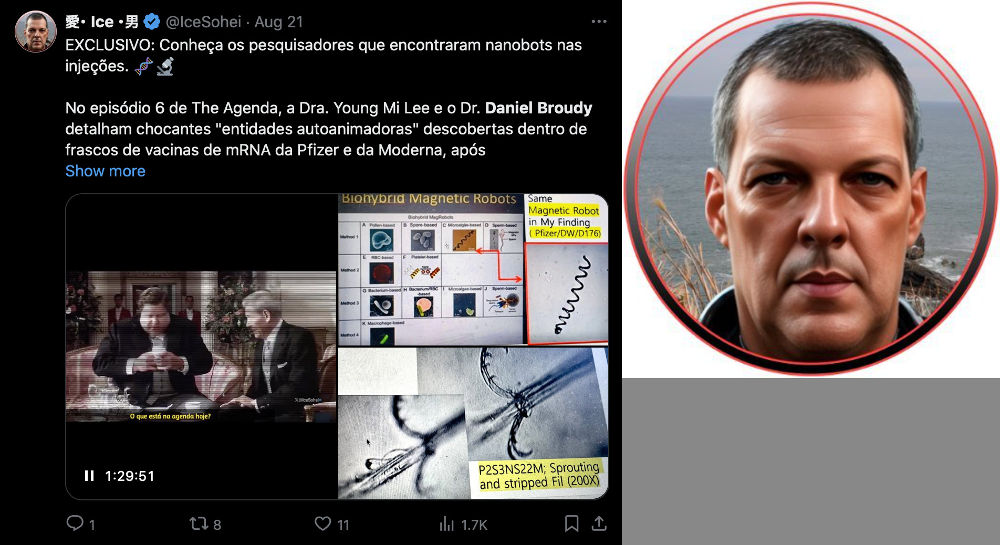
Another tweet was posted by this account that posts in Chinese:
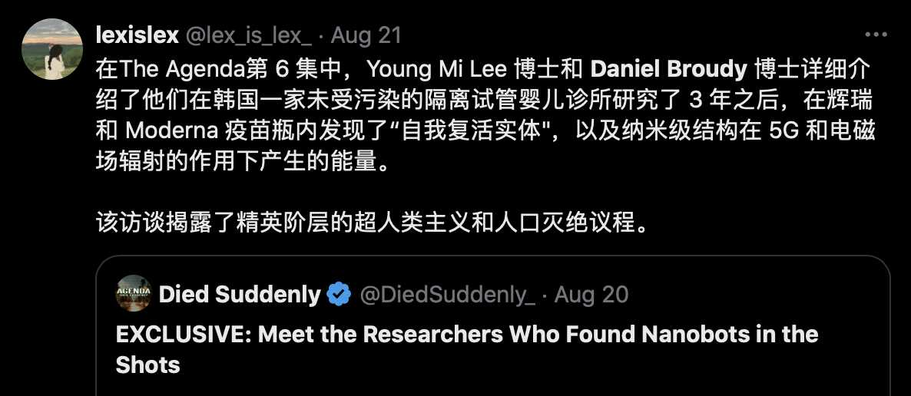
However when I scraped the most recent retweets and quote tweets by the Chinese account up to the point when the infinite scrolling stopped loading more tweets, it had reposted almost no Chinese accounts, but all of the accounts it had reposted at least 6 times posted in English except for its own account. [https://x.com/lex_is_lex_] They included accounts like the flat earther health guru David Wolfe whose account is probably a bot or a human-bot hybrid. [bot2.html#David_Avocado_Wolfe] And they also included iluminatibot, redpillb0t, and thehealthb0t, which are overtly presented as bots and which post tweets from the same pool:
58 toobaffled # Sudden and Unexpected 26 redpillb0t 22 iluminatibot # previously the account with the most community notes 17 ShadowofEzra 14 da_underlord 14 RealDrJaneRuby 12 thehealthb0t 9 BGatesIsaPyscho # Concerned Citizen (currently the account with the most community notes) 8 Vision4theBlind 8 VigilantFox 8 SenseReceptor 8 Inversionism 8 BrockRiddickIFB 8 BarbaraOneillAU 7 lex_is_lex_ 7 catsscareme2021 7 _APWK_ # no-virus guy "Luiz" 6 stopvaccinating 6 Outdoctrination 6 DavidWolfe # flat earther health guru 6 AlpacaAurelius
About a month after Lee and Broudy's paper had been published, the IJVTPR journal published a commentary on the paper by Anne Ulrich, who is the chair of biochemistry at the Karlsruhe Institute of Technology. She wrote the following: [https://www.ijvtpr.com/index.php/IJVTPR/article/view/106/321]
It has long been known in the field of biophysics that all of the intriguing geometries described here by Lee and Broudy (2024) can emerge naturally from lipid preparations, as are used in the modRNA vaccinations in the form of lipid nanoparticles. They may show up especially when samples are stored over extended periods - or under inappropriate conditions. The astonishing μm-sized architectures can be explained by a simple physical process called lipid self-assembly. Notably, lipids make up the bulk of the vaccine ingredients, in other words, 2.5 mg/ml (one quarter of which is cholesterol), compared to a mere 0.1 mg/ml modRNA, in the presence of about 100 mg/ml sucrose and salts (as declared for ready-to-use Comirnaty/BNT162b2). Therefore, instead of seeking an explanation for the strange objects in terms of exotic additives, it is more plausible to start looking at the materials that are already known to be abundantly present in the injectable formulations.
[...]
In fresh modRNA preparations or samples that have been stored properly, no objects should be visible under an optical microscope, because the original nanoparticles with a diameter of around 55 nm are well below the resolution limit of 200 nm (Unruh et al., 2024). According to the manufacturer, the unopened injectable suspensions are stable for up to 10 weeks in a refrigerator. However, if they are stored for longer times or at higher temperatures, or are subjected to freeze-thawing, dilution, agitation, different salt concentrations or pH values, they can break down progressively. The delicate RNA chains are generally sensitive to hydrolysis by acids, bases, bacteria, and enzymes (for example, trace amounts of ribonuclease on the human skin), as well as to oxidation by atmospheric oxygen. Lipids can also decompose chemically in similar ways. Recently, it has been demonstrated that the Pfizer/BioNtech and Moderna injectables are in fact quite stable towards physical stressors for up to 8 days. However, the cholesterol and RNA contained therein are photosensitive and tend to get oxidized under irradiation corresponding to bright sunlight (Fongaro et al., 2023). As a result of any such degradation process, the lipids will rearrange in new ways once they have lost their cohesion due to fragmentation of the RNA chains or due to any change in the molecular composition of the sample.
It is commonly accepted that the physical shapes and sizes of lipid nanoparticles (especially in combination with RNA or DNA) tend to be only meta-stable. This means that the particles are kinetically trapped and have not yet reached their lowest energy state thermodynamically. As a consequence, time-dependent changes in their morphological appearance would be expected simply upon letting them stand. It is important to note that Lee and Broudy (2024) not only incubated their material for extended periods of up to 12 months; but, in fact, they diluted some samples with distilled water or blood plasma. To other samples they added oxidants like H2O2 or ClO2, or they mixed them with some electrolyte solutions, or various colloidal/mineral suspensions. Any changes in the aqueous environment, as well the addition of low molecular weight compounds, proteins or colloids, can dramatically affect the stability of nanoparticles. Under the diverse experimental conditions that were used, a regrouping of the lipids into other types of structures is not at all surprising.
A lipid mixture can often take on several different phase states and/or structural shapes, as is conveniently displayed in a phase-diagram, usually as a function of temperature and water content. But other parameters, too, have an influence of the phase behaviour of lipid systems, such as the component ratios, salt, pH, additives, pressure, etc., many of which will have been affected under the different experimental conditions. It is obvious that some molecular phase separation or de-mixing has taken place in some of the incubated vaccine samples, allowing the poorly water-soluble cholesterol to crystallize out. This interpretation can fully explain the appearance of the sharp-edged platelets and angular chips (top left corner of Figure 1), which have already been attributed to cholesterol crystals (or even simple salt) in earlier discussions cited by Lee and Broudy (2024).
The McCullough Foundation caught a lot of flak after they tweeted a link to Lee and Broudy's paper, but they later deleted the tweet and posted a link to the rebuttal by Anne Ulrich instead. [https://x.com/McCulloughFund/status/1834316750764069339]
In 2022 IJVTPR published a paper by David Hughes titled "What Is in the So-called COVID-19 'Vaccines'? Part 1: Evidence of a Global Crime Against Humanity". It featured images of microchips by the Fifth Column and images of hydras by Carrie Madej: [https://ijvtpr.com/index.php/IJVTPR/article/view/52/288]

However David Hughes is also a writer at Propaganda in Focus, where his bio says that his areas of research include "psychological warfare" and "the class relations between psychological operations": [https://propagandainfocus.com/our-team/]
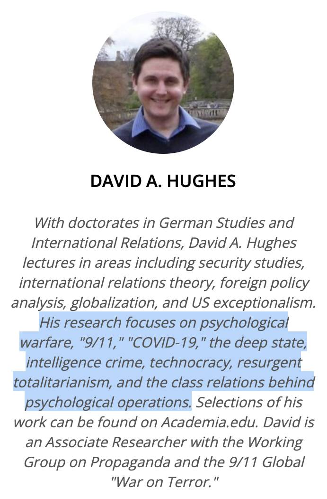
So IJVTPR has published papers about nanotechnology in COVID shots by at least 3 different people who are all specialized in researching propaganda or psychological operations, who are Daniel Broudy, Valerie Kyrie, and David Hughes. Their team of three propagandists has also written articles that were published by Solari Report and Unlimited Hangout: [https://researchmap.jp/d_broudy?lang=en]
The article published in Solari Report said that "we have prepared a video summary of our article, which was presented as part of the Doctors for Covid Ethics Fifth Symposium in December 2022": [https://constitution.solari.com/global-class-war-and-the-politics-of-a-hatchet-job-a-reply-to-john-waters/]
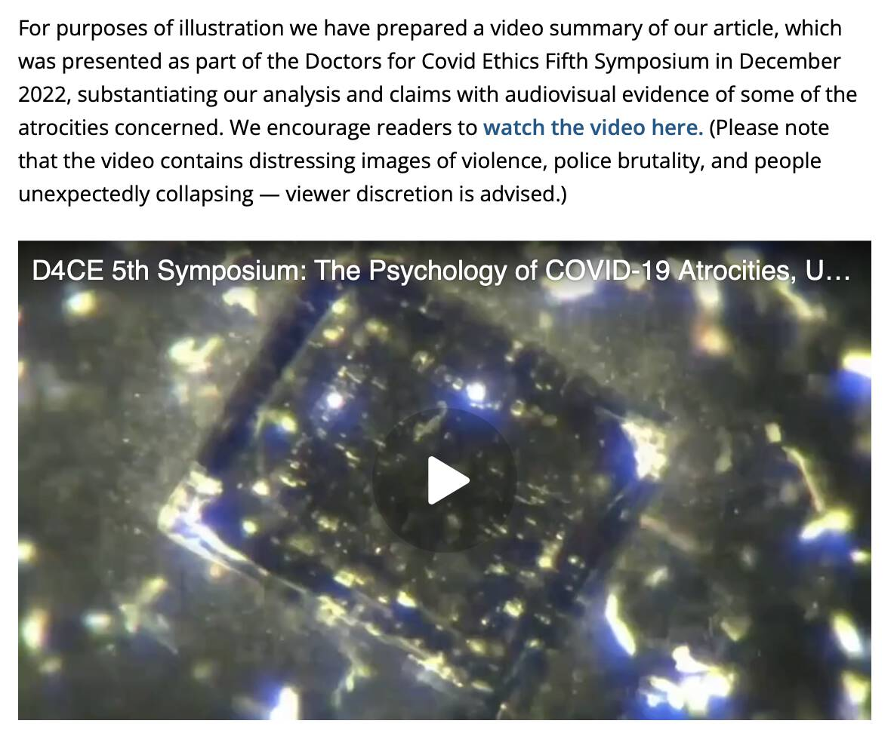
Doctors for COVID Ethics is kind of a shady organization. The sources cited in the paper by Lee and Broudy included 4 videos by Shimon Yanowitz, but one of them was a presentation he did for Doctors for COVID Ethics:
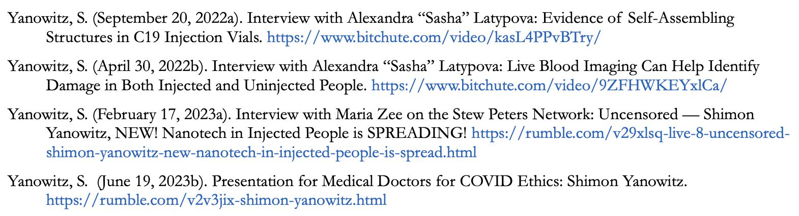
Not surprisingly David Hughes claims that the pandemic was fake, because he wrote: "The 'Covid-19 pandemic' was a Big Lie: there is no credible epidemiological evidence to support its existence. Rather, the 'pandemic' was a media-driven social phenomenon that served to deflect attention from far-reaching technocratic agendas being advanced across every area of life." [https://link.springer.com/chapter/10.1007/978-3-031-41850-1_6] He also wrote: "The 'Covid-19 pandemic' was, in the view of Kyrie and Broudy (2022a), conjured out of 'mass hysteria, malpractice, censorship and juggled data.'"
One way to gauge whether someone in alternative media is genuine or not is to look at which channels they did their alt media on, but if it's the Stew Peters Show like in the case of Sasha Latypova and David Nixon, then they're probably not legitimate.
Another sign that someone is not legitimate is if they don't publish much of their own research in textual form but they're more focused on doing video or audio interviews. For example Sasha Latypova had a Telegram channel before she appeared on Stew Peters, but I don't know about any presence that Karen Kingston or Richard Hirschman had in the COVID conspiratard movement before they started doing video interviews.
I tried to compile a table of the earliest video or audio interviews that various people mentioned in this HTML file did in alt media. The table might be missing a few early interviews for some people. The dates are generally in UTC but some dates might be a day off from UTC dates. Some dates are the date when a tweet about a video was posted on Twitter which might be one or a few days off from the date of the video. Out of the people in this table, J.J. Couey and David Martin started posting videos on their own YouTube channel before their earliest interview listed here.
Stew Peters posted this tweet in April 2024: "The @DiedSuddenly_ account has been hijacked by @LaurenWitzkeDE et al and is currently not being run by the Stew Peters Network." [https://x.com/realstewpeters/status/1776687243760918915] Around the same time he filed a lawsuit against Lauren Witzke's production company TLM Global, which he had hired to produce his show and films. [https://www.courtlistener.com/docket/68403646/fokiss-inc-v-tlm-global-llc/]
An article about the court case said the following: [https://talkingpointsmemo.com/news/lawsuit-exposes-internal-feuds-and-inner-workings-of-stew-peters-extremist-media-empire]
The initial complaint, which notes that Fokiss is doing business as the Stew Peters Network, accuses the TLM team of making "unauthorized donation solicitations" on a website associated with "Died Suddenly." Fokiss' complaint also alleged all of the defendants made "improper" applications for trademarks associated with the "Died Suddenly" brand. The court filing also includes a copy of a termination letter that Peters apparently sent to Szall on January 27, 2024 in an attempt to end their business relationship. That letter describes the "ownership confusion of the 'DIED SUDDENLY' name, twitter page, and documentary" along with "unapproved postings, fundraisers, and even subscription sign ups" that Peters called "unacceptable" and even "criminal."
Despite these concerns Peters indicated in the letter a willingness to continue to work with Szall, Witzke, and TLM. Peters specified that Crosstalk "may continue to air on the SPN." He also discussed the terms for this, which he indicated were part of a separate "contract." The deal outlined by Peters in the letter indicated that "Crosstalk" was fully produced by TLM and then delivered to his company on the afternoon it was aired. He wrote that TLM needed to pay $1,600 monthly to air on the network. The exchange indicates that, at least in this case, Peters charged other hosts to make content for his network, which offered them the benefit of exposure to his following. Peters also wrote that TLM had an "ongoing obligation to complete and deliver ... the remaining two documentaries" for which he said they were already "paid in full for by the Stew Peters Network."
The complaint details the amount TLM was paid to make documentaries for Peters. It also identified Goldco, a relatively mainstream company that helps clients invest in gold and other precious metals as the primary funder of the Stew Peters Network and its documentaries.
According to the complaint, Goldco had two sponsorship agreements with Peters' company that ran from April 2022 to the end of last month. He has continued to identify the company as a sponsor in more recent broadcasts as well. The complaint described Goldco as providing "the majority of the Network's annual budgets and production requirements." Goldco and its CEO, Trevor Gerszt, did not respond to questions from TPM about its role financing Peters' network, and its extremist content.
According to the complaint, Peters' company provided TLM a "documentary budget" of $379,000 through two separate payments last year that were "generally tied to the Plaintiff's obligations to the GoldCo Sponsorship Agreement."
In May 2024 on the Fresh and Fit podcast, one of the hosts asked Stew Peters: "Didn't you say in a lawsuit that you were almost completely funded by a Jewish gold company Goldco?" [https://rumble.com/v4x7str-stew-peters-meets-fresh-and-fit.html, time 48:24] Then Stew answered: "Could I say that I'm funded by a Jewish gold company? Yeah, I am. I mean, Goldco is a great company. They sponsored the film. So in essence I guess you could say that I'm funded by these people. These people give me the funds to go create material and content that I produce to the public for free. So, yeah, I mean, I guess you could say that. The guy that owns Goldco, uh, says that he's a Jew, so." [clip at https://x.com/_RantCast/status/1832767843655684448]
During the same podcast Stew Peters also said that Lauren Witzke had a fake white nationalist persona: "She's like this, um, fake Christian white nationalist gal that has like this online presence of being like, um, you know, Ms. Nick Fuentes kind of sort of. You know, take all of his view points, carbon copy them, put them into her - her online presence, that's her persona. Ok, but she's now like pregnant with a Mexican who I think is gay, a brown baby, and she's like, 'Yeah, whatev'." [time 54:25; clip at https://x.com/RightWingWatch/status/1795475776663363958]
In the initial claim filed by Stew Peters basically stated that Goldco owned his ass: [https://storage.courtlistener.com/recap/gov.uscourts.flsd.664982/gov.uscourts.flsd.664982.1.0.pdf]
43. On April 28, 2022, Plaintiff entered into a sponsorship agreement with GoldCo (the "GoldCo Sponsorship Agreement"), a company that provides services in the precious metals industry.
44. Pursuant to the GoldCo Sponsorship Agreement, GoldCo and Plaintiff worked out an annual budget for GoldCo's sponsorship of the Network.
45. Pursuant to the GoldCo Sponsorship Agreement, Plaintiff had certain requirements it had to meet such as mentioning GoldCo as a sponsor throughout its Network and also producing and releasing a certain amount of documentaries during each GoldCo Sponsorship Agreement contractual term.
46. The initial GoldCo Sponsorship Agreement term commenced on April 28, 2022 and ended on April 28, 2023 (the "Initial Term").
47. Since the Initial Term, Plaintiff and GoldCo have renewed the GoldCo Sponsorship Agreement for a second term (the "Second Term"), which commenced on April 28, 2023 and is set to expire on April 29, 2024.
48. While GoldCo is not a party to this action, the GoldCo Sponsorship Agreement is a vital piece to the relationship, duties, and responsibilities of the parties hereto because the GoldCo Sponsorship Agreement, and the requirements therein, provided the majority of the Network's annual budgets and production requirements.
[...]
53 . Both Plaintiff and TLMG understood that their Agreement regarding Network Production and Documentary Production and the obligations therein were generally tied to the Plaintiff's obligations to the GoldCo Sponsorship Agreement because GoldCo provided the majority of the budget for the production of the Network and also because the GoldCo Sponsorship Agreement had strict requirements regarding the number of documentaries that would be released by Plaintiff in each contract term.
In 2023 when Stew Peters was attacked by Media Matters because of his antisemititism, Lauren Witzke posted a tweet which said "Support Stew from this slanderous attack and buy gold here: goldco.com/stew". [https://x.com/LaurenWitzkeDE/status/1709576077771706637] She also posted a tweet which said "Media Matters will be hearing from our very vicious and money hungry Jewish lawyer!" [https://x.com/LaurenWitzkeDE/status/1709579540710797680]
An interview of Goldco's founder said: "'As a young boy in South Africa, I would get silver dollars on birthdays and Jewish holidays,' he says. 'I would look at these older coins and was amazed. I would savor them and collect them.'" [https://calbizjournal.com/gold-standard/] Lust for gold and silver seems to be hardwired in the blood of these people.
Jane Ruby's interview with Young Mi Lee included a long advertisement for a company called Augusta Gold & Silver, which was also listed as the first sponsor in the description of the video. [https://rumble.com/v5bv8x1-exclusive-pfizermoderna-shots-building-biohybrid-bots.html] The CEO and founder of the company is called Isaac Nuriani, who is related to people with names like Moshe Nuriani and David Levi. [https://www.augustapreciousmetals.com/leadership/, https://radaris.com/~Isaac-Nuriani/1919779837]
{kind=link}
{kind=link}
{kind=link}
{kind=link}
{kind=link}